OpenDeadlock
OpenDeadlockGALI-85. Before: on the 64-bit Windows build a crash in the game's code often ended the program with nothing in game.log (no fault, no end: line), no crash box and no report, even with crashreport=1 -- the window was simply gone (v0.3.0 on Windows 10, four players' logs). The build merged the game's objects into one (ld -r), which left every function's entry in the EXE's function table (.pdata) pointing at its object's first function and unwind data; Windows unwinds through that table to dispatch an exception, and with it wrong the dispatch could fail before the crash filter was called, and the system ended the program. Nor did the filter ever see a corrupted heap (Windows ends the program from inside ntdll), abort() or a C library function's invalid parameter (both __fastfail). After: the 64-bit link takes the game's objects one by one (tools/link.py, the KERNEL32 renames made in each), the function table is whole (0 entries out of order, 3508 before); a vectored handler reports a corrupted heap, a SIGABRT handler abort(), the invalid-parameter handler the C library's, each as crash: ... and the usual report; and the main thread keeps 64 KB of stack for the report after a stack overflow. The 32-bit Windows build has no function table and is unchanged; the other systems too. Checked: check.py (samecode the same, but for the two functions of ce9b2164 the snapshot predates); under CrossOver, DL2_CRASHTEST=dont, dont:heap and dont:abort each end in end: crashed and a report (the heap's with the filter taken away, as ntdll keeps it away); with the old link a one-line change to crash.c was enough for the null-pointer test to loop in the unwinder (c00000ff, a bad function table) and log nothing; the end-to-end tests on port-sdl64.
Full changelog
Every change in detail. The changelog has each release in short.
The port's goal is the shipped game (GOG v1.20, no-CD patch), with its bugs fixed. This file lists every change a player could notice against it, and every bug of the port itself that was fixed, newest first. Building, renaming, constants and comments that leave the game the same (samecode SAME) are not listed; the git history has them.
Each entry says what kind of change it is:
- setting: a new option of the port, off by default, so the game starts and plays as the original unless it is turned on (
opendeadlock.iniorDL2_<KEY>, PLATFORM.md, "Settings"); - platform: the window, keys, sound or network around the game; the game's own code is untouched;
- port fix: a bug of the port (64-bit, macOS, the platform layer), not the original's; the game behaves as the original again;
- game change: the game's own behaviour differs from the original's: a bug of the original fixed (since 2026-11-07, BUGS.md and the GitHub issues), marked
fix:in the source.
and where in the game it is, its domain, in brackets after the kind (-- setting [battle]; two only where it is plainly both, [map, colony]). The web page's What's new groups the changes by domain (galius-iv.github.io, build.py); tools/check_docs.py refuses an entry without one, or with another name than these:
- battle: battles and their replays;
- armies: units and armies on the map: orders, moves, transports, the unit table;
- ai: the computer players;
- colony: settlements: buildings, production, colonists, morale;
- map: the world map: terrain, zoom, fog, disasters;
- empire: treasury, upkeep, trade, the Black Market, research, diplomacy, spies;
- scenarios: campaigns, scenarios, a new game's setup, victory, the scenario editor;
- multiplayer: network games, the relay, hotseat;
- saves: saving, loading, autosaves, Continue;
- interface: the screens, keys, tooltips, messages, the event log, the console, the modern UI;
- mobile: Android, fingers and the on-screen keyboard;
- system: the window, sound, settings file, installing, logs, crashes, the builds.
A before/after screenshot is given where a picture of the game shows the difference. Screenshots are the game's own 640x480 screen (PrintScreen or Cmd+Shift+S, or autoshot); what happens to the window around it (size, sharpness, full screen) does not show in them. "Before" is the original's behaviour, which is also the port's default.
When adding an entry: newest at the top, the commits, the kind and domain, what the player sees before and after, how to turn it on or off, how it was checked. Screenshots go in docs/changelog/, named after the change (skipintro-before.png, -after.png).
v0.3.1
GALI-90. Before: with the modern UI (ui=modern) a toast (a refusal shown as a note, #388) and the line under a building in hand ("Hold [Shift] while placing to build more", GALI-68) were still the game's own drawing in its 640x480 picture, scaled up with the map: the toast in the tooltip's bitmap font, some 1350 pixels wide in a 4:3 window and running under the satellite view (its "Demolish" hidden there), the hint large pixel text across the map's foot. After: the modern UI draws both at the window's size in its own type and theme (platform/modern_toast.c; the modern-ui mockup's "game's toast"). The toast is a panel centred above the main view's foot, between the selection and the satellite view (above the unit table when it is open; portrait, above the rail): the box's picture at its left, its title in red (a refusal) or gold (information) over its text, a stripe of that colour at its left and a bar along its foot running out with its time. It is timed as before -- 2.5 s and 45 ms a character, at most 9 s, kept under the pointer and 1.5 s after it leaves, taken down by a click, replaced by the next -- and Cmd+Shift+M's or the console's toast N shows one again the same way. The hint is a pill at the view's foot, the [key] drawn as a key cap, with a green dot once placing more (Android still shows only that one); a toast stands above it. The game no longer draws its own while the modern UI is showing: it publishes the toast and the hint's state (PortToastState, PortBuildHint, include/gameapi.h). The classic picture and toasts=0 are as before. Checked: check.py (samecode differs in the toast's and the hint's port functions only); the demo's save under a UI script, a Farm in hand and dropped on the City Center, shot at 1600x900, 1280x960 and 810x1080, and gone after its time.

GALI-89. Before: with the modern UI, a message box over a modern screen (the window's close button's Quit Game over a battle's replay) is the modern UI's, but the game draws its own box into its screen as well, and a modern screen that shows a piece of that screen -- the replay's battlefield, the event log's map -- showed the classic box there, behind the modern one. After: while a box is up, those pieces come from the game's picture as it was just before the box opened (m_screen, platform/modern.c); the classic UI is unchanged. Checked: check.py (samecode differs only in main's PortUiItem and PortUiItemDrawn, ce9b2164), every UI script; the combat script now opens Quit Game over the replay and cancels it (tests/ui/combat.txt).
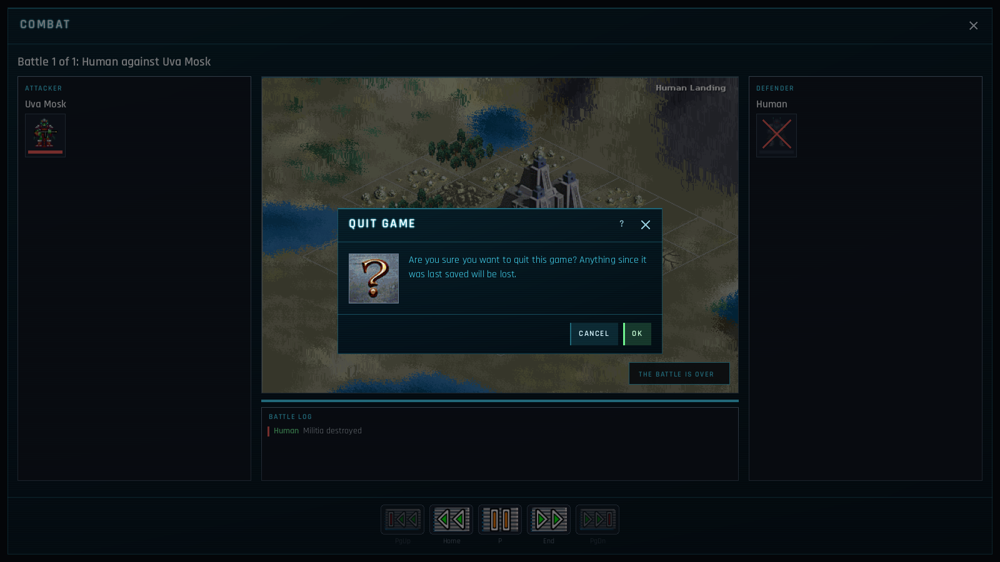
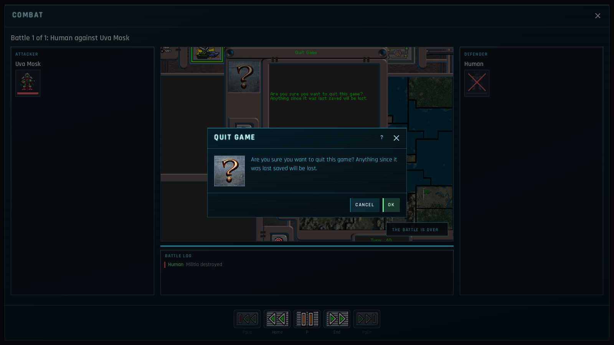
setting (`battlepanels`, on by default)Battle
Battle replays: the battle log names what destroyed each unit, and shows five lines
GALI-91. Before: the modern UI's battle log under a replay (battlepanels, GALI-54) showed three lines at a time, and a lost unit only as "Laser Squad destroyed". After: it shows five lines, and a unit destroyed by another says by what: "Turbo Wing Fighter destroyed by SAM Trooper" (a missile's or a mine's blast names the missile or the mine; a missile spent on its target, or a death the replay cannot tie to a unit, stays "... destroyed"). The game keeps no such record, so the port notes it while the replay fights the battle again: FightRound names each warrior as it moves or shoots, and DamageWarrior notes that warrior as the killer of one it brings down (src/port_battlelog.cpp); nothing the game reads, so the battle is the same. The battle view is a little smaller to make room. Off with the rest of the panels for battlepanels=0; the classic UI is unchanged. Checked: the native Linux build, tests/airetreat/Airetreat08.SAV played to turn 9 under a UI script, the replay of the Re'lu attack on the Human Landing shot to its end; strings.py --check, check_gameapi.py, check_docs.py, check_layout.py pass. The game's code changes in FightRound and DamageWarrior (the two hooks) and PortReplayWarrior; samecode and the end-to-end tests are still to run on macOS (check.py --expect FightRound,DamageWarrior,PortReplayWarrior).
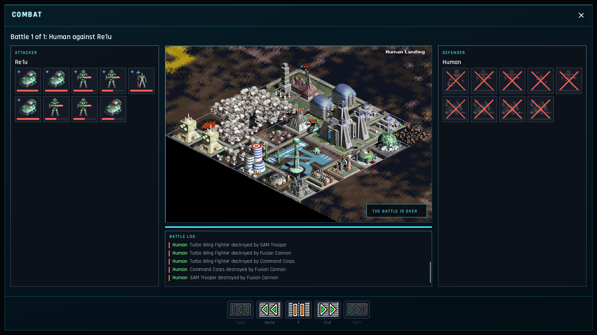
GALI-84, galius-iv/opendeadlock#498. Before: with mapzoom (on by default), the 3D world map is drawn on a canvas wider than the screen -- 1408 points for the demo's world, some 2750 for a 40 x 40 one -- but the tile drawers keep each column's highest drawn row in the original's table of 1280 (g_columnTop). Past column 1280 they read and wrote the next global (g_rowOffset), the land there was not clipped at the canvas's bottom, and its spans ran past the canvas's memory: now and then a crash in Draw3DTile while scrolling or zooming the map (v0.3.0, macOS; the report's canvas was 1792 wide, the write at column 1281, row 846). After: the drawers use a table of 4096 columns, filled whole by SetAllColumnTops, and a canvas that would be wider still falls back to the unzoomed map. Maps of 1280 points or less draw as before. Checked: check.py, samecode differs in exactly the eight users of the table (--expect); the demo's save zoomed in and out under a UI script, no crash.
GALI-64. Before: the modern UI's resource bar and the Taxes drawer read the credits from the text the classic console last drew in its credits item, which the game does not redraw after a purchase -- a building chosen in New Construction, a technology or resources bought at the Black Market -- so they showed the treasury from before it until the game next redrew that item (still 500 after a 50-credit Farm; 852 after a 250-credit technology). After: they read the player's credits (and the resources' figures and the turn) from the game, through the game API's GA_HUD (PLATFORM.md, "The game API"), and show 450 and 602. The resources' stock and change are unchanged: they equalled the console's drawn texts on every frame of the UI scripts (26 of 28 ran; those from saves/Demo-sp.SAV among them). The classic interface is unchanged.
GALI-82. Before: in the modern UI's network lobby (hosting or joined), the Chat card showed only its newest lines, as many as fit (six), and kept twelve: what was said before could not be read again. After: the lobby keeps the last 100 lines, and the wheel over the Chat card goes back through them (three lines a notch), a thin bar at its right saying where; scrolled back, the lines stay put as new ones come, and a line said takes the chat back to its foot. The classic UI's lobby is unchanged. Checked on the native Linux build: a hosted lobby with 16 lines said, the wheel over the card back to line 1 and a new line at the foot (docs/changelog/gali82-chat-foot.png, -back.png; the scripts' new modern wheel DY).
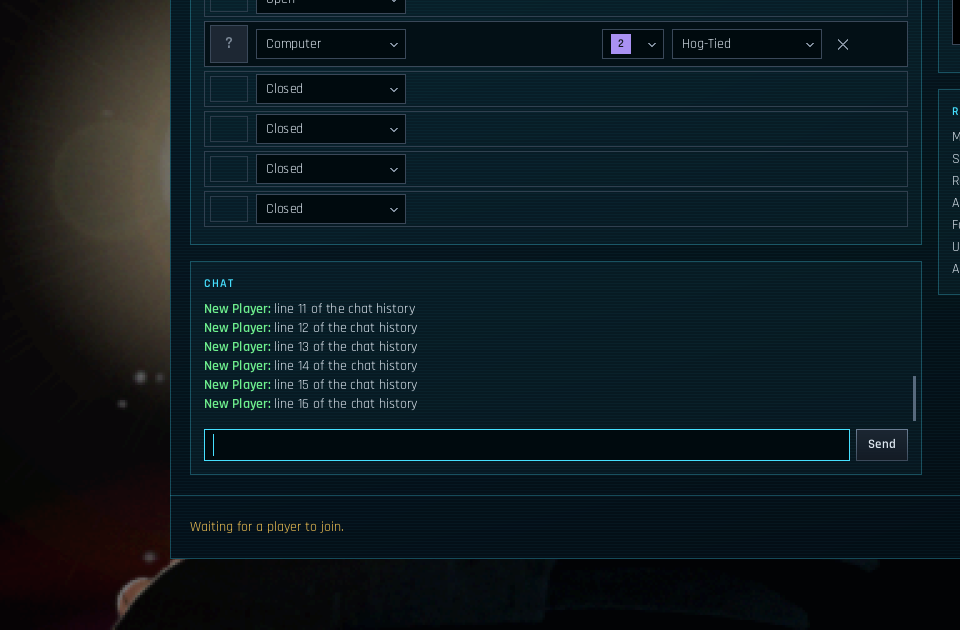

GALI-81. Before: Host a game in the modern UI's Multiplayer opened the game on the network as the lobby came (2026-11-16), so its rules were the game options' defaults -- Conquest, and nothing else to choose. After: the lobby comes with the game's setup as in a single-player random game: the victory condition (Manifest Destiny, Conquest, Shrine Wars) and its cities, shrines or turns, the racial abilities, the rules options and the timers; its Host opens the game on the network, and they are the game's, the guests' too. The map stays the host's to change while it waits. The rules card keeps room for Shrine Wars' two extra rows, so the lobby keeps one height whichever condition is chosen. Checked on the native Linux build: the mphost and lobby UI scripts.
GALI-80. Before: in the modern UI, a game loaded from its turn-end autosave goes straight on to the next turn, whose Event Log opens before the main view was ever shown; with no map kept from before it, the drawer had the game's own screen beside it, which then is the classic Event Log (its advisor and its message panel), and pieces of it in the research bar. After: where the game's own menu is under the drawer or sheet and no map was kept, the main view is dark until the log closes and the map is drawn. A drawer opened over a map already shown is unchanged, as is an advisor's message. Checked on the native Linux build: the autosave loaded (docs/changelog/gali80-elog-load-before.png, -after.png), and the elog UI script's drawer over a new game's map still shows it; the 32- and 64-bit Windows builds compile.
GALI-79. Before: the macOS zip carried Homebrew's libstdc++.6.dylib, libgcc_s.1.1.dylib and libSDL3.0.dylib beside opendeadlock; the build is not notarized, so a player who did not run the xattr step was asked "Open ...? Apple is not able to verify ..." for the program and for each library. After: GCC's libraries and SDL3 (3.4.18, built from SDL's source) are linked into the program, and the zip holds opendeadlock alone: one question, the first time, or none after xattr -dr com.apple.quarantine .. Checked: otool -L lists only the system's libraries and frameworks; release.py refuses a macOS bundle with any library beside the program; check.py (samecode SAME), the smoke test and the end-to-end tests on port-mac as before.
v0.3.0
GALI-77. Before: on Android, a building in hand over the settlement view showed "Hold [Shift] while placing to build more" (GALI-68), though a finger has no Shift to hold. After: on Android that line is not shown; "Placing more: [Right-click] to stop" still is, once a building was placed with Shift (a tablet's keyboard). Other platforms are unchanged. Checked: the block is Android's alone (#ifdef __ANDROID__), so the three samecode builds compile the same code; the native Linux build compiles.
GALI-68. Before: holding Shift at the drop keeps the building in hand for the next site (#57), but nothing on the screen said so. After: while a building is in hand over the settlement view, a line under the view reads "Hold [Shift] while placing to build more", in the small font on a see-through black band (about three quarters dark), white with the key yellow in brackets, as a tooltip names a button's key; once one was placed with Shift and the next is in hand, "Placing more: [Right-click] to stop". It shows with the site's outline (#275) -- from when the pointer is over the grid -- and goes with the drop, Esc or a right click; translatable (GAME_BUILD_SHIFT_TIP, GAME_BUILD_CHAIN_TIP). Checked: samecode against main differs in DrawSettlement alone, and PortDrawBuildChainTip, PortTipTextWidth and PortTipYellow are new (32- and 64-bit Windows); the native Linux build from the demo's save, a Farm in hand over Human Landing, the line under the view in the classic picture and the modern UI, with colony zoom on and off.

GALI-69. Before: in the modern UI, with a box or sheet open over the main menu -- the changelog or update box, Settings, Keys, the tutorial's card, Single Player's and the Editor's choices, the quit question -- the menu behind its shade still lit up, item by item, as the pointer passed over it, though a click there did nothing. After: the menu under the shade stays still; only the box's own controls answer the pointer. Checked: the native Linux build compiles; the menu is drawn as the first start's preview of the menu already draws it, with the pointer taken away.
GALI-67. Before: in the modern UI, Taxes, Chat, Event Log, Scenario Status and Help on the rail at the left each opened their panel (Help its sheet), and while it was open the whole rail was greyed out: a click on the same icon was refused with "Not available now", and the panel closed only by its x, its Cancel or Done, or Esc. Behind Help stood the menu's art, not the game. After: while one of those panels is open its icon on the rail stays lit, and a click on it again closes the panel, as its x does (the game's own Close of that screen, so nothing else changes: Taxes' Cancel, the Event Log's Done). Help now has the main view behind its sheet, dimmed as behind the game menu, so its icon is there to click. The other rail icons stay off while a panel is open, as before. The classic UI is unchanged. Checked: the native Linux build, by a UI script that opens each of the five from its icon (the Event Log also as it opens itself after End Turn) and closes it by a second click on the icon, the screen back to the main view each time, shot open; strings.py --check and check_docs.py pass.


setting (on by default)BattleBattle replays: each side's units as cards, one battle log, damaged buildings' health (
Battle replays: each side's units as cards, one battle log, damaged buildings' health (battlepanels)
GALI-54. Before: the modern UI's replay window showed the game's 3:2 battle view in the middle of a wide window with empty room at its sides, and the original shows nothing of a battle but its sprites: who is still fighting, what was lost, which buildings are under fire, who retreated or was promoted, the player counted and guessed. After, in the modern UI (battlepanels, Settings, Game: Battle side panels): beside the battle each side's units as cards, the attackers' left and the defender's right (the game's sides, IsAttacker: every player but the territory's owner attacks), grouped by player under its race -- each card the unit's picture, its health in its side's colour, its rank (the game's own badges, as the unit table and battleranks draw them) and its state: destroyed (greyed and crossed), mind-controlled (a violet frame), retreated and got away (a white flag) or cut off retreating and lost (crossed, a grey flag), and once the replay reaches its end a gold arrow on each unit the battle promoted. Under the battle one battle log for both sides, the newest at the bottom, scrollable with the wheel: the player's race in its side's colour and what happened ("Laser Squad destroyed", "SAM Trooper retreats", "Scout mind-controlled", "City Center under fire", "Factory destroyed", "Fusion Cannon promoted to veteran"). The game keeps no such log: the replay is the battle fought again, so each frame is compared with the last; promotions and whether a retreat got away are read from each unit's army as the battle left it (the battle is fought before it is watched). The territory's name is no longer repeated under the caption (the game's view names it), and "The battle is over" stands alone (the counts are on the cards). The panels need a window wide enough for them; the battle's picture is about a fifth smaller to make room for the log. With battlebars (on by default) a building of a settlement that has been hit and still stands also carries a health bar over its footprint, in the classic UI too; untouched buildings none. Display only: it reads the battle and changes nothing (read-only glue in src/combat_fx.cpp: PortReplaySides, PortReplayWarrior, PortReplayRace, PortReplayBldg; PortDrawBldgBar in src/settlement_view.cpp). battlepanels=0 gives the window as before. Checked on the native Linux build by UI scripts replaying two battles (the airetreat save's Re'lu attack on the Human Landing, and the turn-39 save's battle) at 1600x900, 2560x1080 and 1024x768; the promotion and retreat icons and the building bars' placement were seen only with their values forced for a shot (a change not kept): neither battle promotes a unit, sees a retreat or hits a building. check_layout, check_settings, check_docs, check_gameapi and strings pass. Not checked: the macOS and Windows builds, samecode and the UI scripts' trees (not on this machine).
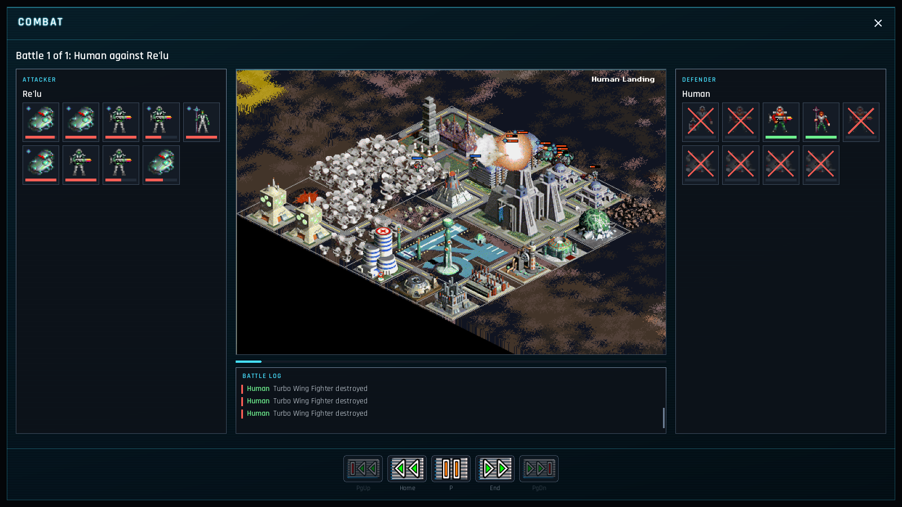

platformColony
A queued unit can be taken out by its x, in the building panel and in Add to the Queue
GALI-66. Before: in the modern UI, a unit could leave a building's production queue only from the building's panel, by clicking its row and then Delete; the "Add to the Queue" drawer, where units are chosen, listed the queue at its foot but could not change it -- a unit added by mistake meant closing the drawer, deleting it and opening the drawer again. After: every queued row has an x at its right, in the panel and in the drawer; a click takes that unit out of the queue (the game's own Delete a Unit, so a network game sends the same message the button does). In the panel the row slides out as one deleted, not flashed green as a unit made; in the drawer the queue is shown again without it, the drawer staying open with "only what can be built" as it was. The classic screens are unchanged. In the game's code: the unit list's pass (CheckUnitList) answers Delete a Unit for the row asked, chosen in the panel's list first (PortUnitListUnqueue, port glue; the original's path does the rest). Checked: the Linux and Windows builds' game objects compile, the native Linux build links; check_layout, check_docs, check_gameapi, check_settings and strings.py --check pass. Not yet played: the bqueue UI script and samecode (--expect CheckUnitList) remain to be run.
GALI-60. Before: with ui=modern, the main menu stood over a still picture, the planet and ships of the game's intro art. After: the backdrop lives, slowly. The planet drifts and breathes (the art a little larger than the window, panned and zoomed over about a minute), three soft glows in the theme's colours wander across it and pulse (cyan, blue and green on tactical; steel blue, the logo's gold and grey on steel), a few dozen stars twinkle, and on tactical a faint scan line sweeps down the screen every 9 seconds, as a hologram's. All of it under the column's shade, so the menu items read as before; only the main menu moves, not the other screens. The original's main menu is a still 640x480 picture; the classic screens are unchanged. Other versions to choose from, for trying them out (Settings, Interface: Main menu animation, or menuanim=): drift the planet's drift alone, glows the glows alone, stars a starfield flowing past in three depths, aurora curtains of light waving across, sweep a band of light crossing the art every 6 seconds; all is the default, off keeps the still picture. Under the test driver it is off unless DL2_MENUANIM is set. Checked: the Linux build's objects compile; strings.py --check, default_ini.py --check and check_docs.py pass; the glows, stars and scan line rendered offscreen by a harness of their own (SDL's software renderer, both themes, 30 s of frames) and looked at; then the native Linux build's real main menu shot by a UI script every 100 ms and every 600 ms, both themes, each version, and the frames looked at as GIFs (on GALI-60).
GALI-56. Before: the game names none of its 42 campaign missions -- each is a save in LEVELS keyed only by race and number (MAUG3), and the briefing page has no heading -- so the modern UI's Campaign Selection showed "Mission 1" .. "Mission 6" with the planet's type, and the briefing sheet "Maug campaign · Mission 3 of 6". After, with missiontitles=1 (on by default; =0 is the original's): each mission has a title of the port's own, written after its briefing and in its race's voice, using the planet or place the briefing names ("Revenge on Phoryx One", "Save the Queen!", "Crush Little Aliens", "Free Comrade Pash Kol"). It is drawn with its number on the mission's tile on Campaign Selection, "3. Revenge on Phoryx One", in two lines at most and in place of "Mission 3" and the planet's type (the planet's picture shows the type); with its number over its briefing under the missions; and on the briefing sheet during play (Shift+F3), under "Maug campaign · Mission 3 of 6". The classic UI is unchanged. The titles are the port's text, in lang/opendeadlock.pot (GAME_MISSION_MAUG3 ..), so they can be translated. A briefing's own text is untouched.

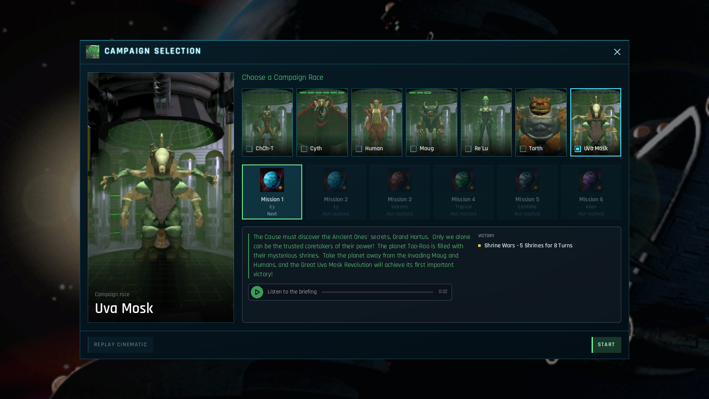
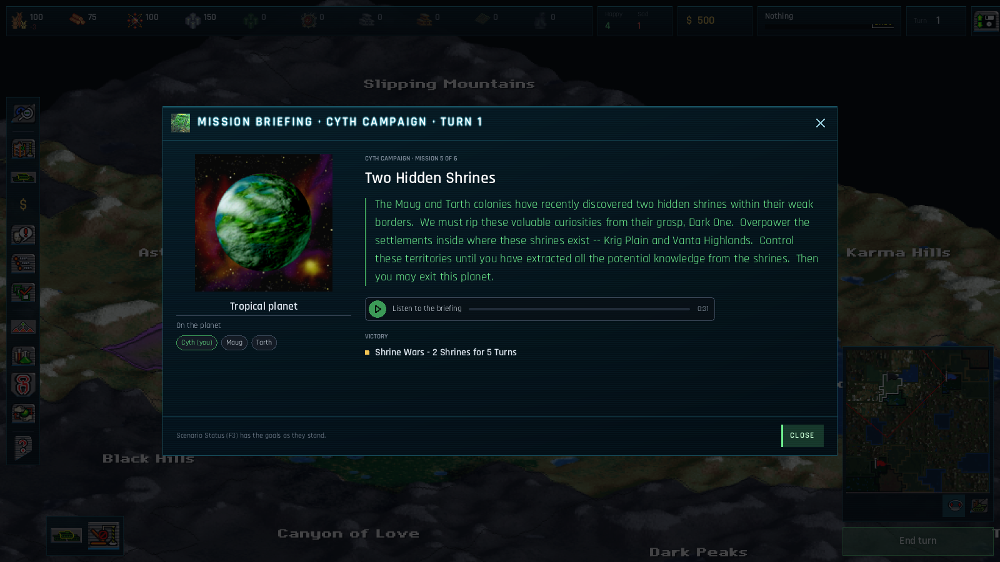
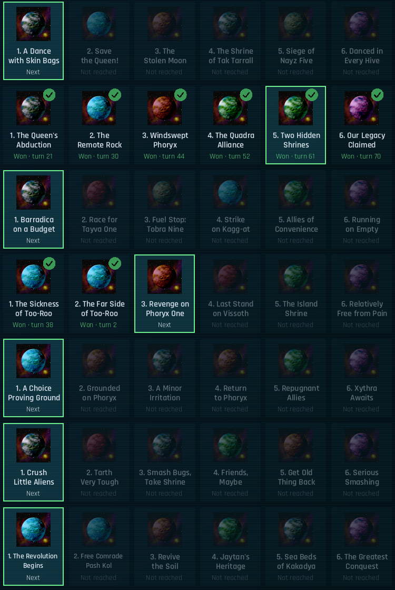
Checked on Linux (the native build, a UI script): Campaign Selection for each of the seven races at 1600x900, 1024x768 and 810x1080, every one of the 42 titles whole on its tile, none cut (a title is split where its two lines are most even; in portrait two of the Uva Mosk's take the type a size or two smaller; "Krig Plain and Vanta Highlands", the draft's Cyth 5, did not fit and became "Two Hidden Shrines"); Cyth's mission 5 played and its briefing sheet shown at the three sizes; missiontitles=0 gave the tiles as before. The two Windows builds and the Linux build compile; check_settings, check_docs and strings --check pass. Not checked: the macOS build and samecode (not on this machine); no game code changed (src/, include/ untouched).
setting (on by default)BattleVeterans and elites marked over their health bars in battle replays (
Veterans and elites marked over their health bars in battle replays (battleranks)
GALI-59. Before: in a battle replay a veteran or elite unit looks the same as a new one; the original shows a unit's rank only in the unit table, as a small badge on its picture (AW01; DL1's badge on the map, DrawArmyGraphic, is never called in DL2), and nothing of it in battle, where it counts (a level adds 15 to accuracy, WarriorAccuracy). After: with battlebars, a veteran's bar carries the game's own rank badge at its left, a blue gem (AW01 0x3ec), and an elite's an orange gem (0x3ed) -- the badges the unit table draws for a unit not selected -- with a retreating unit's white flag left of it. The modern UI's unit tiles show the same two badges at their top left, in place of the gold stars they had, so a rank looks the same everywhere. (The original's unit table draws other frames for a selected unit: a yellow triangle, 0x3eb, for a veteran and the blue gem for an elite; that stays as it is.) The rank is the unit's as it joined the battle (100 experience a veteran, above 400 elite): a promotion won in the battle shows in the next. Not on a 256-colour screen. Display only: it reads the battle and changes nothing. battleranks=0 none (Settings, Game: Ranks over health bars); under the test driver it is off unless DL2_BATTLERANKS=1. Checked on the native Linux build by tests/battleranks/replay.txt on the airetreat save (the Re'lu's attack on the Human Landing, five attackers veterans in the save, three made elite and one more a veteran by the script), with and without the setting; the modern unit tiles by a UI script with each tile's level forced for the shot (a change not kept); samecode against main on the x86 and x64 builds: PortDrawBattleBar differs, PortBattleRanksOn and PortDrawRankBadge are new; check_layout, check_settings, check_docs, strings and fourcc pass; the UI scripts give the same results as main on this machine. Not played: the end-to-end tests (macOS; the bars are off under the test driver).
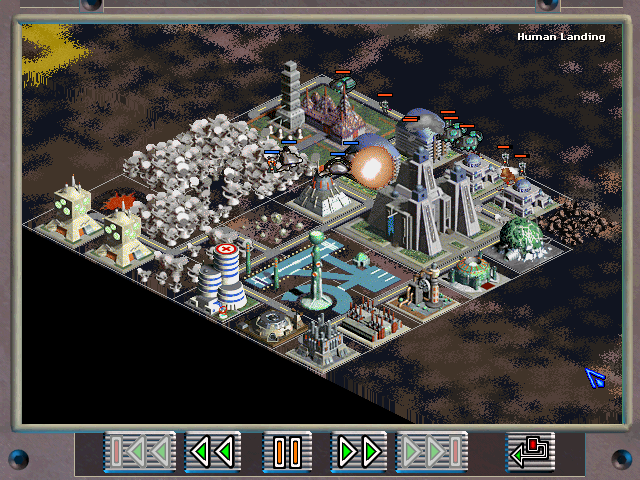
setting (on by default)InterfaceThe modern UI moves: controls react, screens fade, figures count (
The modern UI moves: controls react, screens fade, figures count (uimotion)
GALI-58. Before: the modern UI snapped from one picture to the next -- a control under the pointer changed colour in one frame, nothing showed that the mouse button was down on it, a click on a control that was off did nothing at all, screens and drawers appeared whole, numbers jumped, and a unit added to or taken off a building's queue simply was or was not there. After, with uimotion=full (the default): every control glows in and out under the pointer, sinks while the button is held on it and flashes when it is let go; a click on one that is off is refused in red, shaken, with "Not available now"; screens, sheets and boxes fade into each other, drawers slide in from the window's edge, list rows (the event log, Load, the queue) come in one after another; the resource bar's figures and the credits count to their new value, lit green or red, a "+28" or "-5" rising beside them; a new turn shows "Turn N" across the map and pops the turn's number, a finished research lights its panel, End Turn breathes while it waits; in a building's panel a unit added slides into the queue, one taken off slides out (green when the front unit is done, not deleted), the rows under it close the gap, the unit being made has a bar under it (a glint running along while under way, amber how much of the material short it has or pulsing with no labour), a unit picked pops, and the workers count up and down one by one; tabs, Settings' section mark, its choices' highlight and the market's tabs slide to the one chosen, switches draw their check, Settings scrolls smoothly and gives a little at its ends; in the lobby a seat taken slides in, a team's chip pops and Ready draws its check; on Campaign a mission won since the screen was last seen stamps its check on, and the next mission's pip beckons. uimotion=reduced keeps the glow, the press and the flash alone; off is the modern UI as before (Settings, Interface: Motion). Drawing only: nothing the game does changes, and the classic screens are untouched. Checked: the native Linux build plays the building queue's UI script (bqueue) and a turn, with DL2_SHOTMOTION=1 shots a few ms apart catching the motion's frames; strings.py --check and check_docs.py pass.

GALI-61. Before: in a battle replay at a settlement, units coming in from beyond the map's back edges (the attackers' side) could be drawn over a building they stood behind -- on the Human Landing a trooper stood on the roof of the dome, and the orbs beside it overlapped it. GetPriority, the draw order of a warrior's sprite, divided its cell by three with C's truncation, so the two rows (columns) of cells just outside the edge, -1 and -2, counted as row 0, among the buildings; and y % 3 was then negative, so the sub-cell table was read from the wrong row or from the stack beside it. A unit at (7, -1) got 580, the dome on tile 2 575: drawn after it. After: a unit with a negative cell is behind or beside every tile, so it is drawn before them all, in the order of its depth (x + y) among such units; once it steps onto the map it takes its tile's order as before. Only the drawing changes: the battle is fought the same. Checked on the native Linux build: the airetreat save's battle (the Re'lu's attack on the Human Landing) replayed with shots every 250 ms, before and after, and a log of every warrior's cell and draw key; samecode against main on x86 and x64: GetPriority differs (x64 by its disassembly: samecode's x64 pass does not list this static function), the other functions of combat_fx.cpp only by the offsets of calls within the file, which moved with it. Not played: the end-to-end tests (macOS); a battle in the open (the same order among its sprites, no buildings).

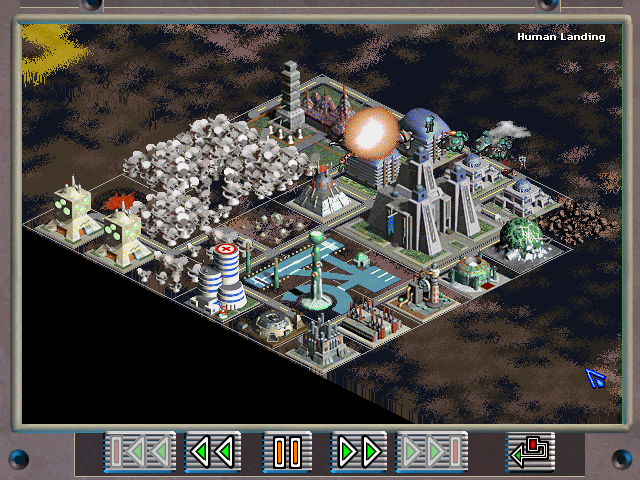
GALI-57. Before: in the modern UI's lobby (a random world and a network game), each choice of a seat's Team dropdown had a line under it -- "allied with its team from the start, for good" under Team 1 to 4, "every player for itself" under No team -- the same line four times, saying what the coloured chip and the name already do. The seat-type dropdown likewise had "a computer colony" under Computer and "nobody" under Closed. After: those choices are their name alone, centred in the row; Player (hotseat) and Open (a network player) keep their line, which says something the name does not, as do the skill levels (their effect and the score) and Random. Checked: the Linux build's objects compile; strings.py --check and check_docs.py pass; the lobby played on the native Linux build by a UI script, its Team and seat-type dropdowns shot open before and after.
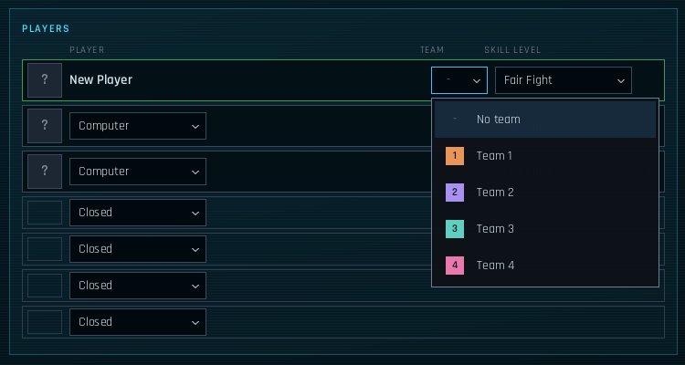

GALI-51. Before: in a battle replay friend and foe are hard to tell apart. The combat sprites show a unit's race (BirthCombatSprites: cmbtCritter + race) but nothing of its player, forts, missiles, berserk and juggernaut units look alike whoever owns them, and battlebars' bars are green, yellow or red by health alone. After: with battlebars, each unit's bar is filled in its side's colour: blue the local player's units, cyan an ally's (a military pact, or a team of the lobby), orange-red an enemy's; in a battle the local player is not in, blue the defender and its allies, orange-red the attacker. The side is the unit's owner at that moment, so a mind-controlled unit changes colour. The bar's length is still its strength left; the retreat tick and the white flag stay. Not on a 256-colour screen. Display only: it reads the battle and changes nothing, so a network game's players may differ. battlesides=0 gives the green, yellow and red bars again (Settings, Game: Health bars in side colours); under the test driver it is off unless DL2_BATTLESIDES=1. Chosen from five prototypes (a ring under each unit, an outline round its sprite, the bar's border in the colour, and the whole bar) on the user's screenshots. Checked on the native Linux build by tests/battlesides/replay.txt on the airetreat save (the Re'lu's attack on the Human Landing), with and without the setting: without it the screens are the same as before; samecode against main on the x86 and x64 builds: PortDrawBattleBar differs, PortBattleSidesOn and PortSideColour are new; check_layout, check_settings, check_docs, strings and fourcc pass; the UI scripts give the same results as main on this machine. Not played: the end-to-end tests (macOS; the bars are off under the test driver), and a battle in the open (no such save here; it draws its bars by the same function).


GALI-55. Before: the modern UI's main menu showed OpenDeadlock's version left of Quit as plain text; the list of changes came up only by itself, in the update box or after an update. After: the version is a link (white and underlined under the pointer); clicked, a box like the update box, "OpenDeadlock's changes", lists every version the update manifest holds (the last check's, kept), newest first, each with its short lines, the installed version marked "installed"; OK (Enter, Esc) closes it, Full changelog opens the web page's. It works with update=off too (nothing is asked of the network) and does not keep the update box from coming up. Before any manifest is known -- the first start offline, or until a release is signed with the update key -- the version opens the web page's changelog in the browser. Checked on Linux by tools/update_test.py's new cases: the version clicked with a kept manifest and update=off (the box, scrolled, closed, nothing asked) and with none (the web page's changelog handed to the browser, a stand-in xdg-open); the Windows builds compiled, not run.

setting (on by default)SystemThe main menu says when a new version is out, with its changes (
The main menu says when a new version is out, with its changes (update)
GALI-38, phase 1. Before: a player learned of a new release only from the web page or the Discord. After: once a day, from the main menu, the game asks the web page for the newest release's manifest (a plain request, nothing of the player's in it; never during a game) and checks its signature. When the release is newer, a box comes up on the main menu, once per version: "OpenDeadlock X.Y.Z is available", the installed version, the release date and the download's size, and the changes of every version since the installed one, the same short lines as the Discord post, in a list that scrolls; "Needed to play online with the new version." when the network code changed. Download opens the Downloads page (the game does not update itself yet: phase 2), Cancel closes it for that version. The main menu keeps an "Update to X.Y.Z" entry that opens it again: an item with a badge in the modern UI, a small label in the corner of the classic one. After an update, the first start lists what changed since the version run before (whatsnew). Settings > Information: Check for updates (update=off never asks anything), Update box (update_popup=0: the entry only), What's new. Nothing is shown until the first release whose manifest is signed with the release key (RELEASE.md). Checked on Linux by tools/update_test.py against a stub site signed with a key made for the run: the box by itself in the modern and the classic UI, scrolled, cancelled and not again, the kept manifest on the next start with nothing asked, what's new, a manifest changed after signing thrown away, update=off asking nothing; the Windows builds compiled, not run.
v0.2.2
platformSystem
The first start's window on every platform, Linux too: what it needs and why, and where to get help
GALI-44. Before: the first start's window (GALI-39) said in one line that the game's files were not found, with no links; on Linux there was no window at all, only an error box saying to write gamedir= in opendeadlock.ini, and the program ended. After: the same window on Windows, macOS, Linux and Android. It says what OpenDeadlock needs and why -- your own Deadlock 2, its folder or GOG's installer setup_deadlock_ii_shrine_wars_*.exe; about 470 MB copied, with your saves, into OpenDeadlock's folder, once, the original folder left untouched -- and links to the Discord ("Need help? Join the Discord") and the web page, opened in the browser. Choose folder and Choose installer open the system's own dialogs: on Linux the desktop's (xdg-desktop-portal) or zenity's. Linux without either gets the window saying how to point OpenDeadlock at the game by hand (GOG's installer in its folder, gamedir= in its opendeadlock.ini -- both named with their paths -- or the program in the Deadlock 2 folder) and Quit, as does any system whose dialog cannot be opened; the terminal says the same, and alone without a display. The copy's (or unpacking's) window keeps its progress and time left and adds a tip, in turn, and the same links. Checked: macOS and Windows (CrossOver) through the new DL2_GAMEDIR_SHOT pictures; Linux arm64 in Debian 12 under Xvfb -- without zenity or a session bus the window says how by hand and Quit ends it (exit 1), with zenity Choose folder opens zenity's folder dialog, with no display the terminal says it; Android on the emulator (Pixel Tablet) -- the window, the Discord link opening Chrome, Choose folder the system's picker. check.py passes, samecode SAME.


GALI-45. Before: the modern UI's main menu showed "OpenDeadlock · Deadlock II v1.20" left of Quit, the game's version, the same in every build. After: it shows the build's own version, as game.log and the network name it (git describe): "OpenDeadlock v0.2.1" for a release, "OpenDeadlock v0.2.1-5-gb7b1b4fe" for a build between releases, "OpenDeadlock" alone for one made outside a git checkout. Checked: the Linux build's modern.c compiles.
port fixSystem
Crash reports: one per crash, a fault in a library named by the program's frame, the next start's box
GALI-35, found sending real crashes of v0.2.1 on every platform (macOS, Linux in Docker, Windows under wine, the Android emulator) through the relay. Before: on Android a crash could be reported twice -- an abort arriving while the fault handler wrote the first report came into the handler again (SA_RESETHAND resets only the signal taken) and wrote a second, two GitHub issues for one crash; a fault outside the program (in libc, SDL, a system DLL) gave the report an offset from the program's base that pointed nowhere; and the box on the start after a crash said the report "will be sent the next time the game starts", though that start sends it. After: the handler runs once a process (on_fault, and Windows' crash_filter likewise): a fault in it ends the program at once, one on another thread waits for it; a fault outside the program is named by the program's first frame, where it called out (game.log says so); the box says "The crash report will be sent in a moment." Also, for testing: the test hook and the server are settings now, crashtest and crash_url (still DL2_CRASHTEST and DL2_CRASH_URL), since Android gives an app no environment; neither is ever part of a report. Checked: tools/crash_test.py's six cases on macOS; on the Android emulator (API 35), crashtest=report with crash_url set: one crash, one report, sent by the next start through the relay; a SIGSEGV sent from outside (it lands on the UI thread, in libc): one crash and one report where there were three and two, game.log saying the fault is outside the program, and the next start's box saying it will be sent in a moment. The Windows builds compile (not run). check.py passes, samecode SAME.
GALI-39. Before: on Android, a first start without the game's files showed only a box saying to copy them into the app's folder, Android/data/org.opendeadlock/files -- with adb or a USB cable, which most players cannot reach (Android hides that folder from file managers). After: the desktop's first-start window, drawn at the screen's density: Choose folder... opens the system's folder picker, and the Deadlock 2 folder picked (its saves too) is copied into data/ in the app's folder, with the copy's window; Choose installer... opens the file picker, and GOG's installer picked is unpacked there (as is one lying in the folder picked). A wrong folder or file says so and asks again; Cancel asks again; Quit ends. The next start finds data/ and asks nothing. Files copied there by hand still play in place. (Android does not let an app take Download itself: the game goes in a folder of its own.) Checked on the emulator (Android 15, Pixel Tablet): a folder copied (22 files, 466 MB, and 3 saves), GOG's 526 MB installer unpacked from Download (the same 22 files, the same MD5s), a file that is not the installer, a folder without the game, Cancel, the next start; the game then plays its opening. check.py passes. The first start's windows (the question and the copy's, on every platform) are now drawn in the modern UI's default theme, tactical -- glass panel, capitals, cyan keys -- where they were always steel, read before the settings are (DL2_UITHEME=steel keeps steel).
v0.2.1
GALI-35 (the design: GALI-34). Before: the crash box (GALI-29) asked the player to post the bug report's zip in the Discord's #bugs channel, which most did not. After, on an official release: the box asks "Report this crash to the developers?" -- Report sends a small report to the relay's /crash, which opens (or counts, for the same crash) an issue on GitHub, and the box shows its id; Don't report sends nothing. The Discord button and the zip stay as they were. With crashreport=1 the report is sent without asking and the box says so, with its id (or that it will be sent on the next start, with no network). New players are offered it on the first start's choice of interface, a check box left unticked; anyone can turn it on in Settings > Information. Players who already chose an interface are not asked anything new. The report: the build, the system, the fault and the program's frames as offsets, the last 200 lines of game.log and the last 32 KB of error.log, the settings that are set (less names, addresses, the relay and the seed), with the game's and the home folder, the player's name, IPv4 addresses and chat lines taken out; never a save. It is sent by a process of its own, never by the crashed one, over HTTPS with the system's own stack (WinHTTP, libcurl on Linux and macOS, Java's on Android); a report not sent is tried again on the next start, three times in all. Local builds (anything but an exact release tag) send nothing and keep the box as it was. Checked on Linux by tools/crash_test.py against a stub /crash: Report, Don't report, automatic, offline, the next start's sending and the next start's question, and each payload free of the folder's, the home's and the source tree's paths; the Windows builds compiled, not run (no wine here); Android not built (no NDK here).
setting (on by default)MultiplayerA network game hosted is listed publicly unless turned off (
A network game hosted is listed publicly unless turned off (net_public)
GALI-33. Before: a game hosted through the relay was joined by its code only unless the host turned on "List publicly" (net_public=1), which most did not know of, so the relay's page and other players' Join a Game list rarely had a game to join. After: net_public is on unless set: a game hosted through the relay is in its public list, its name and code on the relay's page and in the Join a Game list. The "List publicly" switch beside Host a game (and "List my games publicly" in the modern UI's settings, Network) writes the choice to opendeadlock.ini, so a host who turns it off keeps it off for the next game; net_public=0 does the same by hand. The test driver keeps the original's defaults, so nothing is listed there.
Checked: check.py passes (samecode SAME: the settings' default table and the modern UI's settings only); opendeadlock.default.ini regenerated; nettest's private host now sets DL2_NET_PUBLIC=0 explicitly.
v0.2.0
GALI-29. Before: a crash ended the game without a word -- the window was simply gone, and the player did not know there were logs, where they were, or where to send them. After: once the fault is logged (log.c; crash.c on Windows), the game writes the --report zip (report-<date>-<time>.zip: the logs, opendeadlock.ini, the newest save) in the game's folder and shows a box: "Sorry, OpenDeadlock has crashed", the zip's name and the folder, and a request to post it in the #bugs channel of OpenDeadlock's Discord. Its button, Open Discord and the folder, opens the Discord's invite in the browser and the folder in the system's file manager (the Discord only, on Android). When the box could not be shown at the crash -- game.log has end: crashed but not crash box shown -- the next start shows it ("OpenDeadlock crashed the last time it ran"), writing the zip then if there was none. No box under the test driver, a UI script or background. Checked on Linux by a harness around log.c (a real SIGSEGV, the message box and SDL_OpenURL stubbed): the box's text, the zip's line and crash box shown in game.log, the signal still ending the program (139); a box that could not be shown shown on the next start and only then; no box with dl2drive.txt present; the folder's URL with a space percent-encoded. The three builds' platform objects compile; not run on macOS or Windows.
setting (on by default)ColonyWhat cannot be paid for is listed in red on New Construction and the unit list (
What cannot be paid for is listed in red on New Construction and the unit list (markunaffordable)
GALI-28. New Construction (D902) and a building's unit list (D901) open on what the player can have now; their All or Producable button lists every building or unit instead. Before: in that list they all looked alike, and the only way to see whether one could be paid for was to choose it and read its cost lines. After: each one the player cannot have now is listed in red, the colour of a cost the player lacks in the lines beside it. On New Construction that is a building CanBuild refuses: too few credits, a material neither the settlement nor the player's other territories can supply, or the technology missing. On the unit list it is a unit CanAfford refuses in this territory. It can still be queued and waits for what it lacks, as in the original. The modern UI's New Construction and Add to the Queue mark the same rows in its red. FillBuildingList and FillList (src/unit_table_3.cpp, src/scr_unitlist.cpp) keep each row's answer, and the lists' handlers draw a marked row's text in red. The unit list already asks CanAfford for every unit. New Construction asks CanBuild for every row with the setting on, as its default list always does. Takes effect the next time a list is filled. On by default; markunaffordable=0 (or DL2_MARKUNAFFORDABLE=0) brings back the original's lists. Under the test driver it is off unless DL2_MARKUNAFFORDABLE=1.


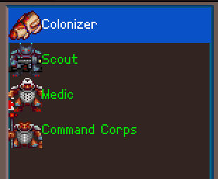
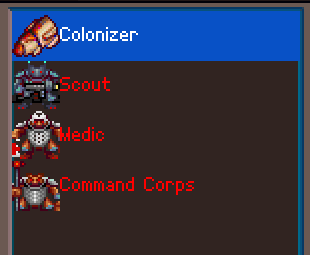
With the modern UI:
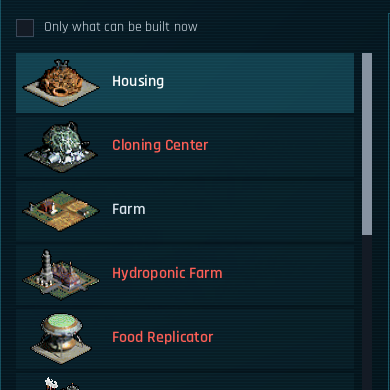
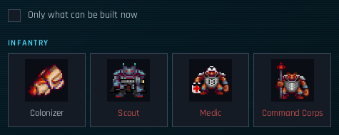
The first turn of a new random game (seed 12345): with All on, Cloning Center, Hydroponic Farm and Food Replicator are red, and on the City Center's list Scout, Medic and Command Corps are red (the Colonizer, 50 cr. and 10 wood, is not). Checked by a UI script on the Linux build in both UIs, the setting on and off. samecode on the x86 and x64 builds against main: the game's code SAME besides BuildingListItemProc, FillBuildingList, UnitListItemProc, FillList and PortBuildingListState, and the two new functions. The ten others that differ (the lists' other functions in the same files) differ only in their calls' offsets.
GALI-28. On New Construction and Add to the Queue the box was ticked while every building or unit was listed, and clear while only what can be built was. The game's button is checked while All is shown, and the box showed that state as it was. It is now ticked while the list shows only what can be built (platform/modern_panels.c).
#422. Before: with the game's files in lower case (innoextract -L, a copy from a disk that ignores case) the Linux build played, but wrote no opendeadlock.ini with the settings listed: its check for the game's folder looked for DEADTEXT.CAM as written (the C library's fopen); so did the command line's save, before moving to the program's folder (gamedir.c then found the folder anyway). And where two folders or files matched a name the game asked for only without regard to case (Saves/ and SAVES/), the file layer took the first the directory listed. After: both checks ignore the case, as gamedir.c's does (Windows unchanged, its fopen ignores it already); of several matches the file layer takes the one as written, else the one in capitals, else the first by name. Checked: samecode SAME; on Linux (arm64, OrbStack) in a lower-cased copy of the game: the build before wrote no opendeadlock.ini, this one wrote it and reached the player-name screen; started from another folder with a save, both builds loaded it (gamedir.c); fold_case alone, before and after, with sAves/, Saves/ and SAVES/ listed in that order: saves/a.sav was sAves/a.sav, now SAVES/a.sav; Saves/a.sav stays. The eight end-to-end tests on port-mac: only their known differences.
#416. Before: the load and save lists kept a file's name up to its first dot, so Human039.old.SAV (a renamed backup, a cloud-sync conflict copy) was listed as Human039, and Load, the load screen's details and Delete -- on either screen -- took saves\Human039.SAV: another save was loaded, or deleted. A hidden file such as the ._Human039.SAV macOS writes beside a save on a disk without its metadata was an empty row. After: a row is the whole name without its last extension (Human039.old), so every button reaches that file; names starting with a dot are left out (never a save of the game's: its name box takes no dot). Saves the game writes are listed as before. Checked: samecode differs in FillSaveFileList and the load list (in_load_PopulateFileList) only, with the new helper PortFileListName; in play (drive.py) with Human039.SAV (the demo's save, turn 1), Human039.old.SAV (turn 39) and ._Junk.SAV: before, the load list was an empty row and Human039 twice, the second row turn 1; after, Human039 and Human039.old, which loads turn 39, the save list shows the same two rows, and Delete on Human039.old removed that file and kept Human039.SAV. The eight end-to-end tests (port-mac): only their known differences (battle's fixes #25/#26, battle_quick's g_shownStats, saveload's dump_loaded); their saves have no dot in their names and list as before.
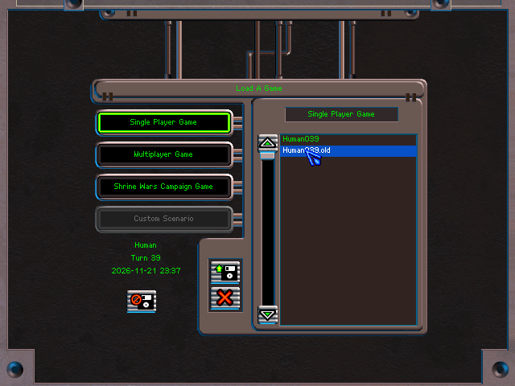
BeforeAfter: Human039.old, turn 39platformColonyInterface
The modern building panel's tasks have - and + beside them: workers moved without a drag
GALI-27. With the modern UI (modernui). Before: a worker was moved between the colony pool and a building's tasks only by dragging it from one card to another. After: each task's card has a - at its left (one of its workers back to the colony pool) and a + at its right (one of the pool's idle colonists onto it); Alt moves all of them, as with a drag. They are the game's own moves, the same as a drag's (PortMoveLabor), so the game's refusals stand (the building or housing full); a button is off when there is nothing to move or the task is locked. Dragging works as before. The classic panel is unchanged. Checked by ui_check on Linux: the new script bpstep (Trade's + twice, its - once, Culture locked) and bpdrag, bqueue, hud, modern SAME; port stops before the panel opens, on main too.

GALI-26. With the modern UI (modernui). Before: New Construction listed a building's cost as plain lines with a dot ("50 tons of iron"), Add to the Queue showed the units' names and pictures with no cost at all, and a queued unit waiting for a material said so in words. After:
- New Construction: each material needed has the resource bar's own picture before it, and the game's colour for it -- white when the settlement holds enough, orange when the player has it in another territory, red when not at all (SetItemStats' colours); the credits a gold "$".
- Add to the Queue: every unit's tile shows its cost under its name -- a gold "$" and the credits, then each material's picture and amount, coloured the same way (WriteUnitData's colours; the credits red when the treasury is short). Without the collection surcharge the game's own list adds to the credits. The editor's Add Units shows none, as nothing is paid there.
- The building panel's queue: a unit waiting for a material ("20/50 Wood") has its picture.
- Move Settlers and the Black Market: the credits a price or cost is in have the "$"; a Black Market unit's materials ("5 tons of iron") their pictures.
- What is produced: New Construction's Produces lines ("Food", "Steel (with Metallurgy)") and a building panel's tasks named after a material have its picture. The materials' pictures are the game's (the MI00 set of the resource bar's item for each resource, read from the main interface's tree); the game has none for the credits, which have the gold "$" the resource bar and the rail show them with; the figures come from the game's data (PortBuildingListCost, PortUnitListCost, read-only). Checked by check.py's builds and samecode (the game's code SAME besides the two new functions) and by a UI script on the Linux build; the queue's material line was not reached in play.

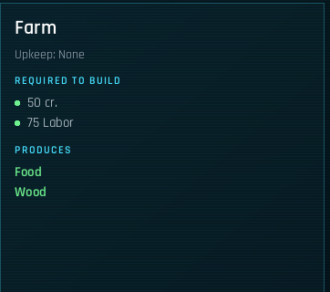
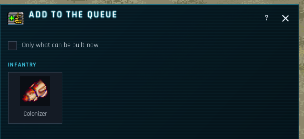
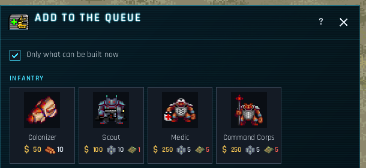
setting (on by default), game changeAIComputer players' attackers withdraw when badly damaged, as in Deadlock 1 (
Computer players' attackers withdraw when badly damaged, as in Deadlock 1 (airetreat)
GALI-19. When a computer player's attack force sets out (SetAttackForceMission), every member gets a retreat setting: the share of its defence it may lose in a battle before it withdraws to a neighbouring territory of its own (AddWarrior makes it the warrior's retreatDamage; MoveWarrior withdraws it once its damage reaches that). Deadlock 1 gave each member that was neither Juggernaut nor Berserk a random 50 to 99 percent; Deadlock 2 gives every member 100, so a computer player's attackers fight until they are destroyed. With airetreat=1 (or DL2_AIRETREAT=1) the members that are neither Juggernaut nor Berserk (Attack Units Only, or Avoid Mines on a mined territory) get DL1's random 50 to 99 again, drawn from LocalRand as DL1 drew it. Juggernauts and berserkers keep 100, as in DL1 (a berserker never retreats anyway: SetRetreat gives it no territory). Each member set is noted in game.log: airetreat: player 1 army 8299 (unit 10) attacking territory 10 retreats at 50%. On by default (the user's decision, 2026-11-21); airetreat=0 (or DL2_AIRETREAT=0) turns it off: then no number is drawn and the game plays as the original. Under the test driver it is off unless DL2_AIRETREAT=1, as the tests compare with the original. The computer players play only on the host, so in a network game the host's setting decides.
With the setting each withdrawal from a battle is noted in game.log too (WarriorRetreated: airetreat: battle at territory 14: attacker player 1 (computer) army 8283 (unit 2) withdraws, damage 10, retreat point 9, defence 16, retreat at 55%), battles between computer players included, which the event log does not list.

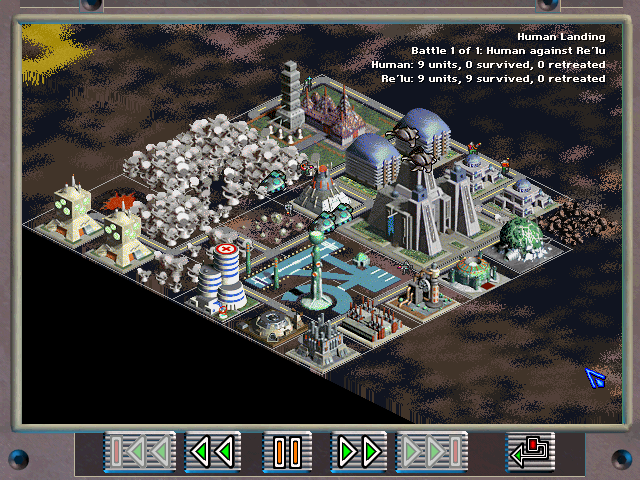
The same battle (tools/airetreat_test.py): the demo's game at the end of turn 8, the Re'lu's nine attackers on the Human Landing's nine units, each attacker given 40% of its defence in damage first, alike in both runs. Without the setting all nine attackers survive and none retreats (every retreat percentage 100); with it their percentages are 55% to 98%, two (55% and 58%) withdraw at 10 damage of 16, one more is lost, and one of the Humans' units survives.
Checked: samecode differs in SetAttackForceMission and WarriorRetreated only (3 builds; snapshot airetreattest). With the setting off the end-to-end tests give the results main gives (battle: 80 and 107 differing runs, battle_quick: g_shownStats and g_dirtyRects+0x4, saveload: dump_loaded.bin; saveload's load dialog shot sometimes differs on the minute of its save time, in both). tools/airetreat_test.py passes: without the setting every attacker's retreat percentage is 100, with it 50..99 and two attackers withdraw. Without the pre-battle damage the scripted human player's units hurt no attacker that far (tests/ui/airetreat.txt: 9 attackers, 9 survived, 0 retreated, either way).
game changeScenariosThe campaign's briefing is read on Campaign Selection, with its voice on request, and Next Scenario comes back there (
The campaign's briefing is read on Campaign Selection, with its voice on request, and Next Scenario comes back there (campaignmissions=1, modern UI)
GALI-13, the briefing part of #359. Before: a campaign mission opened on its map with the briefing page (D034: the race's picture, the text, the advisor's voice starting at once), and a victory's Next Scenario loaded the next mission straight away, its briefing again on its first turn. After, with the modern UI and campaignmissions=1 (both on by default; the classic UI and campaignmissions=0 keep the original's):
- Campaign Selection is the briefing. Under the chosen race's missions, the chosen mission's briefing -- the game's own text, the race's CHAT page for the mission --, the advisor's voice as a bar (Listen to the briefing: play and stop, its progress and length; the game's own sound, never started by itself), and its primary victory condition as Scenario Status words it, the game mode's line (Shrine Wars - 5 Shrines for 8 Turns); the mission's special goals are left out (Scenario Status, F3, lists them). For a mission won, its fewest turns. Replay Cinematic is at the foot.
- Play mission N opens the mission on its map, without the first turn's briefing page.
- Shift+F3 (or the console's new
briefing) shows the briefing during play as a sheet: the planet's globe and type, the races in the game, the text, the voice (on request), the primary victory condition; Close or Esc. The destroy-all goal's page and the credits are the original's. - After a victory, Next Scenario ends the mission as Exit Campaign does and comes back to Campaign Selection with the race and the next mission chosen, its briefing there. Restart Scenario after a defeat starts the mission again at once.
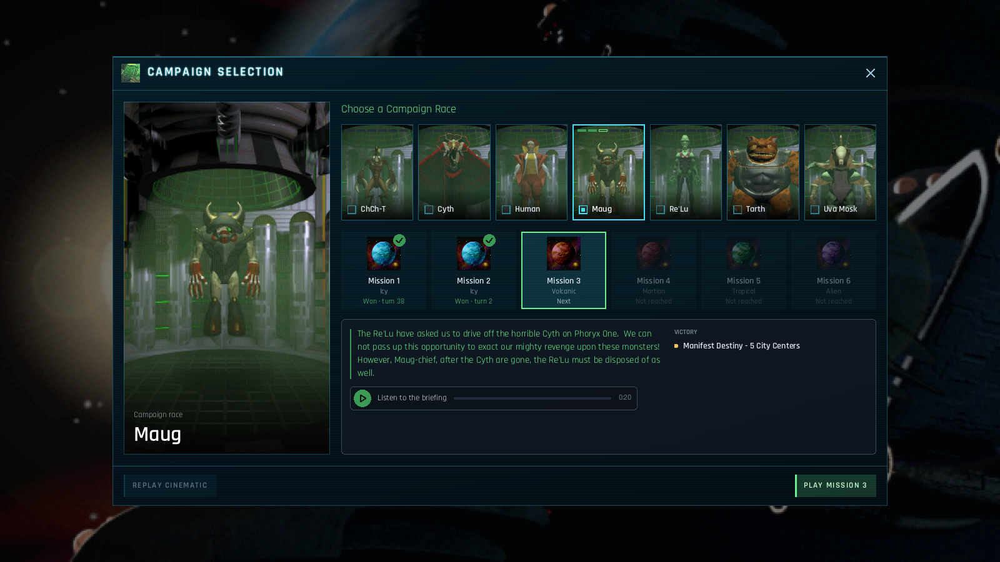

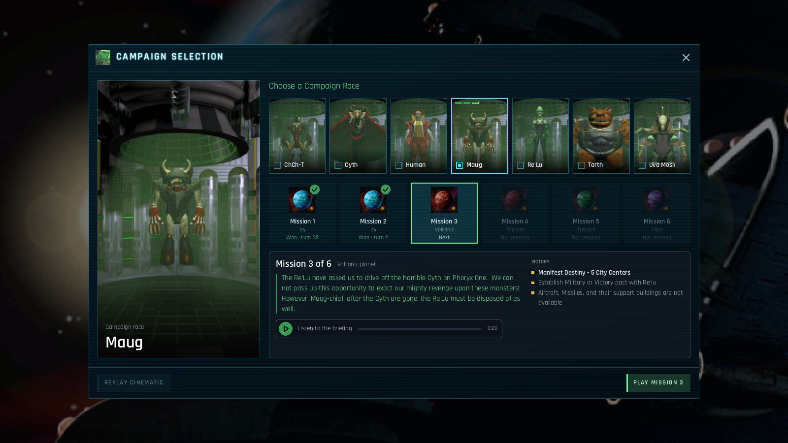
Checked on macOS: samecode against campaignmissions differs in DoLoadGameData (the first turn's page), HandleGameEndingEvent (Next Scenario), FrontEndMainMenu and RunD035Screen (back to the campaign's race), InitSegueScreen (the voice not started for the sheet) and PortConsoleCommands, plus the new Port functions, on all three builds; samedata SAME. In play (a UI script, Maug with mission 1 won): the Campaign screen at the three window sizes, the voice played and stopped, Play mission 2 opened on the map with no page, briefing showed the sheet and its voice, and a victory (the cheat prompt's SQUISH, let into a scenario by a test build only) wrote MAUG 38 2, and Next Scenario came back to Campaign Selection with Maug's mission 3 chosen.
game changeScenariosThe campaign keeps which missions were won, and the modern Campaign screen starts any of them (
The campaign keeps which missions were won, and the modern Campaign screen starts any of them (campaignmissions=1)
GALI-13; opendeadlock #248, and the record part of #359. Before: the campaign kept one bit per race, set when its sixth mission was won (it unlocks Replay Cinematic), and a campaign always started at its first mission. After, with campaignmissions=1 (on by default; =0 is the original's, nothing kept): every mission won is written at once to campaign\progress.txt, a line per race by its LEVELS record name with each mission's fewest turns to win (MAUG 38 52 0 0 0 0; the first time, a race the profile marks complete counts all six as won). The modern UI's Campaign screen (ui=modern) shows six pips on each race's card (won green, the next outlined) and, under the races, the chosen race's six missions: each one's planet by its type (read from the mission's own LEVELS record, drawn with the world settings' climate pictures), its number, type, and "Won · turn 38", "Next" or "Not reached". Any mission won, or the next, can be picked; the button says Play mission N or Replay mission N and starts it. Each mission is a whole save of its own, so starting at one is what Next Scenario does: nothing is carried over and the mission plays as the original's. The classic screen is unchanged (a campaign starts at mission 1). The modern UI's mockup is modern-ui's campaign-progress.html (modern-ui#2); its briefing text and victory goal are not drawn yet.


Checked on Linux: samecode against a snapshot of main differs in StartCampaignScreen (the level it asks WriteCampaignAutosave for) and HandleGameEndingEvent (PortCampaignWon on a victory) only, x86 and x64, plus the new Port functions; check_settings, check_docs, strings, check_layout pass. In play (the Linux build, a UI script): Maug's Play mission 3 loaded scenario 21 (Maug 3) and Replay mission 2 scenario 20, from the saves the game wrote; with campaignmissions=0 the same start loaded scenario 19 (Maug 1); PortCampaignWon called in a running game (gdb, at turn 1) wrote MAUG 38 52 1 0 0 0. Checked on macOS: check.py passes (the mac and clang builds, samedata SAME; samecode as above on all three builds, then the new snapshot campaignmissions). ui_check: 19 of 26 scripts SAME, modern (the Campaign screen) among them; the other 7 (editor, mphost, port, settlers, survey, trade, zoomswitch) fail the same way on main without this change. The end-to-end tests on port-mac: newgame, longgame, market, screens and smoke match; battle, battle_quick and saveload differ only where they do on main (#25/#26, g_shownStats, g_strMaster+0x2d0 and g_hBwcc+0x8). A victory played through the game's own ending (a UI script: Maug's Play mission 2 from the modern screen, End Turn, the cheat prompt's SQUISH -- let into a scenario by a test build only --, End Turn): the event log, Scenario Victory, MAUG 38 2 0 0 0 0 written (mission 1's 38 kept), and Next Scenario loaded mission 3.
v0.1.3
The modern main menu's footer (ui=modern) has a Discord link after High Scores, Credits and Keys: Discord's logo and its name (the logo alone only where the name would reach Quit). A click opens https://discord.gg/XdEABUBC6Z in the browser (SDL_OpenURL; platform/modern_menu.c); pointed at, the logo turns Discord's blue. The logo is drawn from its vector path by the type's rasterizer (platform/mfont.c, mfont_mark), sharp at any window size. The classic menu (the game's own) is unchanged. Checked: the Linux build, the main menu shot at the three window sizes (the name beside the logo at each) (a UI script, the shots below). Not run here: check.py's samecode and the clang compile (the change is in platform/ alone), ui_check (the main menu's UI-tree scripts; the link adds a hit, "Discord"), the click on a device.

Before: a building in hand from New Construction (StartBuildingDrop) was drawn solid over the settlement view, hiding the tiles, the buildings and the site outline (#275) under it, so the player could not see where it would go. After: it is drawn see-through, 190 of 255 of it over the screen (GALI-2): on the zoomed view (colonyzoom) by the platform, also in screenshots (platform/mapzoom.c, port_mapzoom_held_alpha); on the original's view blended into the 16-bit screen (src/unknown_458c6c.cpp, PortGhostBlit); a 256-colour screen keeps the solid picture. On by default; ghostbuilding=0 brings back the solid picture; off under the test driver unless DL2_GHOSTBUILDING is set. Checked: the sources compile (Linux, 32-bit Windows); a Farm held over the City Center and over open land, on the zoomed and the original's view, with the setting on and off, on the Linux build (a UI script, the shots below). samecode still to do on the Mac: the functions that change are DrawDragImage and PortHeldShow, with PortGhostOn and PortGhostBlit new.
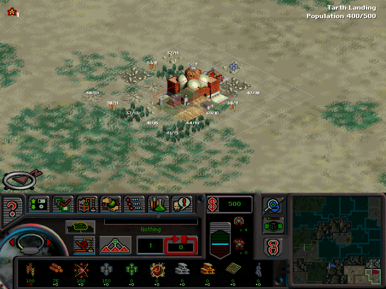

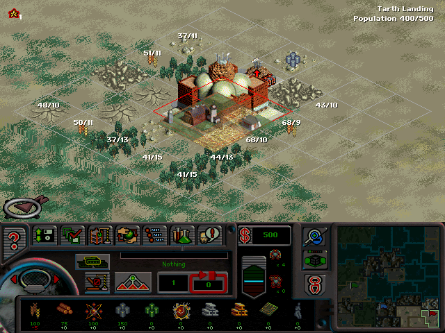
Before: the modern UI's race screen (a new game's and Quick Start's, D011) and the lobby's showed only the game's text for the race, which names some of its strengths and none of its weaknesses. After: under the text, two bulleted lists, Strengths in green and Weaknesses in red, read from the race ability table the game plays with (g_baseRaceAbilities, each race against the row's common value): production (+50% food), combat by unit group (+20% infantry attack), spies, upkeep, taxes, scandals, and the abilities only some races have (Berserk, Mind blast, Shaman dance ...). Only rows whose use the code shows are listed (platform/modern_game.c, TRAITS). With the game options' Racial Abilities at Best or No Abilities every race is alike, and the screen says so. The classic interface is unchanged. Checked: samecode SAME but for two new read-only functions in src/lobby.cpp (port_race_ability, port_race_abilities_option), and both screens shot at the three window sizes on the Linux build.
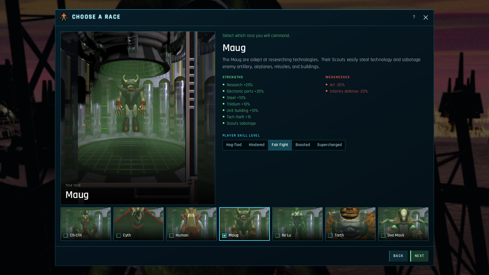

With the modern UI (modernui). Before: New Construction listed the four rows the game's own list shows, the rest reached by up and down arrows that scrolled the game's list a row at a time. After: every building the game lists, read from its data (PortBuildingListState, read-only), as many rows as the drawer's height has room for (at 1600x900 about ten), the rest by a slider (its thumb dragged, a click on its track, or the wheel); a row is chosen in the game's list wherever it is, and the chosen one is scrolled into view. The pictures are the game's own (its list's BU01 art). Checked by check.py (the game's code SAME besides the new function) and ui_check.
With the modern UI (modernui). Before: a building that builds units showed Add, Delete and Circular under its queue (the game's Circular Queue button). After: only Add and Delete, each half the width; the modern UI has no way to turn the circular queue on or off (the user's decision). The classic panel keeps it, and a queue already made circular there stays so. Checked by check.py (the game's code SAME) and ui_check (the building panel's scripts bqueue, port, bpdrag SAME; editor differs as on origin/main before this change, mphost as known).
v0.1.2
platformColony
A building in hand on the zoomed settlement view: its size there, and the colony goes on
Before: with colonyzoom (on by default) a building being placed (New Construction's Accept) was drawn at the original's size whatever the zoom -- small beside the buildings at 2x, large zoomed out -- and the whole view stood still while it was held (the original animates the settlement only with nothing dragged: its picture's saved background would be drawn over). After: the picture is drawn by the platform over the view at the camera's zoom (platform/mapzoom.c, port_mapzoom_held_*), hung from the pointer as the original hangs it, so it is as large as the buildings around it and stands to its site outline as at 1x; the game's screen holds none of it, so the workers, smoke and the rest animate on under it (BackWndTimer, PortHeldOffScreen). The drop's and the site outline's shift for a 2- and 5-wide building (50 and 200 of the original's pixels) is scaled by the zoom too (PortColonyScaled), so a wide building lands under its picture at any zoom (the "not yet" of the zoomed view). Screenshots (PrintScreen) show the picture. Only a building being placed, only on the zoomed view: colonyzoom=0 and the test driver keep the original's picture and its still view. Checked: check.py --expect (the drag's functions, the drop and the site verdict), a Farm held over the zoomed view at 1x, 2.5x and 0.5x in the classic and modern UIs, its size against the City Center's and the view changing between two shots.
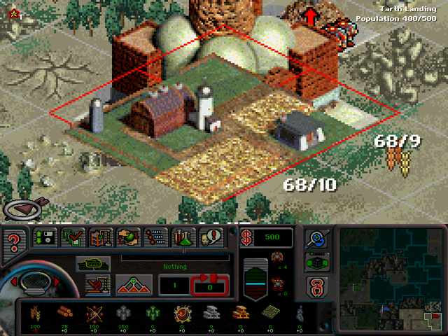
Before: with mapzoom and colonyzoom (on by default) a game's 3D world map and its first settlement opened at the original's scale, 1x, which in a modern window shows the 640x480 picture's pixels large. After: both open a + out from it (1/1.5x, or the whole world where that is less; platform/mapzoom.c, ZSTART), on the same centre; the wheel, a pinch and + and - zoom from there as before, and a settlement still opens at the zoom the last was left at. mapzoom=0, colonyzoom=0 keep the original's one scale. The tests' runs are not changed (the test driver gets the original's views). Checked: check.py (samecode SAME), and a game started and a colony opened, shot.
Before: the modern UI's text kept 12 sizes of its glyphs (each a texture); on a tablet's screen a frame drew more sizes than that, and each frame packed and uploaded glyph atlases anew -- frames were slow (on the emulator most of a frame), which is how they came to outlast the game's timers (above). After: 64 sizes are kept (platform/mfont.c). Checked: on the Android emulator the game's thread no longer makes textures each frame (its stack sampled: the frame's time is the display's swap); check.py passes (samecode SAME).
port fixMobile
A timer no longer starves the game's loops when a frame is slow: New Construction's Accept works on Android
Before: on Android, in a colony, New Construction (D902) took no click at all -- not the building chosen, not Accept, Cancel or the x -- and showed "Working..." for good; the game could only be left. The game's two timers tick every 66 ms, and the game's loops take every message there is before they go on (ProcessSystemEventsEx's do ... while (PeekMessageA)). Each peek also draws the window, and where a frame of the modern UI took longer than 66 ms (the tablet, the emulator) a timer was due again at every peek: the loop never ended, and New Construction's own loop (CheckBuildingList) never polled its menu. After: a timer is given once until the thread has had an empty answer (platform/user.c, peek), so such a loop ends after one round. Where frames are quicker than the timers (the desktop) nothing changes. Checked: on the Android emulator, a farm and a house chosen, accepted and placed by a tap (game.log: before, "click D902:6 not taken by the game"); check.py passes (samecode SAME: platform only); every end-to-end test on port-mac and every UI script (ui_check.py).
Before: with the modern UI, while a building's panel (D004) or New Construction (D902) was open beside a colony, the colony behind it stood still: no animations, and a worker moved to a task (to Upgrade) showed on it only once the panel closed -- the original stops the settlement view under these screens, which cover it. After (the user's decision): the back window's tick runs the settlement's animations on behind them, drawn on the colony's zoomed canvas alone (src/settlement_view.cpp, PortColonyBehindPanel; the game's screen, the panel's, is left as it is), and the modern UI shows that canvas behind the drawer (mapzoom_behind_part); the sprites are made again when the panel's building changes, so its workers and its upgrade marker show at once. Not while a colonist is dragged, nor with the classic picture (the panel covers the view there): the classic game is the original's. Checked: on the Android emulator, the colony's workers move behind the Housing panel, and a worker moved to Upgrade turns its marker green with its turns at once; check.py passes with --expect BackWndTimer,DrawSettlement,PortColonyCanvasEnd,PortColonyScreen,PortColonyBehindPanel; every end-to-end test on port-mac and every UI script.
Before: zooming out of a colony past its whole picture (zoomswitch) arrived at the world map at 3x and eased out to 1x, the original's view, so the zoom jumped from close to far. After (the user's decision): the world map stays at 3x on the territory, and zooming out goes on from there; the colony fading out shrinks to match (to half for the usual picture, as the world grows on the way in). Checked: check.py passes (samecode SAME: platform/mapzoom.c).
Before: on a touch screen, two fingers on the zoomed world map (or colony) pinched and dragged it at once with every move: a scroll changed the zoom too with every small change in the fingers' spread, and the map shook. After: the gesture is first a scroll or a pinch, by what the fingers do first (the middle moving 10 game pixels: a scroll; the spread changing 13% first: a pinch, which drags too); a scroll zooms only if the spread then changes by 35% (platform/touch.c, pinch_move). Checked: check.py passes (samecode SAME: platform only).
Before: a click on the modern UI whose work took over a third of a second showed a "Working..." note low in the window. After (the user's decision): no note; the control clicked is still drawn held down with its bar running. Hosting a network game keeps its own note. Checked: check.py passes (strings: the key BUSY_WORKING gone).
v0.1.1
Before: the relay's page (/games, and the Games page beside it) gave a game waiting for players only its build's date (v2026-11-16), and a game under way no version at all. After: a host sends the relay its release too, git describe (v0.1.0, or v0.1.0-14-gbe918e19 between releases), after the name in its HOST frame (galius-iv/relay's PROTOCOL.md); the page names it for both. A relay older than the field ignores it; a game older than it gives none, and the page shows its date as before. Nothing in the game changes. Checked: check.py passes (samecode SAME: platform/net.c); nettest's relay scenes against the relay run here, the listed game's release on its page.
Before: a flood -- the random Flood event ("The ... settlement is covered in flood waters") or a Sea Platform's tidal waves -- is a line of the event log; the map shows nothing. After: with the HD terrain, the flooded territory's low land near the sea lies under muddy water for the turn the event log tells of it, the deeper the nearer the sea and the lower; hills stay dry, and the flood fades out at the territory's edge. With waves on (the default) the flood's edge surges in and out every 7 seconds and the sea's waves run on over it; with waves=0 it is still. Only the local player's own floods, as their event log names them (the territory found by its name, as the log's double click finds it), so the map tells nothing the player was not told. The console's flood TERRITORY marks one flooded on the map alone, for trying the picture.
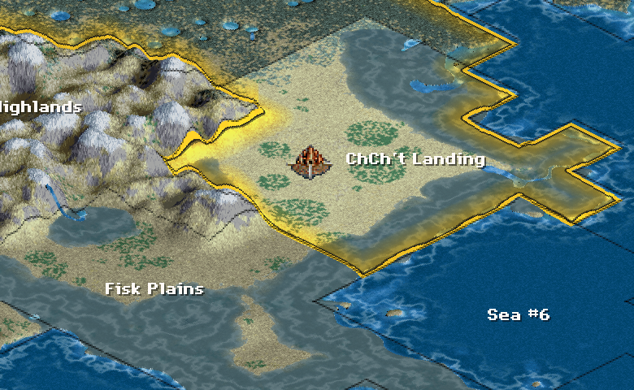
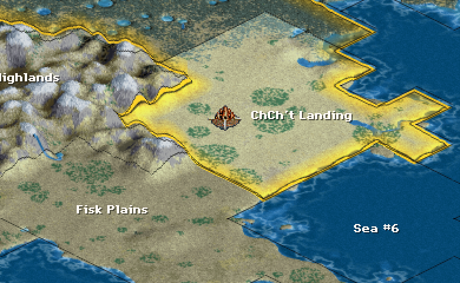
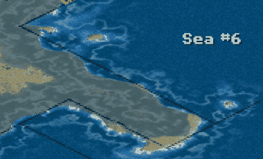
How: src/combat_fx.cpp's TerrainBegin (port code) reads the event log's flood events and hands each cell's flag to platform/terrain.c (port_terrain_floods), which bakes the world again when they change (~60 ms on this map); the light now also measures each land point's distance to the sea. Checked on Linux x86_64 with the console's marks (above); a Flood event struck in play is not yet seen. The game's own code is untouched (TerrainBegin is the port's).
Before: when Android ended the app's activity while it ran (an app in the background reclaimed, a change the manifest does not take), SDL sent the game a quit: with a game on, the game opened its "quit?" question, which no one could see or answer, while SDL waited a second and went on without it; the program stayed, and its next start was ended at once by SDL, so the app had to be opened twice. After: on Android that quit ends the program, as the system stopping it does; the last autosave stands (game.log: "the system ended the activity"). The desktop's close is as before. Checked by check.py's builds and samecode (the game's code SAME); compiled with __ANDROID__ defined, not yet tried on a device or the emulator.
With touch (touch=1, always on Android) and mapzoom. Before: SDL turns a pinch on Android's touch screen into a pinch event of its own (as a trackpad's) besides the fingers, and the port zoomed the 3D map on both: the fingers' about the point between them (touch.c), SDL's about wherever SDL last had the mouse -- when that was over the zoomed map, a pinch zoomed twice and toward another point. After: on Android SDL's pinch is left alone, the fingers' alone zoom; on the desktop, a trackpad's pinch zooms as before, but not while fingers are down on a touch screen. Checked by check.py's builds and samecode (the game's code SAME); compiled with __ANDROID__ defined, not yet tried on a device or the emulator.
port fixMobile
Fingers: after a pinch the finger left down drags the map; a scroll follows the fingers
With touch (touch=1, always on Android). Before: when one finger of a pinch on the zoomed 3D map (mapzoom) was lifted, the other no longer dragged the map: it sent the wheel's steps to the game, which scroll the classic map in jumps; a finger put down again did nothing until both were lifted. And two fingers scrolling counted their move as if the whole window were 640 pixels wide, so where the picture has bars beside it the scroll did not follow them (on a 20:9 phone it went at 60% of the fingers). After: the finger left drags the zoomed map on, a finger put down again pinches with it, and the scroll counts the fingers' move at the picture's own scale (as before on a 4:3 screen). Checked by check.py's builds and samecode (the game's code SAME); not yet tried on a device or the emulator.
port fixMobile
Android: the on-screen keyboard comes back with a tap on the box, and leaves it in view
Before: once the on-screen keyboard was hidden (Back) while a text box still had the keys, a tap on the box did not bring it back -- only moving the keys to another box, or three fingers, did; and Android was not told where the box was, so a box in the lower half of the screen (the chat, a field low on a modern screen) could be under the keyboard, typed into unseen. After: a tap on the box that has the keys brings the keyboard back (a quarter of a second after, so a tap that moves the keys elsewhere does not); the keyboard is told where the box is -- a modern field's target, or the game's box where the classic picture shows it -- and Android moves the picture so that it stays above the keyboard. Checked by check.py's builds and samecode (the game's code SAME); compiled with __ANDROID__ defined, not yet tried on a device or the emulator.
Before: when a player switched to another app (a notification, a call), SDL held the game's thread until the game came back to the front, so a network game stood still for every other player -- although the pause for the background (pauseinactive's) leaves a network game running, as the others' timers need. After: SDL no longer holds it (SDL_HINT_ANDROID_BLOCK_ON_PAUSE off); a game alone waits in the background as before (the port holds it, the clock and the sound paused), while a network game (from Multiplayer's connection screen on) runs on, nothing drawn and its sound paused till the app is back (game.log: "in the background: a network game runs on"). Checked by check.py's builds and samecode (the game's code SAME); the Android lines compiled with __ANDROID__ defined, not yet tried on a device or the emulator.
With touch (touch=1, always on Android) and the modern UI (ui=modern, the default). Before: the modern UI's screens took a finger as a tap and nothing more. Its lists scroll only by the mouse wheel (and Page Up/Down), so without a mouse the rows below the first screen -- in Settings, the keys page, the lobby, the saves -- could not be reached; its targets' right click (a technology's details, mp_right) needed a mouse's right button; a second finger was the same pointer, so trying to scroll a list clicked what the second finger left; and an item dragged across a panel did not follow the finger. After: two fingers on a modern screen scroll it as the wheel does (a step each 60 pixels they move together), the press under the first finger dropped; a finger held still half a second on a modern panel's target is its right click; a third finger is let be; a dragged item follows the finger. The main view's panels have no wheel, as before. The mouse is untouched. Checked by check.py's builds and samecode (the game's code SAME); not yet tried on a device or the emulator.
With touch (touch=1, always on Android) and the modern UI. Before: every finger was the modern UI's one pointer, so lifting any finger let go the game's press: after a pinch of the map, the finger left down and lifted over a panel was the panel's, touch.c never saw it leave and counted it down for ever -- from then on every tap on the map was a second finger, and nothing on the map could be tapped, dragged or held until the program was started again (the modern UI's own buttons still worked). A finger whose going down the modern UI took and whose lifting it passed on miscounted the other way, losing the next tap. After: each finger is one side's from going down to leaving -- the game's when it went down on the map (or while another such finger was down), else the modern UI's, whose pointer is the first such finger only; and both sides let go a finger SDL no longer has down once no finger's event is queued (platform.log: "touch: a finger's lifting was not seen"). Checked by check.py's builds and samecode (the game's code SAME); not yet tried on a device or the emulator.
Before: on Android a click of a mouse (a tablet's, a Chromebook's) or a tap of a pen (a Galaxy tablet's S Pen) did not click: SDL makes a finger of every mouse click there (SDL_HINT_MOUSE_TOUCH_EVENTS, on by default on Android alone) and a mouse of every pen's tap, and touch.c made a finger of the mouse besides -- two fingers down, which is a scroll. The mouse's right button and its hover did nothing either. After: SDL makes neither; a pen is a finger, and a mouse on Android is the game's mouse, its pointer hovering and its right button the right button. On the desktop touch=1 plays as before (the mouse's left button a finger). Checked by check.py's builds and samecode (the game's code SAME); the Android lines compiled with __ANDROID__ defined, not yet tried on a device or the emulator.
#166. Before: a player whose machine went to sleep, lost its network or sat behind a NAT that forgot the connection sent nothing and closed nothing, and the port noticed a lost player only by a closed connection or a send stalled for 15 s; while a turn waits there may be nothing to send, so the host waited at End Turn for ever, with no "Opponent Surrenders" and no way on but quitting. The original's DirectPlay sessions had a keepalive for this. After: every connection a game is played over carries a small PING as soon as it is up and whenever it sent nothing else for 5 s, from a thread of its own, so a game busy with a computer player's turn still sends; a player (or, on a joiner, the host) that sent nothing for 30 s is gone, as one who left. net_timeout=N sets the seconds (5 to 3600), 0 turns it off. A build without the keepalive never pings and is never timed out, so mixed builds play as before.
Checked: samecode SAME (platform only). tools/nettest.py (which now builds on Linux too) has two new scenes with net_timeout 8: a player whose connection is stalled both ways, nothing closed, is gone on the host, on the other player and the host on it after 7.9 s, and the others play on; three players who send nothing for 20 s all stay. Against the previous net.c the first fails (nobody gone after 18 s). An old joiner with a new host stays and plays after 20 quiet seconds. The whole nettest passes (the relay's scenes skipped: no relay checkout here), and two Linux games joined by lobby_net.py play to turn 2 in step. All on Linux; not run on macOS or Windows.
#441. Before: a Sea Transport on a sea territory could be given Mine Territory with armies aboard; laying the mines uses the transport up, and its cargo went with it: up to three armies deleted at the end of the turn, with no event. The computer players' mine task forces did the same. After: a loaded transport cannot take the mission (it is not offered), and one loaded after taking it lays no mines until it is empty again; an empty transport lays mines and is used up as before. Checked: samecode differs in CanLayMines only (Linux's x86 and x64 builds).
Before: the HD terrain's seas, lakes and rivers are a still picture. After: waves come in to the shores of the seas and lakes, from about half a territory out, and wash up on the beach; the rivers' ripples run downstream, toward the sea or the lake each river reaches (one that reaches neither, toward its lowest point). The crests are a lighter shade of the water's own colour, so a brown or yellow sea keeps its colour; the icy planet's water is frozen and stays still. Also on the zoomed map (mapzoom). Not with the classic terrain, on the top-down map or on a 256-colour screen. Settings > Display > Moving water turns it off (waves=0); under the test driver the terrain is classic, so there is none.

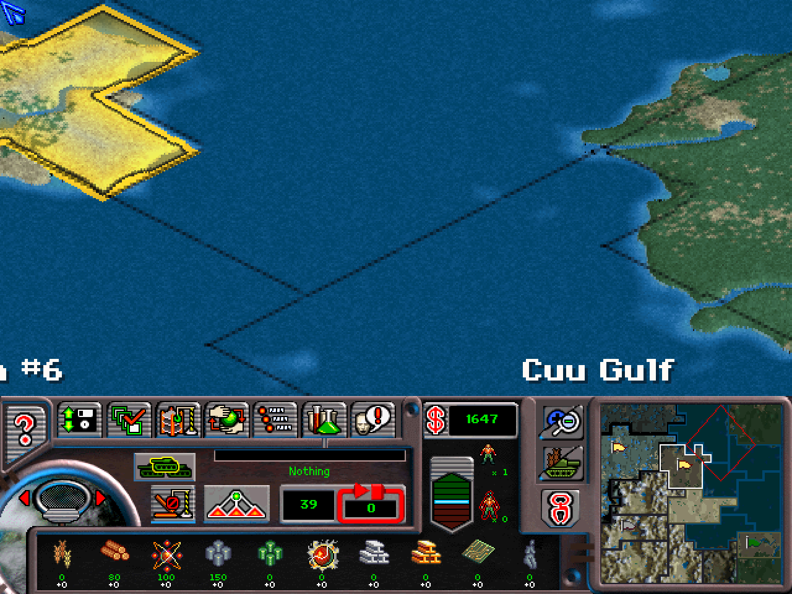
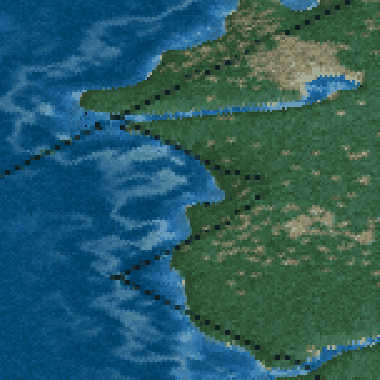
How: with the light, platform/terrain.c measures each sea and lake point's distance to the nearest land, and each river point's distance along its river to where it ends (water_paths); the bake notes with each pixel of water, and of the shore's wash, how strong its motion is and its place in the wave (wave_code). When the screen is shown the place moves with the time and the water is lit by the wave's shape there. The screen is drawn again 15 times a second while moving water shows; a frame of the waves alone redraws only the pixels with moving water over the last picture, so it costs about a sixth of a core here (Linux x86_64, the turn-39 coast; ~half a core redrawing the whole picture). autoshot takes a fraction of a second now (0.1), which made the frames above. Checked on Linux x86_64: the frames differ only on the water and the shore, the waves move in to the shore and down the rivers, waves=0 gives the still picture again; check_layout, check_settings, check_docs, strings --check, the Windows builds. Not checked: samecode and the clang compile (their snapshot and compiler are on the Mac), the end-to-end tests and ui_check.py (macOS).
With touch (touch=1, always on Android) and the modern UI (ui=modern, the default), a finger on the main view's map went to the game at the place the classic 640x480 picture would have under it, not the map the modern UI draws there: taps selected or ordered the wrong unit or territory, more so the farther from the corner, and a pinch of the zoomed map zoomed about another point. The mouse was right (it asks modern_map_point); the fingers (video_map_touch, video_map_touchf) now ask it too. On the other modern screens with pieces of the game's screen, a finger's drag that left the piece lost its finger (its moves and lifting were the modern screen's, and touch.c thought it still down): it is now held as the mouse's drag is. Classic screens and the mouse are untouched. Checked by check.py (samecode SAME), the UI scripts (editor and mphost differ, as they did before this change) and the end-to-end tests (only the known differences); no test plays fingers.
Before: on GNOME on Wayland the game's window had no icon in the dock, the top bar and the window switcher (a generic one): GNOME does not take a window's icon from the window (SDL_SetWindowIcon, #194), only from the desktop entry its app id names, and the game had neither. After: the window's app id is org.opendeadlock, and each start writes ~/.local/share/applications/org.opendeadlock.desktop (starting this program in its folder) and its icon, icons/hicolor/256x256/apps/org.opendeadlock.png there, when they differ (not a run in the background, the tests'). Checked on Linux x86_64 with SDL's dummy video driver and XDG_DATA_HOME in a scratch folder: both files written, the icon the window's own PNG, the entry valid by desktop-file-validate; check.py.
Before: uitheme unset gave the modern UI (ui=modern) the steel look, the mockups' own. After: unset, it is tactical, their draft B (square cyan glass with scanlines and glowing keys); uitheme=steel gives the steel look again. The classic screens (the default ui) are unchanged. Checked by check.py (samecode: only the modern UI's theme and settings code differ).
v0.1.0
port fixMultiplayer
The modern Multiplayer screen is on TCP/IP without a relay, however it is reached
#167, a bug of 51cf5ed3 (Online). Before: with net_relay=off, the modern UI's Multiplayer screen came to Online only from the main menu's Multiplayer, which then chose TCP/IP; reached another way (--join ADDRESS, --host NAME) it stayed on Online, which said it needs a relay, and the games list asked nobody: --join 127.0.0.1 never found the host. After: without a relay the screen is on TCP/IP whichever way it comes. Checked by lobby_net.py (the modern lobby, two games): it failed at the guest's games list, and passes now.
#445. Before: the game trusted every message from every player, as it did on the 1998 LAN. Anyone in a game -- with the relay's public games and codes, a stranger -- could crash the others' games or write into their memory (a materials sale's resource number wrote past an array on the stack; the black market, labour slots, building types and sites, research, race and home picks, tax rates did the same into the game's tables), act for any other player (move or disband their units, take their goods, surrender them, end everyone's turn), and send the host's own messages (the game's settings, a reseed, the save) to the host and to every other player. After, in three layers: a message of any length but the game's 0x5c bytes is dropped (NetReceiveCapsule); a message is taken only from who may send it -- a joiner takes everything from the host and only player names from anyone else, the host takes the host-only messages from nobody and anything else for the seat registered to its sender or a computer's (a joiner's game sends some of the computer players'), never for another human's (NetCapsuleFromSender, the first 20 dropped noted in DEBUG.TXT); and the handlers check their numbers -- resources, territories, technologies, unit kinds, building types and sites, labour slots, tax levels, races, skills, chat kinds, AI events, pact flags -- and drop a message whose numbers the game has no table entry for. A joiner also checks the host's: its player number and count (NetSlaveInfo), a game state's size (NM_START_STATE, at most 4 MB), and the modern lobby's seats. A game played with legitimate players is the same: the messages they send pass every check. Not covered: a hostile host's save or game state, beyond its size. Checked by check.py (--expect the handlers); two games on this machine, nothing dropped, both in step to the last turn: netdrive.py (classic, over the LAN), lobby_net.py (the modern lobby, with a computer player) and the new tools/relay_net.py (classic, through the public relay, joined by its code: a game played on the relay's page).
Before: an advisor's or another player's video message (the race's talking head after the landing, and on in the game) stood in a card as large as the game's own frame for it, scaled with the map, which the main view zooms to fill the window: at 1600x900 a 640-pixel film, most of the window's height, over the satellite view. After: the film is 300 points square at the interface's scale (smaller in a small window), at the top right under the resource bar, the satellite view and End turn free beside it. The map behind is the one kept from before the message, or, for a message before any was kept (right after the landing), the zoomed map alone: the game's frame and its shade are in the screen's map, and the smaller card would not cover them. With mapzoom off and no map kept, the card covers the frame as before. The modern UI only. Checked by check.py (samecode SAME) and ui_check.py (every script SAME but mphost, which fails without this change too); shots of the advisor script's message at 1600x900, 1024x768, 2560x1440 and 810x1080, and with no map kept.
Before: a modern screen's click that goes through several of the game's own screens (Multiplayer's Host a game: seven of them, then the network opened) left the screen as it was, nothing pressed, until the next one came -- seconds, online, which looked like a frozen game or a lost click. After: the control clicked stays held down with a bar running along it while its steps go on, and after a third of a second a "Working..." note shows low in the window; hosting shows "Opening the game on the network..." at once, before the game's thread opens it (through the relay that thread waits without drawing, so the window keeps that picture until it is done). The modern UI only; the classic screens are untouched. Checked by check.py (samecode SAME); not yet by ui_check.py (a game was running in the run folder).
Before: GOG's installer of Deadlock 2 was used only when named as gamedir= or picked in the first start's dialogs; on Linux, which has no dialog, an installer lying in OpenDeadlock's folder was not looked at and the program ended with "Deadlock 2 was not found". After: when no game is found by the other ways (the current folder, DL2_GAMEDIR, the program's folder, gamedir=), a setup_deadlock*.exe in the current folder or the program's own is unpacked into the program's data/ as if gamedir= named it, with no dialog and no setting. Not on Android. Checked on macOS with GOG's v1.20 installer, the program started from another folder with the installer beside it, and started from the installer's folder (both unpacked, 22 files, and reached the game); compiled on Linux (GCC 15). check.py: samecode SAME (platform code only).
Before: selecting a text box on Android (a save's name, the chat, a field of the modern UI, the console) showed no keyboard; only a three-finger tap brought one up. After: the system's keyboard comes up when a text box takes the keys and goes when none does; Back hides it until the focus moves on, and three fingers still show or hide it. Where the system has no on-screen keyboard (the desktop, touch=1 too) nothing changes. Checked by check.py (samecode SAME: platform code only); not yet on a device or the emulator.
Before: on Android, opening a colony (here by tapping its territory on the world map, in a network game against a Mac) could end the game at once: SIGSEGV in DrawOccludedVLine16, from DrawSettlementBackground. The original's routine draws an even-length column of ground three rows longer than asked, ending two rows below the column's limit, which is the back buffer's height; the original's buffer had rows to spare below its 320-row view, but colonyzoom's (1280 x 960, src/settlement_view.cpp) was exactly as tall as the picture, so a colony whose ground reaches its bottom edge wrote two rows past the buffer's end. Android's allocator puts a guard page after a large block, so the game ended there; macOS wrote into whatever followed. After: the back buffer has four rows more than the picture (AllocBackBuf), and the game is the same otherwise. Checked: check.py (samecode: only AllocBackBuf differs); the crash's registers (the column's top 959, the drawing's rows at 965 and 966) against the buffer's 960 rows; tests/ui/colonyzoom played through on port-mac (its colony's ground ends at row 950, so it never reached the overrun).
Before: the zoomed 3D world map (mapzoom) stops at 3x and the zoomed settlement view (colonyzoom) at its whole picture; going from one to the other takes the numpad's + and -, the Settlement button or a right click. After: the two are one zoom. Zooming the world map in past 3x -- two more wheel steps once it is there, or a pinch or + as far -- goes into the settlement of the territory under the pointer (it becomes the selected territory, as by a click), if you see it well enough to open it (else nothing happens, and no advisor's box); zooming a settlement out past its whole picture goes back to the world map. The way through is drawn: going in, the world map grows on and fades out, its territory sliding to the centre, over the colony at its whole picture, zoomed out, from where the zoom goes on into it (until 2026-11-18 the colony eased in to the original's view, which looked zoomed far in); going out, the colony picture shrinks away while the world map zooms out from 3x to 1x on the territory. About half a second. Not while a box or a modal screen is up; not under the test driver (mapzoom and colonyzoom are off there). zoomswitch=0 keeps each view stopping at its limit. Checked by tests/ui/zoomswitch.txt (the demo's save: the world map zoomed in past 3x into Yuck Bog, the settlement zoomed out past its whole picture back to the map) and check.py (MainWndCommand, PortMapZoomTick and PortColonyZoomTick differ, PortZoomSwitch is new).
Halfway through, slowed down: in (the world map fading over Yuck Bog's settlement) and out (the settlement shrinking into the world map):
Before: Host a game in Multiplayer came to the network lobby's setup, whose own Host then opened the game on the network: two Hosts. After: the lobby opens the game on the network as it comes (its Host clicked for the player), with the rules at the game options' defaults and Random Events on; the map (size, climate, seed) stays the host's to change while it waits for the players, and is what the game takes at Start. --host still stops at the setup, and the classic UI is as before. Checked: check.py; the UI scripts.
#167. Before: the modern UI's Multiplayer had TCP/IP, which with the relay (by default the public one) mixed the LAN's games with the relay's public ones, registered every game hosted at the relay, and took a game's code only in the address field (F2's), to be joined afterwards by its own Join; and a code typed there was remembered as the host's address, asked of the relay again at every later Join a Game. After: Online is the first connection, beside TCP/IP, IPX, Hotseat and Serial: the relay's public games only, each with its Join; a CODE field whose Join (or Enter) asks the relay and joins the game once it is listed ("Looking for K7M2QX at the relay...", and if none came within 15 s, that no game has the code); and Host a game hosted at the relay too (the code in the game's box), in its public list when "List publicly" beside it is ticked (net_public). TCP/IP is the original's again: the LAN and an address, the relay left alone, no code. Online is chosen first when there is a relay (net_relay not off), else TCP/IP. The classic UI is as before. A code typed at F2 is no longer kept as the address.
Checked: samecode SAME (the platform's code only); check.py passes. UI scripts against the public relay, with games hosted there by nettest: Online listing the public one and not the private one; the private one's code typed, the game listed and joined at once (refused there by the version check, nettest being another version); TCP/IP then listing neither; Online's Host with List publicly ticked, the game on the relay's page with its code; TCP/IP's Host at the LAN only, the relay not asked. All eight tests on port-mac and all UI scripts.
#167. Before: a game's code worked only with net_relay set by every player, and a game listed publicly (net_public) was on the relay's page but not in the game. After: net_relay is the public relay, opendeadlock-relay.fly.dev, unless set otherwise, so hosting gives a code and F2 takes one with no setup; and the Join a Game list shows the relay's public games beside those found on the LAN, joined from it through the relay. Asked for every 5 s while the list is shown, on a connection of its own, never waited for: a relay that cannot be had leaves the list as it was, quietly, and is tried again every 30 s. net_relay=off (or "Relay" in the modern UI's settings, Network) is the original's: LAN and addresses only, no server connected to. Hosting with the relay on also shows the box with the code, as net_relay did.
Checked: samecode differs in AskForHostAddress only (whether a relay is set, now through port_net_relay); check.py passes. nettest: a public game joined from the Join a Game list through the relay, a private one not there to join, against the relay run here and the public one; the other scenes play with net_relay=off, as the UI scripts and lobby_net.py do.
#167. Before: a game hosted through the relay (net_relay) was joined by its code only, which the host had to pass on. After, with net_public=1 too (or "List my games publicly" in the modern UI's settings, Network): the game is listed at the relay, whose page (https://opendeadlock-relay.fly.dev/games, for a landing page) names it with its code while it waits for players, and with its player count while it is played; the box with the code adds "The game is also in the relay's public list: anyone can see its name and code, and join." Off unless set: anyone with the code could join it. Without it the page counts the game, never names it.
Checked: samecode SAME (the change is the platform's: platform/net.c, the settings); check.py passes; nettest's relay scenes, against the relay run here and against the public one: a game hosted with net_public=1 is on the relay's page with its code, one without it is counted and not named.
Before: started without the game, OpenDeadlock asked for the folder Deadlock 2 is installed in; GOG sells the game as a Windows installer, which on a Mac or under Linux had to be unpacked first with innoextract. After: the first start's question has a third button, Choose installer, whose file dialog takes setup_deadlock_ii_shrine_wars_*.exe; a folder picked that holds it (the Downloads folder) is taken too, and gamedir= may name it. Nothing is installed: the game's data files are read out of it into OpenDeadlock's data/ (about 4 s, the copy's window, its Cancel), each part checked against the installer's SHA-1; where the program's folder cannot be written, into the user's settings folder. Cancel in a dialog now asks again rather than quitting. The first start's own log lines now land in the game's folder's platform.log, not in the folder the program was started in. Checked: the 22 files unpacked from GOG's 1.20 hotfix installer (40447, Inno Setup 5.6.2) are byte for byte the game's, all 41 of its game-folder files innoextract's; a fresh folder with only the program and gamedir= naming the installer unpacked it and reached the main menu, and the next start used data/; a damaged installer is refused with the file named. Other installers (Inno Setup 5.0.0 to 6.4.0.1) read by the same code but untried; LZMA2 chunks and setup-1.bin parts, which this one has none of, are untested.
Before: the game drew its own cursor into its screen and the window hid the system's pointer while the game wanted its own; with ui=modern, the pointer the modern UI shows was the system's over its panels and the game's over the map, handed over as the pointer crossed -- and at times it was neither, the pointer gone (mostly over the modern UI). After: with syscursor (on by default with the modern UI, off with the classic one; 1/0 to choose) the system's pointer is always shown, and it is the game's own cursor: its shape and animation frame, drawn by the game into a work image as it draws it on its screen (PortSysCursorUpdate, src/cursor.cpp) and made the system's pointer at the size the game's picture is shown (win_cursor_tick, platform/user.c); the game draws no cursor into its screen meanwhile (CursorRedrawScreen, GLCursorDraw, CursorDrawInto return). The test driver never has it (its shots hold the game's cursor). samecode: those three, CursorUpdate, PortSysCursorUpdate; snapshot syscursor. Checked by the cursor's pictures written out in a UI script's run (the arrow, the busy cursor's frames), ui_check.py (all the same but mphost) and the end-to-end tests.
portInterface
The modern UI's last clicks the game's own way; the building panel reads the game's data
Before: with ui=modern, a technology off the game's screen was clicked by pushing the game's pointer to the screen's edge until its tree scrolled there; the play settings' volumes were clicks along the game's slider; the landing site's map and an advisor's video were mouse clicks at a point; and the building panel's cards were read from the texts the game drew on its lines, held 150 ms while a choice redrew them one at a time. After: a technology is clicked (or right-clicked) wherever it is, the request needing no point of it; a volume is the slider's position set as the game's own code sets it (SetSMenuScrollbarInfo), the screen reading it on the click; the landing map's point is given to the game's own pass (CheckLanding: GetSatelliteTile, SelectTerritory) and the video's close to its (RunVideoMessageScreenPass), as a press there; the building panel's cards come from the game's data (PortBuildingPanelState, src/in_build_1.cpp, read-only: what SetLaborLineText writes, from the same data), so no hold and no counts of the moment. Left to the mouse: the main view's map and the pieces of the game's screen shown as they are, where the pointer is the player's own over the game's picture -- not a click played. samecode: PortMenuRequest, CheckLanding, RunVideoMessageScreenPass, PortBuildingPanelState (new); snapshot screenreq. Checked by ui_check.py (research: the details of a technology off the game's screen; ingame: the sound's volume put at 50; modern: the landing map clicked, that territory marked; all the same but mphost) and the end-to-end tests (only the known differences).
portInterface
The modern UI's scroll bars, text, right and double clicks the game's own way too; "Working..." no longer stays
Before (the click requests of the entry below): a scroll bar's arrow, text put into a field, a right click (a technology's details), a double click on a list's row (an event's territory), a click on a menu beside the top one (Research's buttons) and a button with a handler of its own (the treasury) were still the mouse or the keys played by the port -- text as a click on the field, End, a Backspace a character and the text typed. And with a chain whose last step was such a request, "Working..." stayed on the screen for good (the note was put away only on a step's end, and the request ended after the last one). After: a scroll bar's arrow is the step its press sends (SendSMenuScrollbarHitMessage); text is put in as the port's paste puts it (PortEditBoxSetText, src/editbox.cpp: the field marked, its text selected and replaced through its own key handler, so its filter decides as for typing); a right click records the right button (CheckTechTree reads it); a double click sends the list the press of a double click and its release, as the mouse does; menus beside the top one and buttons with handlers take requests (no button's handler takes the mouse's messages); the note goes when the chain and its request are both done. Nothing in the UI scripts goes by the mouse or the keys any more. samecode: PollSMenu, PortMenuRequest, PortEditBoxSetText; snapshot menureq2. Checked by ui_check.py (editor, handover, hud, research re-recorded: focus, the main view's figures drawn sooner) and the end-to-end tests (only the known differences).
Before: with ui=modern, every click the modern UI made on the game's screens (its chains: a button, a check box, a radio button, a list's row) was the mouse played by the port -- the pointer moved there, the button down and up with time between for the game's pass to see each (~0.33 s a click, one after another), the pointer taken meanwhile. After: such a click goes to the menu engine's own path for a click without the mouse, a button's key: PollSMenu takes the request at its menu's next pass (PortMenuRequest, src/menu.cpp) and makes the item the menu's key item, as MenuFindItemByKey does for a key -- pressed, released, its sounds, checked or chosen (ClickOnSMenuItem) and its id answered to the screen's own code; a list's row is selected and shown as ListBoxOnKey selects one, then the click's release answers the list (the lists' handlers take the mouse's messages for a double click only). Every screen at once; nothing of the game's code changed but the one call. Still by the mouse: double and right clicks, points (maps, scroll bars), a menu beside the top one, and a button with a handler of its own; the building panel's button path (PortPanelRequest) folded into this one. A key's click leaves the focus where it was (the UI trees' focus flags) and the pointer off the button (no tooltip there). samecode: PollSMenu, PortMenuRequest; CheckBuilding back to its worker-move call (PortLaborRequest); snapshot menureq. Checked by ui_check.py (every script: the trees re-recorded for focus, and the main view's resource figures drawn by the time of a shot, a click being sooner; the technology screen, which reads the button that clicked, given the left one's) and the end-to-end tests (the classic screens, which never ask: as before).
Before: with ui=modern, each of a building panel's buttons -- a task chosen, a task locked, on or off, Select Port, the Circular Queue, Add, Delete, Done (and Esc), Help -- was a click on the game's own button played by the port (~0.33 s each, the pointer taken meanwhile, one at a time). After: the panel asks the game for the item as if it was clicked: at the panel's next input pass (CheckBuilding, on the game's thread) PortPanelRequest sets its check as the menu engine's click does (a lock toggled, a task's radio chosen, through IM_CHECK as the panel's own setup sets them) and answers its id in place of the menu's pass, so the game's own case for it runs; worker moves are the same queue's other kind. A click on the game's button gave it the keyboard focus, which a request does not (the UI trees' focus flags). The queue's row picked and the Add to the Queue list's choices are still clicks. samecode: CheckBuilding, PortPanelRequest (was PortLaborRequest); snapshot panelreq. Checked by ui_check.py (bqueue, hud, port re-recorded: focus, and the main view's resource figures drawn by the time of port's last shot, Close being sooner; all others the same but mphost) and the end-to-end tests.
portInterface
The modern building panel moves workers through the game itself; the colony's pool back
Before: with ui=modern, a worker moved between a building's tasks was the game's own drag played by the port (the task chosen, the game's pool's colonist dragged onto the other line), ~0.85 s with the pointer taken meanwhile; the colony's pool was not shown, so no colonist could be put on a task. After: the move is made by the game's own code, without its drag (PortMoveLabor, src/in_build_3.cpp: DropDraggedColonists' checks, moves and what it does after -- production, the unit list, the network's SendBuildingTasks and SendBuildingFlags, the redraw -- in its order), run on the game's thread at the panel's input pass (CheckBuilding, woken by a mouse move); the colony's pool is back as its own card, "Idle colonists" under "Colony pool": colonists go from it to a task and back. What the game refuses (a locked task, a full building, a full housing) the panel says in its words instead of Oolan's advice over the map. The classic panel is unchanged: its drag still runs DropDraggedColonists. samecode: CheckBuilding (the call), PortMoveLabor and PortLaborRequest new; snapshot labormove. Checked by tests/ui/bpdrag.txt (the game's counts at each step: two from the pool to Trade, one to Culture, one back to the pool; nothing from an empty task; a locked task refused), ui_check.py (all 25 the same but mphost, upstream's Host-a-game change) and the end-to-end tests (as before: battle, battle_quick and saveload's known differences, and saveload's load dialog, the newest autosave of #246, which reaches no building panel).
portInterface
The modern building panel's drag answers at once; the colony's pool hidden; no classic moment after a panel
Before: with ui=modern, a worker let go on another task's card showed there only after the game's own drag had played through (~0.85 s, longer in a busy settlement), and a click on a card lit it only then; a card with no workers, or a locked one, could still be dragged from; let go on a locked task, the game's Oolan's advice came up over the map with the classic panel in it; the colony's pool ("Colony pool", the game's Select Housing line) was the first card; and back from the panel (or the army orders, a message box) the map could show the classic panel the game had drawn there until the game drew the map again. After: the worker is shown on its new task at once and the game's counts take over when they come (at most 4 s); a card clicked is lit at once; only a task with workers that is not locked can be dragged from; a locked target is refused in the panel, a red line under the tasks; the colony's pool is not shown (to be done otherwise later); and the main view keeps the map from before the panel while the game's picture is still the one the panel left (at most 2 s). Checked by tests/ui/bpdrag.txt (two colonists put on Trade by the game's own pool, one dragged to Culture: shown at once; a drag from the empty Build Units; Culture locked: refused) and ui_check.py: all 25 the same but mphost (upstream's Host-a-game change).
Before: with ui=modern, a building panel's tasks showed counts only, and colonists were moved by choosing a task and dragging out of the game's own pool shown below ("Colonists of the selected task"); in a house the colony's pool and the house's own task were both "House Populace"; a task's counts showed other figures for a moment after a choice; Add (and a click on a unit in the queue) opened the game's classic unit list. After: each task's card shows its workers as so many of the race's worker (PortWorkerPicture, src/in_build_4.cpp, read-only), the colony's pool first, named "Colony pool"; a card pressed and let go on another moves a worker there as the game's own drag does (the task chosen, its pool's first colonist dragged onto the other line; Alt all of them), and the pool below is gone; the counts are held until they settle; the unit list is a drawer of the modern UI's, "Add to the Queue", its units as tiles, the switch to what can be built, and the queue at its foot. Checked by tests/ui/bpdrag.txt (a worker from the pool to Trade) and tests/ui/bqueue.txt (a Colonizer queued, the list closed). The queue's rows (the panel's Production, the unit list's foot) show each unit's picture, its name and, under it, what it waits for ("No labor!"), where the game's line ran them together ("ColonizerNo labor!"); the Build Units card shows the unit being made (PortUnitByName, src/scr_unitlist.cpp, read-only).
Before: the Load and Save screens and the army orders' Battle Orders and Mission lists took the row chosen from the list's value, which the game leaves at 0 in a list of rows: the first row stayed lit whatever was chosen (a mission picked, "Build Settlement", seemed not taken), and a click on the first file did nothing. After: the row the game marks chosen (m_list_sel, the rows' state). Checked by playing the orders' Build Settlement and the Load screen with the demo's save.
Before: Esc over the map opened Game Options with the system's pointer still hidden for the game's own (drawn in the map, under the sheet): the items lit under an invisible pointer. After: the pointer's owner is synced whenever it changes with the screen.
Before: with ui=modern, View Armies (and a right-click on a unit, which opens it) showed the game's own drawing of its table in a panel, and a unit's orders (Unit Properties, D904) were the game's classic screen over the map. After: the table's cells are the modern UI's tiles, each laid over the game's own cell -- the unit's picture, its rank, for the player's own its health and the unitbadges marks, the selection lit, each row's race and class group at its left -- so a click, Shift and Ctrl, a right-click and a drag onto the map stay the game's own; the orders are a panel of the modern UI's at the right: the name, type, rank, attack, defense, health and the other figures, Battle Orders and Mission as lists, Retreat at, Cancel and Accept. Read through PortUnitTableRows and PortUnitTableCell (src/unit_table_1.cpp, read-only). Checked by tests/ui/armies.txt (a unit selected, its orders opened and cancelled) with shots of the modern UI.
Before: with ui=modern, colonists dragged out of a building panel's pool vanished once the pointer left the pool: the game draws the picture into its own screen, which the panel shows only in the pool. After: the picture is drawn at the pointer over the panel (its pixels from the game, PortDragPicture in src/unknown_458c6c.cpp, read-only), and the task's card under it is lit. Checked by tests/ui/bpdrag.txt: a colonist dragged from House Populace onto Trade, shot mid-drag, and Trade has the worker after. The panel is now see-through (its backing at 72% where the other drawers have 96%), so the settlement and the building stay in sight behind it. Its tasks are one under another, the colony's pool first (Select Housing's line, "House Populace": the colonists no task has, which the others are dragged from), set apart from the building's own tasks.
Before: the game menu (Esc in a game) gave each choice a grey line under it ("this game, under a name"). After: the choices alone, the rows shorter.
Before: Cmd+Q, or the window's close button, on a screen with no game on but the main menu -- Join a Game's list, the network setup, a lobby, the classic main menu -- asked the game's question and then stayed: the game's own close (MainWndClose) only sets the flag that ends a game, which no menu reads. After a game the stale turn even asked about losing it. After: with no game on the program ends at once (nothing is lost); the modern main menu still asks first, and in a game the close asks as before and ends the game. Checked by closing the classic main menu (SIGTERM, which SDL makes the same close): the log says so and the program ends.
Before: with ui=modern, a message box over the main view -- the editor's Delete All Races, the quit question (Ctrl+Q) -- had the game's own box under the modern one: the main view drew its map from the game's screen as it was then, and the game had drawn its box into it. After: behind a box the main view draws the map and the console's pieces kept from before the box opened, as it does behind a sheet; the box over them is only the modern UI's. Checked by the editor's UI test (tests/ui/editor.txt, Delete All Races) with a shot of the modern UI.
v0.0.3
#75. Before: every start opened the window at the size scale gives (or the largest that fits), placed by the system, and on the whole display only with fullscreen=1: a window moved, resized, maximized or switched to full screen (Alt+Enter, Cmd+F) was forgotten. After: it opens where it was, at the size it had, on the whole display or maximized if it was. Kept in opendeadlock.window in the game's folder, written a second after the window last changed (so a drag is written once) and when it is closed; while on the whole display the window's own size is kept, not the display's. A scale or fullscreen setting changed since wins, and a place no display shows any more (a screen unplugged) is dropped, the size kept. rememberwindow=0 opens as the settings say; on the Settings page under Display. Not with background, a UI script or the test driver; not on Android.
Checked: platform code only (samecode SAME for it); check.py passes; all eight end-to-end tests on port-mac as before (they run with background, so without it). Not tried with a window: the agents' runs have none on the screen.
#222. Before: while the port ran, even idle at the main menu or in the background, the display never slept and the screen saver never started (SDL3 keeps both off unless asked). After: they run as for any other program (SDL_EnableScreenSaver at the start); a turn-based game has no reason to keep the screen awake. Movies are short enough not to meet them.
Checked: platform code only (samecode SAME for it); check.py passes; all eight end-to-end tests on port-mac as before. Not watched for the screen saver here.
#220. Before: when a move of colonists failed at its last step (SendMovePopulation answered 0: in a network game, the move's confirmation refused), the game wrote "For some reason your colonists did not move ..." -- a sentence for the player -- to DEBUG.TXT alone, and on the screen the colonists just stayed. After: it is also shown, titled "Transfer failed" as the other refusals of a move: a toast (toasts, on by default) or the original's box. DEBUG.TXT still has its line.
Checked: samecode differs in DropBuildingColonists and DropPopulation (x86, x64, mac); check.py passes; all eight end-to-end tests on port-mac as before. Not reached in play: it needs a network game whose move is refused; the message takes the same path as the credits refusal beside it (#217), which was played.
#217. Before: a move of colonists (dragged from a building to another territory, or from the world map) that the treasury could not pay for said only "You need 25 credits to move each colonist.", though several icons cost several times that. After: a second line follows, "Moving 100 colonists costs 25 credits; you have 10." -- in the toast (toasts, on by default) and in the original's box alike. The line is the port's, translatable (TOAST_COLONIST_MOVE_COST); the game's sentence stays its own.
Checked: samecode differs in DropBuildingColonists and DropPopulation (x86, x64, mac); check.py passes; all eight end-to-end tests on port-mac as before. Played on port-mac from the demo's save: colonists dragged from Human Landing onto Creature Bog with the treasury set to 10 during the How Many screen, as a toast and as the box:


#73. Before: in a new game's setup the original pauses a second after each computer player picks its race, and again while each picks its landing site (Sleep(1000) in RaceTimer, IncRace, ShowActivePlayer and IncPlayer), several seconds with many computer players. After, with fastsetup=1: no pause; the picks and their order are the same. Off unless set; on the Settings page under Saves; never in a network game. The end-to-end and UI tests run with it (drive.py sets DL2_FASTSETUP=1; the original's EXE does not read it).
Checked: samecode differs in those four functions and the new PortSetupPause (x86, x64, mac); check.py passes. All eight end-to-end tests on port-mac, which now play the port with it, match as before (the known differences only): newgame's race choice to its landing site took 5.2 s against the original's 8.4 s, with the same dumps.
#103. Before: the game's music, effects and speech went on while its window was in the background, unless pauseinactive stopped the whole game. After, with muteinactive=1: from the moment the window goes to the background its sound is silent, and it comes back when the window is in front again. Nothing stops: the game, a network game, the computer players' turns and the scenes run on, only unheard (the output's gain is 0; the mixer runs on, so a scene's pictures, which follow its sound, keep going). Off unless set; on the Settings page under Sound; not with background. game.log notes each change.
Checked: platform code only (samecode SAME for it); check.py passes; all eight end-to-end tests on port-mac as before. Not tried with a window: it answers only to the window's focus, and the agents' runs have no window in front.
#402. Before: the battle replay shows neither how hurt a unit is nor that it gives up, so it is hard to tell why units leave the field or die. After: every unit but mines and missiles carries a small bar over its sprite, its strength left (WarriorDefStr less its damage; it dies at none): green above half, yellow above a quarter, red below. Where the army's retreat setting would make the unit retreat, a light tick sits on the bar; once it retreats (MoveWarrior's test: damage at its retreatDamage, a territory to go back to, not mind-controlled) a small white flag stands at the bar's left. Drawn over every sprite; its rectangles go into the replay's dirty rectangle, so it leaves no trail. Not on a 256-colour screen. Display only: it reads the battle and changes nothing. battlebars=0 turns it off (Settings, Game: Battle health bars); under the test driver it is off unless DL2_BATTLEBARS=1, as the tests compare the screens with the original's. Checked by the replay probe (tests/probe/replay.txt on the crash1 save: the battle for God's Wrath) with and without the setting, the tick and the flag with a throwaway build that set every unit's retreat at half its strength (that battle's armies fight to the end); check.py: DrawSettlement and the five new functions differ (PortAirShadowsOn only by its static's place in .data); every end-to-end test on port-mac.
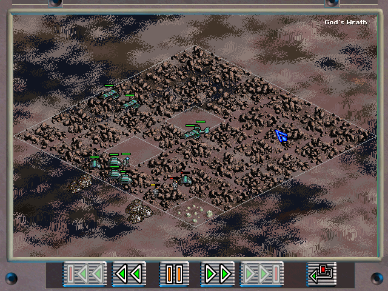

setting (on by default)ColonyThe settlement view zoomed, with the land around the colony (
The settlement view zoomed, with the land around the colony (colonyzoom)
Before: the settlement view is the original's one 640x320 view of the colony: what lies around it is cut off at the view's edge, and it cannot be zoomed (Deadlock 1's settlement window grew with the screen; Deadlock 2's is fixed). After: the settlement is drawn as a picture twice the view's width and three times its height -- more of the land around the territory, from the world's own terrain, the colony at its centre -- and shown through the zoomed world map's camera (mapzoom): the mouse wheel and a trackpad's pinch about the pointer, + and - on the main keyboard, the screen's edges to move it; from the whole picture to 3x. It opens at 1x, the original's view; the zoom is kept from one colony to the next. The name, the population and the icons over the view stay at the screen's size; a click or a drop lands on the tile shown. Not yet: a building in hand is drawn at the original's size at any zoom (PLATFORM.md, "Zooming the settlement view"). colonyzoom=0 brings back the original's view (from the next start of the game). Under the test driver it is off unless DL2_COLONYZOOM is set, so the end-to-end tests see the original's view. Checked by tests/ui/colonyzoom.txt (the demo's save: into Human Landing, out, in, back to the map) and check.py (only the settlement view's functions differ).
The original's view, zoomed out to the whole picture, and in to 2.5x:
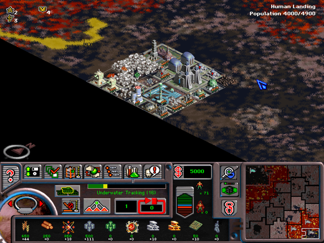
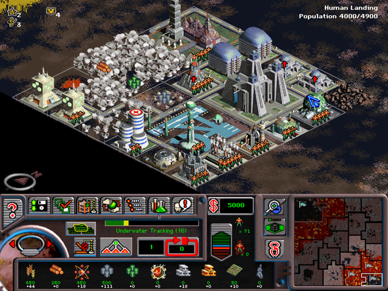
A button that has a key now names it after its tip, in white beside the tip's yellow: "End Turn [Enter]", "Taxes [F9]", "View Armies [Shift+S]", "Destroy [Del]" (below a tip of more than one line, on a line of its own). The key is the one the game itself takes for the button (the item's key, MenuFindItemByKey), so any screen's buttons show theirs, not only the main bar's; a key remapped with key.<from>=<to> is named by the key pressed. A button with no key keeps its tip as it was. tooltipkeys, on unless set; 0 the original's tips (Settings, Interface: Keys in tooltips). Checked: check.py (only MenuTooltipProc, CreateTTipTemplate and TooltipOpen differ), and the main bar's buttons hovered in a scripted game.
Before: the battle replay draws a flying unit with nothing under it, so a bomber over the colony looks much like the hover artillery on the ground beside it. After: every flying warrior (moveStyle FLYS: aircraft and missiles) casts a shadow -- its sprite's frame squashed to half its height, the ground darkened to a quarter -- half the frame's height below the cell it is over, drawn over the ground and the buildings and under the aircraft; the shadow's rectangles are added to the replay's dirty rectangle, so it leaves no trail. Not on a 256-colour screen. airshadows=0 turns it off; under the test driver it is off unless DL2_AIRSHADOWS=1, as the tests compare the screens with the original's. Checked by the replay probe (tests/probe/replay.txt on the crash1 save: four bombers over God's Wrath) with and without the setting; check.py: DrawSettlement and the three new functions differ (PortPlacementYieldSetting only by its static's place in .data).
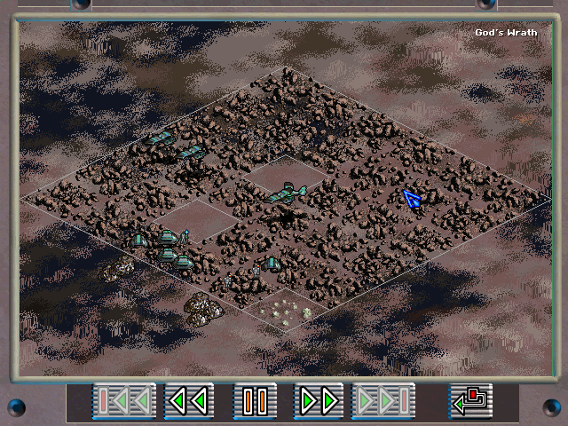

Before: in the replay of a battle at a water territory, ships and AAVs glide over the water with nothing behind them. The original has no wake anywhere: each such unit's combat sprite is one still frame per direction, the hull and its shadow (their cels in SPRITENW.DAT, 8 to a critter, looked at one by one), and nothing in the replay adds a critter for one. After: every few points a moving ship (moveStyle FLOATS) or AAV (AMPHIB) covers, a ring is left on the water where it was, a flattened ellipse that widens and fades over about a second, the water lightened towards white; drawn over the water, under the buildings and the units (src/settlement_view.cpp, PortDrawWakes), and once the battle is over the replay draws on until the last rings have faded (UpdateCombatAnimations). Only at a water territory (terrain 0, where the battle map is ocean); not on a 256-colour screen. wakes=0 turns it off; under the test driver it is off unless DL2_WAKES=1. Checked: check.py (DrawSettlement and UpdateCombatAnimations differ, as meant, with the new functions); the end-to-end tests with it off; the rings drawn, following the units and fading out after the battle, in the probe's land battle replay (tests/probe/replay.txt) with a test-only switch that let land vehicles leave them too. No save of ours reaches a sea battle, so the screenshots below are of a staged one, with a throwaway build: the battle test's turn-39 save (Human039.SAV), its first battle moved to an ocean territory with its units made a destroyer and an AAV, fought and replayed by the game as any other; the same moment without and with wakes:
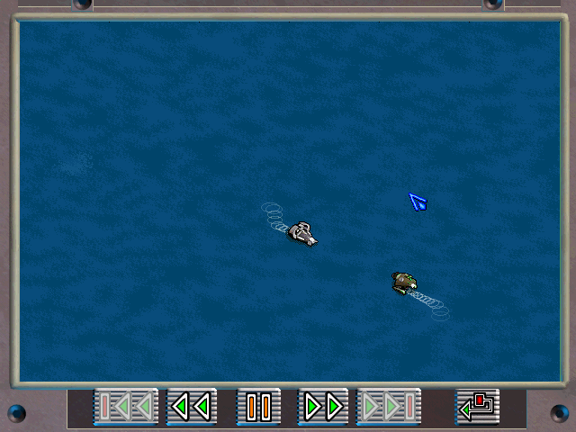

With ui=modern, the scenario editor is drawn by the modern UI too (modern-ui's screens/editor*.html); it was the original's 640x480 picture before. Its main view is the game's, with the editor's tools on a card beside the territory they act on (Add Units, Edit Resource Values, Add a Race, Rename Territory), the races placed as a panel (the one edited as lit, Change a Race, a click on another to edit as it, Delete All Races), the rail with the game's screens the editor has and Game Options, and no End Turn. Change Territory Types is a window with the game's map of the territories and the six terrains as a palette; Territory Resources a sheet of its thirteen numbers; Edit Tile Resources a sheet with the square's kind, its bonus and its yields; Add Units a drawer of the race's units as tiles with their pictures (a click puts one on the territory, however far down the game's list it is); the race screens say what they do in the editor (Add a Race, Change a Race, Player race; Select and Cancel, not a new game's Next and Back); the editor's Game Options page is titled Scenario Options. Every control is the game's own item. A map saved from the editor opens in it again through New scenario's Custom Planet (the game's own settings screen, Load Custom Map) and the modern file screen. Checked by playing a new scenario into the editor with the modern UI (tests/ui/editor.txt): Change Territory Types, the editor view, Add a Race (the race lands, the panel lists it), Territory Resources, saved as a map and opened again (the renamed territory is there, no races).
Before: the text the port adds -- the modern UI's screens, the first start's windows, the network's and the report's message boxes -- is English, written into the code. After: each string is under a key in lang/opendeadlock.pot (567 of them), and lang=LANG in opendeadlock.ini shows lang/LANG.po's translation, from the game's folder or beside the program; a string it lacks, or has with other %d/%s or |, stays English (lang/README.md). The game's own text is its data files', as before. The modern UI's capitals take accented letters too. Unset, nothing changes: the modern UI's 111 screenshots (ui_shots.py) are the same pixel for pixel but for the pointer behind the sheets and a video's frame, and its trees the same (ui_check.py); a pseudo-translation was drawn on the main menu, its pages and the Tutorial's card. No translation ships yet. Commits: ed3e31bd, 76458086.
Before: with the zoomed map (mapzoom, on by default), a message box in play -- the quit question when the window is closed, an advisor's message right after the landing -- showed the map's place in a dark pink, classic UI and modern alike: the game dims the whole screen behind its box, the placeholder colour where the zoomed map goes with it, and the dimmed colour was not taken for the placeholder, so the map was not drawn. After: the placeholder's darkenings are known by the game's own HLS tables (the dimming keeps its hue and saturation), and where they cover a quarter of the map's place the zoomed map is drawn under them, dimmed as the game dims. With the modern UI, a sheet over the game before the main view was ever drawn (an advisor's message right after the landing) draws the game's picture with the zoomed map too. Checked: a new game's quit question by quit from the console, with the modern UI and the classic one, the map dimmed behind the box.
settingInterface
The modern UI's Single Player is a page of three cards; the Editor's page no longer moves the menu
With ui=modern, Single Player opened its three choices (Random world, Scenario file, Quick start) in place under the item. It is now a page over the menu, as the Editor's: a card each with its picture and a line on what it starts, Select and Back. Opening the Editor's page moved the menu's column up by the room of choices it did not draw (the Continue card half hidden under the page); the column keeps its place now. The UI checks' scripts choose Random world with Select.
Before: the world map shows whose a territory is only by its flag and the satellite map; its borders are the same thin dark lines for every territory. After, with the HD terrain: wherever an owned territory meets land that is not its owner's (another player's, or nobody's), a line in the colour of the owner's race runs inside the realm, on a dark rim. realm=glow, the default, adds a wash of the colour fading inward from the line; realm=tint tints the whole realm lightly instead; realm=classic is the original's map. Where two races meet, both lines run side by side. Another player's territory shows as theirs where you see a City Center there or more (fog's light level), so the borders tell nothing the map did not; the map's own edge is no border. The distance to a border is measured on the map, so the line keeps its width over the mountains, and where a mountain hides the edge its outline against the other realm is the line. The colours: Ch'Cht yellow (their flag's), Humans blue (their white flag would vanish on snow), Uva Mosk green, Maug red, Re'Lu turquoise, Tarth orange, Cyth violet, Skirineen pink. Not with the classic terrain, on the top-down map, on a 256-colour screen or in the editor. Settings > Display > Realm borders chooses it (Glow, Tinted, Classic); under the test driver it is off unless DL2_REALM is set.
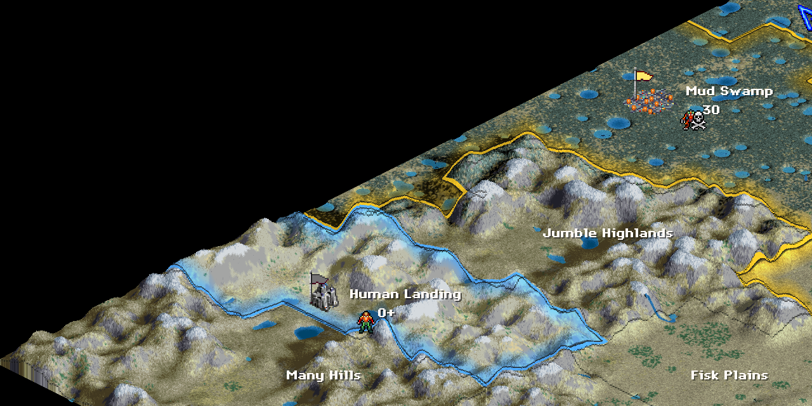
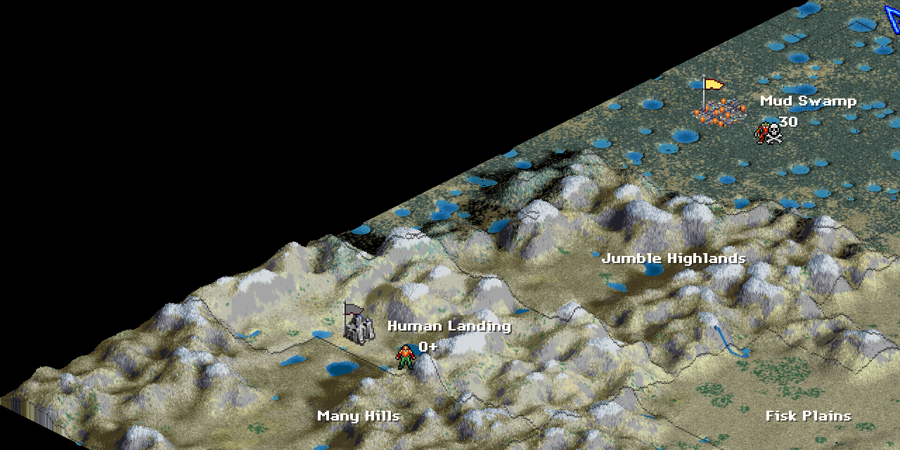
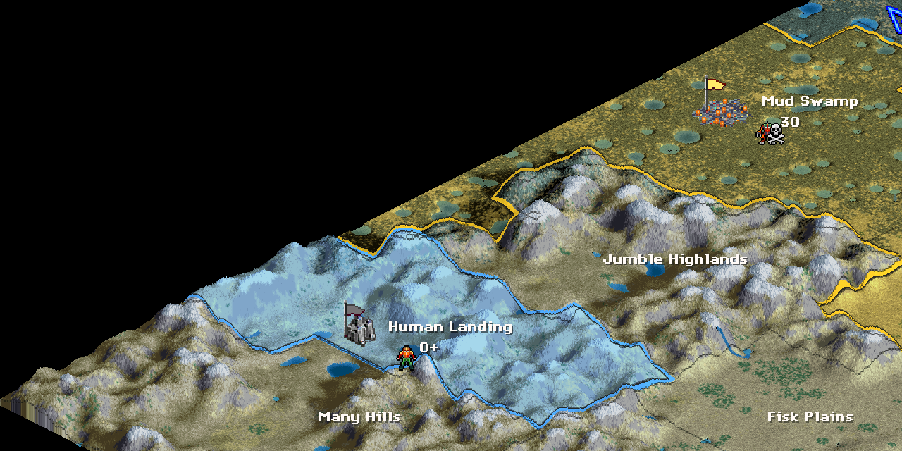
realm=tintHow: Draw3DWorld's TerrainBegin hands platform/terrain.c each cell's owner as the local player sees it (port_terrain_realms) and each player's race. The HD terrain's bake notes, with the cell each of its pixels shows, the place in that cell (in half points), so terrain_compose knows each pixel's distance from the edges of its cell that face another realm; and, worked out once a bake and a change of owners, how far up or down its column another realm's ground lies, so a mountain's outline against another realm is a border too, line and glow. Checked: check.py --expect TerrainBegin passes (samecode: TerrainBegin alone differs, on the macOS build; samedata SAME). On port-mac under the driver, the turn-39 save with the HD terrain: glow and tint as shown; with realm unset and with realm=classic the picture is the same pixel for pixel as before the change.
Before: the original's 32x32 icon (#194) on the window and in the macOS Dock and Cmd+Tab, and on the Windows builds' DEADLOCK.EXE in Explorer, its resources being the shipped EXE's. After: OpenDeadlock's icon (assets/icon/, a vector redraw of the original's, tools/icons.py): on Windows and Linux the emblem, 256x256, on the window and taskbar; on a Mac the rounded tile, 512x512, in the Dock and Cmd+Tab; in Explorer the Windows program's icon, every size from 16 to 256. tools/resources.py puts it into the resources the build links in, in place of the EXE's two icons, and adds the two PNGs, which SDL reads (res_png, platform/resources.c); the original's 4-bit icon reader is gone. Android's launcher had it already (tools/apk.py).
Checked: samecode and samedata SAME; the built programs' resources (the Windows EXEs' icon groups 3 and 4 read back from the PE: seven sizes and the 16x16; both PNGs in all three builds, decoded by SDL at 256x256 and 512x512); port-mac started to the main menu in the background. Not seen: a Dock, taskbar or title bar themselves (no shot shows them), nor Explorer's view of the Windows program.
Before: the 3D world map has one scale, 640x320 of the world at a time, scrolled in steps of 32 pixels; the mouse wheel scrolls it a square a step. After: it zooms from the whole world (or 1, where the world fits the screen already) to 3x. The mouse wheel zooms about the pointer (1.25x a step) and a trackpad's pinch with the fingers; on a touch screen two fingers pinch and drag it; + and - on the main keyboard zoom 1.5x (the numpad's stay the game's). Every zoom and scroll eases there: the screen's edges scroll at the same speed on the screen at any zoom, and the arrow keys, Tab, backing out of a colony and the turn's events glide the view to where the game centres it. Borders, names, armies, cities and icons are the game's own, drawn at its own scale into a canvas of the part of the world shown, which is scaled at the window's resolution (the HD terrain stays sharp to 2x); boxes, tooltips and a dragged unit over the map stay at their size. Clicks, drags and drops land on what is shown; the satellite map's frame is the part of the world shown; a screenshot shows the zoomed map. The wheel no longer scrolls the 3D map. The flat map and the settlement view are as they were. mapzoom=0 keeps the original's map; under the test driver it is off unless DL2_MAPZOOM is set; the console's zoom [Z [X Y]] reads or sets the zoom.
Checked: check.py (samecode: Draw3DWorld, Layout3DMapView, FindScreenPanelAt, AutoScroll, CenterOnPos, DrawSatelliteWorldView and PortWheelScrollMap changed, and the new mapzoom functions; samedata SAME); the seven end-to-end tests on port-mac (the map as the original's under the driver); and played by UI scripts from saves/Demo-sp.SAV: zoomed to 0.5 (the whole world), 2 and 3 about a point; a double-click on Human Landing's city at 0.5 and at 2 opened its colony, a click at 2 selected Yuck Bog, backing out centred the territory, the arrow keys scrolled the zoomed view.
The same place at 1x, zoomed out to the whole world, and in to 2x:
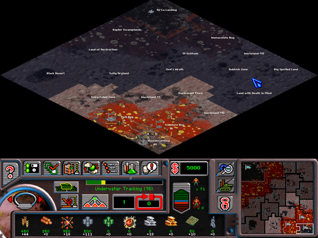
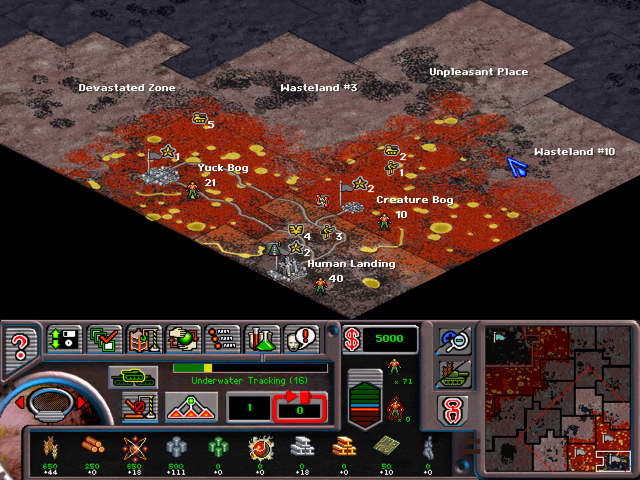
settingInterface
The modern UI: an advisor's message, hotseat's handover, the Tutorial's card, the keys
With ui=modern:
- an advisor's video message (a pact proposed or answered, a computer's chat, the landing's greeting) is a card at the top right over the map, the film playing in it, the subtitle over its foot and the speaker's race under it; a click or a key closes it, as before;
- hotseat's handover ("Player N, the RACE. Your turn.") fills the window: the next player's race large at the left, the box at the right, nothing of the last player's game behind it;
- the main menu's Tutorial first shows what the tutorial is (the ChCh-t against one Tarth colony, the goal, its ten turns) and opens Tutorial.pdf, the steps, beside the game; Start loads it as before;
- Keys, a new link at the main menu's foot, lists every key (KEYS.md), the port's own marked, with a search;
- the save question before leaving a game (with
confirmquitoff) is the modern UI's box. Checked bytests/ui/advisor.txt(the console'scheat sayplays clips),handover.txt,pages.txtandingame.txt.
With ui=modern, a battle's replay is the modern UI's window (screens/combat.html): the battle as large as fits, which battle of how many and who fights over it, the territory, a line for how far it is, a player bar with the game's own button pictures and their keys, and once it is over each side's units, survivors and retreats in a card (the battlecaption lines, shown here whatever that setting says). Checked by tests/ui/combat.txt (the replay, Fast forward, the end's card, Exit).
Resting the pointer on one of the replay's buttons put the game's tooltip over the battle viewer, and the UI tree, which in the viewer counts only the top menu as shown, took the tooltip for it: the replay's buttons no longer showed in the tree, so the modern UI fell back to the classic picture and a script's ui click D001 .. was refused. The tooltip is passed over now (uitree.c's first_shown). Found by tests/ui/combat.txt's Fast forward.
With ui=modern, the Black Market's other three pages are the modern UI's too, in the window of its Resources page: Information (the map of territories, a click picks one; its owner and what knowing it costs), Technologies (the offers as rows with their prices; the one picked with its picture, research cost and requirements) and Units (the offers with their pictures and prices; the one picked with its cost, requirements and figures in battle). Checked by tests/ui/blackmarket.txt (a new game played to turn 13, when the Skirineen come: Electronics bought for 250, Medic picked, Information, Done).
With ui=modern, the two questions a drag on the map asks are sheets: Move Settlers (and Move Resources: how many to move, with - and +, Move all, the cost) and Trade (the goods, to whom, the price and quantity with - and +, the subtotal, shipping and total). Checked by tests/ui/settlers.txt (the demo's save: one settler icon moved, Human Landing 40 to 39, Yuck Bog 21 to 22, 25 credits) and trade.txt (the battle test's turn-39 save: 3 wood offered to the ChCh't at 12, total 42; they refuse). The scripts drag on the map by the console's new modern map X Y drag X2 Y2.
With ui=modern, Scenario Status is a drawer (the player, the score, the victory condition, the game's players) and so is Chat (whom to send to, the kind of message and its lines, a custom line, Send); a tile's mineral survey is a sheet with its resources as bars. Checked by tests/ui/small.txt (a line of Threats chosen) and survey.txt. A shipyard's Select Port is a sheet around the game's map of launch sites; checked by tests/ui/port.txt (the Human campaign's first mission, its capital's Shipyard).
With ui=modern, Research is the modern UI's own screen (modern-ui's research.html): the whole technology tree at once, each technology a card with its picture, name and state (researched, available, queued and where, not yet), the lines between them; it scrolls with the wheel. A click queues or unqueues one, a right click shows its details (a sheet over the tree: its picture, level, what it requires and gives, the description); Clear, Undo changes and Done as before (Done, the x and Esc keep the queue, as the game's Accept). Alliances too: the races met as portrait cards, the game's table of pacts, the chosen race's relationship, the pacts to offer or break as buttons. The Colony Assistant: the colony's kinds of task as cards, its colonists dragged from the game's pool onto them, Optimize. Checked by tests/ui/research.txt (a technology queued; Alliances and the Colony Assistant opened and closed). The Black Market's Resources page: the ten resources as cards with their prices, the Skirineen's stock and Buy or Sell, the amount and the total cost; checked by tests/ui/market.txt (10 wood bought).
With ui=modern, the game's whole-screen screens are no longer the bare classic picture: each is in a modern window over the whole output, its title, pages (the market's) and buttons the modern UI's, the screen itself the game's as before, played as ever.
settingInterface
The modern UI's Taxes, New Construction, building panel and event log drawers, Morale sheet
With ui=modern, Taxes opens as a drawer at the right over the map (screens/taxes.html): the credits a turn the colony makes and the treasury first, the global rate as a ladder whose levels show the morale they cost and what they yield, then the local adjustment of the selected territory; Cancel and OK as before. Morale Information is a sheet: the morale now and next on a gauge, and its seven modifiers each as a bar about zero. Build opens New Construction as a wide drawer: the buildings with the game's pictures, the chosen one's costs and products beside the list, a double-click to place one. A building's panel is a drawer: its tasks as cards to select and lock, the selected task's colonists dragged from the game's own pool onto a card, the units it builds. The event log is a drawer: the kinds of event as buttons, each event's whole line, a double-click to go to its territory; on its Battles page the game's map of the turn's battles, where a click on a battle's territory replays it. View Armies' unit table is a panel at the foot of the map, the map live above it. Checked by tests/ui/hud.txt (a rate picked in Taxes; Morale opened and closed; a building chosen in New Construction; a task chosen in the City Center's panel), elog.txt (the log at the second turn's start, an event picked) and armies.txt.
settingInterface
The modern UI over the game: Esc's game menu as a list, sheets over a clean map, double-clicks
With ui=modern: Esc on the map opens the game menu, now one list (Save, Load, Play Settings, the port's Settings, Exit Scenario) with their keys; the sheets over the game show the map as it was before they opened, without the game's own menu behind them; a double-click on a saved game saves over it (Save) or loads it (Load); an advisor's film no longer shows the zoomed map's placeholder colour around it. Checked by tests/ui/ingame.txt, hud.txt, advisor.txt.
settingInterface
The modern UI's main view: the map with a resource bar, a rail and the satellite view
With ui=modern, the world map and the settlement are no longer the classic 640x480 picture: the map fills the window's width, the original's bottom console becomes a resource bar at the top (the ten resources, citizens, credits, research, turn, Options), a rail of the console's buttons at the left, the satellite view with End Turn at the bottom right and the selected army's picture with Destroy at the bottom left (modern-ui's world.html). The map plays as before -- clicks, double-clicks, drags, the wheel and the game's own cursor -- and every button is the game's. The game's own screens that open over the map (Taxes, Morale ...) show in it as before; the full-screen ones (Research, Alliances, the event log, the market) are still the classic picture. Checked by tests/ui/hud.txt.
With ui=modern, Host a game (and Hotseat's Continue) goes from Multiplayer straight to the lobby; before, it went back to the main menu with Multiplayer's page open (Custom or Random Scenario) and then asked the game's name. The game is named after the player ("NAME's game"). A scenario file is hosted with Scenario file at the page's foot, whose name is asked on a modern sheet. Checked by tests/ui/mphost.txt.
With ui=modern, the first screens over the game itself are the modern UI's, drawn over the game's own picture: the game menu (which game this is, Load and Save as tiles with their keys, Play Settings, Exit Scenario), Save (the saved games, the name, Save and Delete) and Play Settings (the map's look, Balloon Help, sound and music with their volumes, the advisors' heads, the event log); and the game's message boxes during play (Exit Scenario's question, hotseat's handover, notices) are the modern UI's. Each control is the game's own item, clicked as the player's; Cancel puts back what was changed, as before. The rest of the game is the classic screens. Checked by tests/ui/ingame.txt.
With ui=modern, a network game is set up in the lobby too. The host's lobby has Open seats for the network's players beside its computers; Host opens the game, and the lobby stays while players join: each takes an open seat under their name, chooses their own race, team and level on their own machine and says Ready, and there is a chat. Start (when every player is Ready) gives every machine the same seats, and the game goes on to the landing sites without the race screen. Game changes, with the lobby only: as for a single-player lobby game (each computer's own race and level, the climate, teams), and the seats nobody took are left out where the original made them computer players. The lobby's messages travel beside the game's (NETWORK.md), between builds of one game code only. Checked by tools/lobby_net.py (a host and a guest on this machine, a computer and two teams, chat, Ready; both reach turn 2 in step with the same seats) and netdrive.py's own network test (the classic screens, unchanged).
With ui=modern: a new random scenario (Single Player's Random world, and Hotseat) is set up on one screen, the lobby (screens/lobby.html), in place of the game options' page, hotseat's "how many", the world size and the race screen. Its seven seats are You, a Player at this computer (a second one makes it a hotseat game; each named in the lobby), a Computer or Closed, each with a race (or Random), a team and a skill level; the map has its size, climate and seed; the rules are the game options' own. Start goes on to the landing sites. Game changes, with the lobby only (the classic screens are the original's): each computer has its own AI Skill Level and can be given its race (the original gave every computer the game options' level and a random race), and a random world's climate can be chosen, Alien too (the original drew one of the first six). Teams are new: players on one team start with an alliance (the Victory pact: they win together) that cannot be broken -- an attempt says so; they need Allow Alliances. The races, as the race screen's, are drawn round the players in its order, so the landing sites go in the original's order. Checked by tests/ui/lobby.txt (a computer's race and level, a seat made a hotseat player, another closed, a climate and a size, two teams, Start to the landing site; game.log shows the races and levels the game took) and tests/ui/modern.txt.
settingInterface
The modern UI's boxes, Help, Hotseat, a scenario's end, the Editor, the quit question
With ui=modern: the game's message boxes over the modern screens (Delete's and Clear's questions, Continue's "no autosave") are the modern UI's, with the box's own picture; Help is a sheet with its topics, the entry's text at the window's width and its navigation; Hotseat's "how many play at this computer" is a stepper with the seats; a campaign scenario's Victory and Defeat have their scene as a banner; the Editor's two choices are cards. The main menu's Quit, Esc there and closing the window ask "Quit OpenDeadlock?" first -- the original, and the classic screens, quit at once. The first start's folder prompt and the copy's window are drawn in the modern UI's look; the copy can be cancelled (what was copied is removed, and the next start asks again).
Checked: check.py passes (samecode SAME); scripts reached Delete's and Clear's boxes, Help from the race screen (Next went on to the next race), the Editor's page, the quit question (Back stayed), Hotseat's count (+, then OK went on to the world size); the two first-start windows saved as pictures, and Cancel removed data.part. Victory and Defeat were not reached (they need a campaign scenario won or lost): drawn from their menus' items.
With touch (touch=1, and always on Android) the right button was only a finger held still half a second. Now a double tap is one too: the second of two taps close together (400 ms, 16 game pixels) is a right click where the left click would have been; the first tap stays the left click it was, as it comes at once. doubletap=0 (the Settings screen's Interface, Double tap) turns it off: two taps are then two left clicks, which the game's lists read as a double click. It is a finger's only: the desktop's mouse standing for a finger (touch=1 on macOS, Windows, Linux) still clicks twice. The mouse's own play (touch off) and the tests (the driver plays its own input) are unchanged.
port fixInterface
The modern main menu: Campaign without Single Player opening, Backspace in the name
Campaign (ui=modern) clicks the game's New Single Player Game and then its campaign; on the way the game's page showed as Single Player's choices for a moment. It is not shown now. Clicking the player's name focused the game's text box at its middle, which left part of the name selected with the caret at its start: Backspace took that part, then nothing. The caret now goes to the name's end (the End key after the click), and Backspace takes one letter at a time from there.
Checked: a script clicked the name and pressed Backspace three times: "Modern", "Moder", "Mod" in the tree (before: "dern", then nothing); Campaign shot every 150 ms on its way: the main menu, then the campaign's screen.
The modern screens (ui=modern) now carry the pictures the mockups have, read from the game's own archives (deadcyb.cam, deadanim.cam): the intro's art as each screen's backdrop, the logo from the intro, the races' figures on Continue, Campaign, the race screen, Load and High Scores, the menus' pictures on Single Player's choices and the victory conditions, the planets on World Size, a picture before each screen's title, the cinematic's still. The classic screens are untouched.
Checked: check.py passes (samecode SAME); each kind of picture saved by modern art and compared with the mockups' (tiles, IMAGs, TGAs, a film's first frame); the modern script (tests/ui/modern.txt) played and its screens looked at; ui_check the same.
The first time the main menu comes up and ui has never been set, a screen asks which interface to play with (the modern-ui mockups' ui-choice.html): Modern (chosen at first), with a picture of the modern main menu, or Classic, the original's 640x480 screens, with the game's own. Continue keeps the choice as ui in opendeadlock.ini, so it is asked once; Settings > Interface changes it later, the console's modern choice asks again. Esc is Classic. Not under the test driver or a UI script.
Checked: in an OpenDeadlock folder with no ui line (modern choice under a script, which otherwise does not ask), the screen at 1600x900, 1280x960 and 900x1400; Classic picked and Continue wrote ui=classic and left the classic main menu; Continue on Modern wrote ui=modern and the modern main menu came up; ui_check the same.
The program can now live in a folder of its own, opendeadlock (opendeadlock.exe) beside data/ (the files of Deadlock 2 it reads), saves/ (with saves/campaign/ and saves/multiplayer/ for the game's campaign\ and msaves\) and scenarios/ (the game's custom\ and maps\). Its first start finds Deadlock 2 (gamedir=, or the folder dialog) and copies the game's files into data/ (about 470 MB, a window showing the progress) and the player's saves, scenarios, DL2.PRF and hiscore.dat beside them, with their dates; Deadlock 2's folder is only read. The game asks for its files by its own names as ever: the file layer moves them (PLATFORM.md, "The folders"), so the game's code is the same. Releases and tools/install.py FOLDER --game GAMEDIR make such a folder, with the program renamed; before, it was copied into the game's folder over its DEADLOCK.EXE. Started in a Deadlock 2 folder (or by DL2_GAMEDIR), it runs there as before: the tests do.
Checked: check.py passes (samecode SAME); a new folder with only the program and gamedir= copied the game and 10 of the player's files, the main menu came up whole (the cinematics file found under data/), Load Game listed the copied saves with their dates, a save loaded into its turn 39, and a campaign started wrote its autosave to saves/campaign/; the next start used data/ without copying.
With ui=modern (or Cmd+Shift+M / Ctrl+Shift+M while playing) the front end is drawn again at the window's own size, after the modern-ui mockups: real type, the main menu as a column of short names (Campaign, Single Player with its choices in place, Multiplayer, Load Game, Tutorial, Editor, Settings) beside the game's logo, a Continue card naming the save Shift+F9 would load (race and turn); High Scores as a panel with the first place as a card; and Multiplayer as one screen of the game's two -- the connection at the left, the games found at the right with a Join each and the host's address field always shown, Host a game at the foot; Load Game (and Custom Scenario) with its kinds as tabs and the chosen save's race, turn and date; Campaign with the races as cards; and a new game's screens -- the game settings (players, victory conditions as cards, rules), the world size with its planet and seed, the race with its figure large, the colony ship's progress, and the landing site with the planet's map large and clickable. Its Settings is the port's settings as a screen: sections, a row each with its control, a change made at once and kept in opendeadlock.ini. uitheme=tactical gives it the mockups' second look, square cyan glass with scanlines and glowing keys. Every other screen stays the classic one, and the game behind it is the same: each control clicks the game's own item. Off by default and under the test driver.
Before (classic) and after (modern, 1600x900):  
Checked: check.py passes with samecode EXPECTED for InitGameStart (it notes the Continue save, NoteContinueSave, new); tools/ui_check.py (newgame, and the new modern: the menu shot at three window sizes and played through its own controls) the same; Continue loaded a quick save through its card.
The port builds for Android as an APK (arm64, and x86_64 for emulators): python3 tools/apk.py --install --push-game /path/to/the/game builds it, installs it with adb and copies the game's files into the app's folder, /sdcard/Android/data/org.opendeadlock/files, where the game also keeps its saves and logs. The APK has none of the game's files, and is made from the player's own DEADLOCK.EXE like every build. The game is played by touch (touch, always on there): a tap is a click, a hold the right button, two fingers scroll. The screen turns to landscape, fullscreen, the 640x480 picture scaled to fit: made for tablets, whose 4:3 or 16:10 screens it nearly fills (a phone's wide screen leaves wide bars). Sent to the background the game pauses, and resumes when it is back (the pause written for it earlier, tried on the desktop with events sent by hand, never ran: SDL gives those events to event watchers only, PORT64.md, J). Checked on the emulator (Android 15, arm64; a Pixel Tablet and a phone): the intro, a quick-start game to the world map, a colony opened by a hold, background and back. Not yet on a real device; sound, the on-screen keyboard coming up by itself and a release (signed) build are still to do.

v0.0.2
#340. Before: the host took a connection into one of its eight slots and kept it until it closed. One that sent nothing (a port scanner), or a joiner that died in the handshake, held its slot for ever, and one welcomed that never created its player also held a seat in the game's count; once all were taken, real joiners were closed at once ("cannot connect"), and the session stopped answering as full. After: the host closes a connection that sends no HELLO within 10 s of its opening (a relay joiner's: of its connection to the relay being through), or no CREATE within 10 s of WELCOME, and counts a seat only for a created player or a welcomed connection still within its 10 s. A real joiner sends HELLO as soon as it is connected and CREATE as soon as it is welcomed, and gives up itself after 5 s at each step. Host side only; the bytes on the wire are unchanged.
Checked: samecode SAME (platform/net.c only); check.py passes. tools/nettest.py has a new scene: eight raw TCP connections fill the host's slots (six welcomed, two silent), the session stops answering and a ninth is closed at once; the host closes all eight after 10.0 s, answers with one player again, and a slow joiner (HELLO after 4 s, CREATE 4 s after WELCOME) and a normal one get in. Against the previous net.c the same scene fails (none closed after 17 s, the game still full). The whole nettest passes, the relay's scenes included; netdrive's two-game join and the end-to-end tests on port-mac too.
#246. Before: the autosave is written to Backup.bak in the kind's folder (saves\, campaign\, msaves\) and the one before is moved to AUTOSAVE.SAV / .CPN / .MSV; the load screen lists only the kind's extension, so after a crash or a quit the autosave it offered was a turn old -- in a network game for every player. Continue (Shift+F9) looked only in saves\: left in a campaign, it opened the last single-player game, or said there was no autosave. After: each list of saved games (single player, campaign, network) ends with a row "(Last autosave)" when the kind's Backup.bak is a saved game; it shows its race, turn and date like any row, loads, and can be deleted. Continue also considers a campaign's Backup.bak, AUTOSAVE.CPN (a mission's start) and QUICK.CPN, and takes the newest of all; a campaign loaded so opens on the world view, as a campaign started from its screen does. The row comes last, so a list still opens with its first row chosen. The save format is unchanged. Not done: autosaves=N (#38) for campaigns and network games, the issue's optional part.
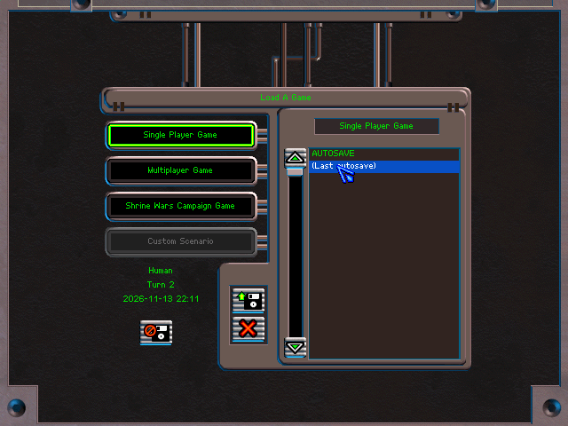

Checked: samecode differs in in_load_PopulateFileList, ShowSelectedSaveDetails, DeleteSelectedSave, RunLoadFileScreenPass, FindContinueSave, FrontEndMainMenu, and the new PortIsSavedGame and LoadFileRowPath (x86, x64, mac); check.py passes. On port-mac: a new game played to turn 3, the load screen listed AUTOSAVE (turn 1) and "(Last autosave)" (turn 2); loading the new row resumed at turn 3. A campaign's mission 1 played to turn 2 and left for the main menu, then Continue: before, "There is no autosave to continue from."; after, the campaign's Backup.bak loaded on the world view at turn 2 (with a temporary build in which F9 alone is Continue, removed: the driver cannot hold Shift). The network list was not tried. The end-to-end test saveload's load-screen shot differs from the shipped game's by the new row.
#289. Before: every step of the battle replay -- Previous, Next, Restart -- started a new battle track from its beginning, and leaving the replay started a new world track from its beginning instead of going on with the one that was playing. After, with replaymusic=keep: entering a replay pauses the world's track where it is and starts a battle track; Previous, Next and Restart keep that battle track playing; leaving the replay resumes the world's track where it was paused (a new one, as before, when none was playing). Unset, or restart, as the original. The music draws the same random numbers either way (the original picks a track from LocalRand, which the computer players use too), so the game plays the same with or without it.
Checked: samecode differs in StartReplayBattle, EndReplayBattle, RepeatThisBattle, ReplayPreviousBattle, ReplayNextBattle, and the new SoundFx_PortReplayMusic and ReplayMusicKeep (x86, x64, mac; on x64 ReplayCaptionOn too, by the address of its static in .data only); check.py --smoke passes. On port-mac, the demo save's turn-2 battle replayed (the probe replay.txt's save), then Restart, Next (no next battle: the replay ends), Previous and Exit, with a temporary log of the music started (removed): without the setting S003 at the start, S009 and S004 at Restart, S010 at Next; with it S003 at the start, nothing at Restart, and the world's S009 again (resumed) at Next. LocalRand's seed was the same after every step in both runs.
#238. Before: when a territory's shipment of a material stopped, the event log said "A blockade of X has cut off our much needed shipments of Y!" also when there was no blockade at all but the shipping route cost more credits a unit than the treasury held (FindSupplier answers no supplier for either): players looked for enemy ships when the treasury was empty. After: in that case the event reads "Shipments of Y to X have stopped: the route costs N credits a unit, and the treasury holds M." The event keeps its kind, priority and place in the log (the Special row; a double click still goes to the territory); a real blockade reads as before. Text only: no rule changes, and the computer players get the event as before.
Checked: samecode differs in FindSupplier, CollectMaterial, LogEvent only (x86, x64, mac); check.py passes. Not seen in play: from saves/Demo-sp.SAV with the treasury set to 0 and to -1 a turn's shipments logged no stoppage of either kind (none of its territories wanted a material another had to spare), and no test or save at hand reaches it.
#234. Before: ordering planes beyond their range asked "WARNING! PLANE CRASH!" once for every plane: eight fighters dragged out of range were eight identical Yes/No boxes, and each turn's standing orders could ask again plane by plane. After: one question per order -- a drag of a map army icon, a drop from the unit table, the selected army's move, or the start of a turn's standing orders (MoveArmiesToDst) -- whose text adds "The answer counts for every plane of this order."; the order's other planes take that answer (No clears their orders, as it did for one). A player can no longer answer Yes for one plane and No for another in the same order: drag fewer planes for that. The moves sent are those the same answers sent before, so a network game is unaffected.


Checked: samecode differs in StageTo, PortStuckBegin, PortStuckEnd, MoveArmiesToDst, and the new PortPlaneCrashAnswer (x86, x64, mac); check.py passes. On port-mac, from saves/Demo-sp.SAV, with a temporary build in which every unit's move asks the question (the save has no planes; removed after): a stack of four dragged from its map icon to Yuck Bog asked four times before and once after, the answers Yes, and the map was the same after both. The shots are of that build: the box is the one planes get. Turn-start standing orders not tried with planes.
#281. Before: closing the briefing screen stopped every sound to cut its narration, the music too, but left the music's track marked as playing, so nothing started it again until a pause and resume did (a video, an advisor scene, a building panel). A mission begun from the main menu was not affected (the world's music starts after the front end), nor, for more than a few seconds, a load at turn 1 (the landing panel's video resumes it); a briefing during play -- the destroy-all goal's, or one read again with Shift+F3 -- left the game silent. After: with a track playing, closing the briefing pauses and resumes it where it was (SoundFx_MusicSuspend, SoundFx_MusicResume), which stops every other sound as before; without one, as before. No random number is drawn (the resume plays without pitch variation).
Checked: samecode differs in CloseD034Screen only (x86, x64, mac); check.py passes. On port-mac, with a temporary log of the sound buffers' play and stop (removed): a campaign's mission 1 begun, then its turn-1 save loaded during play (the briefing opens again) and the briefing closed: before, the world's track stopped at the close and played again only after the landing panel's video, 4 s on; after, it plays again at once. The paths with no video after them (Shift+F3, the destroy-all goal) were not played: the driver cannot hold Shift. No end-to-end test reaches the function.
#245. Before: the Game Name screen (and --host NAME) took a name, but the game was hosted as "Game 1" whatever was typed (FrontEndHostNetGame passed the literal): every game on a LAN was listed as "Game 1", and since the session list keeps its selection by name, a refresh could move it to another game. After: the session is named as typed, cut to 31 characters (the list's 32 bytes; NetMasterGame now ends the name there), "Game 1" when the field was left empty (a session with no name is not listed). Network: the packets are unchanged, only the name in the host's answer differs; as with any change to the game code, the game-code level differs, so another build lists the game as "(other version)" and cannot join it.
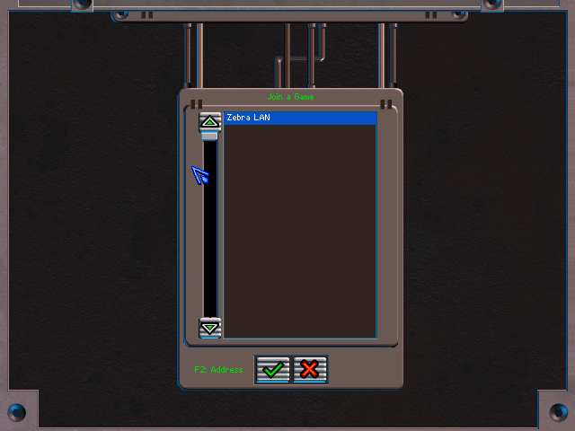

Checked: samecode differs in FrontEndHostNetGame, NetMasterGame only (x86, x64, mac); check.py passes. On port-mac, two games by netdrive.py: the host typed "Zebra LAN" on the Game Name screen; the joining game's list showed "Game 1" before and "Zebra LAN" after, and the host's platform.log says net: hosting "Zebra LAN". No end-to-end test reaches the two functions.
#167. Before: playing over the internet needed the host's port forwarded on the router (or net_upnp, or a virtual LAN), and a host behind carrier-grade NAT could not be reached at all. After, with net_relay=host:port set by every player: hosting also registers the game at a relay (galius-iv/relay, a small Node.js server everyone connects out to) and gets a code of six characters, shown in a message box, put in the clipboard and in the window's title until the game starts; a joiner presses F2 on Join a Game and types the code (the prompt then asks for "the game's code, or the host's address"), or starts with --join CODE (or the code as net_address); the game appears in the list, and joining it goes through the relay. Everything after is the game's own protocol, the version check included. Games are found by their code only, not listed publicly. Off unless set: it connects to that server; none is run publicly yet (NETWORK.md, "Through a relay", says how to run one).
Checked: samecode differs in AskForHostAddress only (the prompt's words and its failure message, with a relay set); check.py passes. nettest plays through the real relay, run by Node on this machine: a game joined by its code by two players (one typing it in lower case with a dash), broadcasts both ways, the code closed when the game starts while play goes on, a player leaving, a code no game has, the host gone, a relay that cannot be had, a code as net_address (joined; one no game has looked up as a name); the game started with --join CODE reached Join a Game and the relay listed the game (game.log, platform.log). All eight tests on port-mac: five match; battle, battle_quick and saveload differ only as before (saveload's g_saveSeed+0x32a runs too, the stack's leftovers noted under the ten settings below). Not yet tried: a whole game in the game's window through the relay, a relay on another machine, the Windows builds (compiled, not run with it).
planet terrain [FILE] in the console (or a ui script) writes the whole planet as Shift+PrintScreen does (#293) but without the territories' borders and with every territory as if seen, into FILE or screenshots/. Plain planet and Shift+PrintScreen are unchanged. When the picture cannot be made, game.log now says why (it said nothing). For the modern UI's campaign screens: tools/campaign_planets.py loads each of the 42 campaign missions in turn and writes its planet. Checked by running it on every mission (port-mac).
#414, part (a). Before: a read past the end of a file succeeds with fewer bytes, as Win32's ReadFile does, and the save loader does not look at the count: a save cut short (a crash, a full disk or power lost during an autosave) loaded on stale buffers as if whole. After: the file layer notes a short read on the file (port_file_short, platform/kernel.c), and DoLoadGameData and LoadSavedWorldMap then say the save is corrupt ("... is corrupt. Unable to load game."), as for a failed read. Not done: Continue still picks the newest save by its header alone (a half-written newest autosave is now refused instead of picking the intact one beside it), and the check comes after the game in progress was cleared; both need a save trailer (a format addition), left for a decision. Checked: samecode differs in DoLoadGameData and LoadSavedWorldMap only; on port-mac the demo save, TUTORIAL.SAV and the tests' Human039.SAV load as before, and the demo save cut to three quarters gives the corrupt message.
#413. Before: the save loader trusted the counts and lengths in the file: an event's text length (into a 1024-byte buffer on the stack), the event count (50 entries), the building and army counts (the tables, and old saves' building buffer on the stack), the local player's and the scenario's numbers (indexes, the scenario one written to), the territory count and map size (112 territories, a 40 x 40 map) and each territory's settled cells. A damaged save could crash the game or corrupt memory, and a joiner loads the save its host sends. After: a value out of range makes the save "corrupt" (the game's own message, "... is corrupt. Unable to load game."), as a failed read does. Saves the game wrote load as before; the save format and the network messages are unchanged. Checked: samecode differs in ReadGameGlobals, GetWorld, ReadEvents, ReadBuildings, ReadArmies and ReadTerritories only; on port-mac the demo save and TUTORIAL.SAV load as before, and the demo save with its territory count set to 500 gives the corrupt message.
#415. Before: LoadSavedWorldMap (the load screen's map, a network game's map, a scenario from deadlock.ini) wrote its error message with the file's path into 80 bytes: "... is a savefile from a newer version of deadlock. Unable to load game." is 70 characters before the path, "... is not a valid saved game ..." overflowed with a path of about 30, over the stack. After: 0x150 bytes, as DoLoadGameData's since #295; the message is the same. Checked: samecode differs in LoadSavedWorldMap only.
#419. Before: the fault handler (platform/log.c) named the stack with backtrace_symbols (which allocates) and ran atos / addr2line through popen (a shell), and glibc's first backtrace() loads a library: a crash inside the memory allocator or stdio, which holds their lock, could hang the handler and leave a frozen, perhaps full-screen window and no report; a program path holding ' broke the shell command. After: an alarm ends the program 15 s after a fault whatever happens; the bare stack goes to game.log first with write (CRASH: signal N; the bare stack (load address ...), which tools/symbolize.py names); the namer runs by its full path (/usr/bin/atos, /usr/bin/addr2line) without a shell, its output read from a pipe, and frames outside the program are named with dladdr; the first backtrace() is done at start. The Linux build links -ldl (dladdr, glibc 2.28). Checked: check.py passes (samecode the same); on port-mac a SIGSEGV sent to a running game logged both stacks and ended it.
#405. Before: every move of people out of a plagued territory filed a new plague for the destination, however many were already running or filed there; each kills a quarter of the people a turn, so three moves in one turn killed about 58% of the destination in the first turn and about 92% over three. After: the destination catches the plague from such a move only when it has none and none is filed for it, the test the plague's own spread makes; moving people out of a plague still carries it. Checked: samecode differs in _MovePopulation only.
#400. Before: under a Sea Command a side's ships get +15 accuracy and +2 range in CanHit, but the target searches and ShootTarget had already rejected every target beyond the ship's plain range, so the range bonus never mattered (ranges are squared distances: a Destroyer's 16 would become 18, reaching the diagonal (3, 3)). After: the +2 counts in the range tests of the target searches (warriors, forts, buildings) and of ShootTarget, so such ships fire at targets up to it. A naval battle with a Sea Command goes differently from the original's. Checked: samecode differs in GetTarget, GetFortTarget, GetBuildingTarget and ShootTarget only.
#397. Before: a missile without a target took the strongest active warrior not of its own owner: that could be a unit of the owner's military ally fighting on the same side, or a mine, and the missile was spent on it. After: the four missile searches skip allies and mines, as the ordinary target search (GetTarget) does. A battle where this happens goes on differently after it. Checked: samecode differs in GetMissileTargetEast, -West, -North and -South only.
#395. Before: an attacker's retreat cell starts in the margin beyond the field (row or column 26 or -9) and steps inwards until it is on the battlefield's diamond, but for the two sides at -9 the loop tested > 17 and never ran: for most columns the cell stayed off the diamond, the path search found no way there, and a retreating ground unit that had come from the north or west stood still under fire for about 100 rounds before it left, usually destroyed first. After: the cell steps inwards while the coordinate is below 1, the mirror of the loops from 26, and such units walk back off the field as the others do. A battle where this happens goes on differently after it. Checked: samecode differs in GetRetreatTarget only.
#394. Before: an attacker's retreat cell is in the margin beyond the field (a row or column of 26, or -9), and the flight path turns any cell off the field into its centre (9, 9): an attacking aircraft past its retreat percentage flew to the middle of the battlefield and circled there until it was shot down or the battle ended at round 750. Defending aircraft, whose retreat cells are on the field's edge, left normally. After: a flying unit (missiles aside) heads for the field's edge on the side it came from (the retreat cell kept to 0..18) and leaves there, as defenders' aircraft do. Battles draw from one random sequence, so a battle where this happens goes on differently after it. Checked: samecode differs in MoveWarrior only.
platform, game codeMultiplayerHost a saved network game from the command line (
Host a saved network game from the command line (--host NAME FILE.MSV)
After #170. Before: --host NAME always started a new game, and a save named with it won over it and was opened as a single-player game (an .MSV refused as "not a single-player saved game"); going on with a saved network game took Start a Game, Load Saved Game and the file by hand. After: DEADLOCK --host "Friday game" msaves/GAME1.MSV loads that game where Load Saved Game would and waits for its players ("Waiting for More Players"), as after a load by hand; the players join with --join ADDRESS or the list, as ever. A save that is not an .MSV with --host, an .MSV without it, or a save with --join gets a box saying why (with --host nothing is hosted, with --join the join goes on); a .SAV alone opens as before. For the tests, drive.py --game-args='...' gives the game a command line, and netdrive.py --host-args/--join-args each game's. Checked: samecode differs in CheckOpenSave and FrontEndNetNewOrLoad, TakeHostSave new (x86, x64, mac); check.py passes. In play on port-mac (drive.py --game-args, a copy of the run folder): --host Resume msaves/RESUME.MSV read the save and showed "Waiting for More Players ... 2 players"; --host H saves/X.SAV, msaves/RESUME.MSV alone and --join 127.0.0.1 msaves/RESUME.MSV each showed their box and stayed on the main menu; --host Plain reached the game options as before. Over the network (netdrive.py, two games on port-mac): the host with --host Resume msaves/RESUME.MSV, the other with --join 127.0.0.1 found the session, joined, and both went on to the race screen. Every test on port-mac: the five that match still match; battle, battle_quick and saveload differ only where they always do.
#388, toasts (on by default). Before: a toast went after at most 9 seconds or at any click, and was written nowhere, so a missed refusal was gone, and the note that an order to move stands though some units cannot reach yet was drawn red, as a refusal. After:
- each toast is a line of game.log (
toast: Oolan's Advice: Buildings cannot be built on top of each other. ...), which the console lists as it is written; a refused drop, refused on the press and again on the release, is one line; - Cmd+Shift+M, or Ctrl+Shift+M, shows the last toast again on the world or settlement screen, at once and with a refused building still in hand; the console's
toast Nthe Nth last of ten kept andtoastslists them. In a hotseat game each player gets only their own; - while the pointer rests on a toast it stays, and goes a second and a half after it leaves;
- the "order stands" note has the white frame of information;
- a toast too tall for the room above the lower interface starts at the screen's top.   
Checked: samecode differs in PortToast, PortToastMenu (a tall toast kept on screen), PortToastTick, PortStuckEnd (the note marked information) and PortConsoleCommands, and the new toast functions (x86, x64, mac); check.py passes. Played on port-mac with DL2_TOASTS=1 through the driver: the empty event log's toast and a Housing dropped on the City Center, each one line of game.log; the pointer on the toast kept it up at 12 s and it went after the pointer left; toast showed the refusal again with the Housing in hand and the pointer still, toast 2 the event log's; a table of what is missing, put in a refusal's place for a run (not kept), came up as a toast of 14 lines. The "order stands" note and a real table of what is missing were not reached in play.
#286. Before: while the computer players or the network partners took their turns, nothing told a player in another window that it was their turn again. After: when a turn of yours begins while the game's window is in the background, the Dock's icon bounces once (macOS) or the taskbar's button lights up (Windows); nothing while the window is in front. turnalert=2 keeps at it until you come back, turnalert=0 never. game.log notes each alert. Under the test driver it stays off unless the environment sets DL2_TURNALERT, and so with background.
Checked: samecode differs in WinMain only (the request after SyncBeginTurn, x86, x64, mac); check.py passes. Played on port-mac with the window shown and in the background (DL2_TURNALERT=1): game.log has the alert at turn 1 and again at turn 2, after End Turn; with background=1 none.
#227. Before: the window's title was always "Deadlock II", so the Dock, the taskbar, Alt+Tab and a second copy of the game (a network test) could not tell the menus from a game, or one game from another. After: while a game is on the title is Deadlock II - turn 12, and Deadlock II again on the menus; the screenshot's and the planet's notes still stand over it for their two seconds. Full screen shows no title.
Checked: check.py, samecode the same (platform/video.c only). Played on port-mac: the title SDL reads back was Deadlock II at the start, Deadlock II - turn 1 when the game began and - turn 2 after End Turn (a log line, not kept: this terminal may not capture other windows).
The fog below (2026-11-12) now shows without a setting: the user's decision. fog=0 turns it off. Under the test driver it stays off, as the tests compare the screens with the original's, unless the environment sets DL2_FOG=1.
Checked: check.py passes (samecode the same: the change is in platform/fog.c, which samecode does not compare). Under the test driver the fog stays off, so the tests' screens are as before.
#383, in "Hotseat: several players at one computer". With chatlog=1 the chat lines waiting for the event log were one list for everyone: a player's own lines ("You: ...") and the computer players' remarks to them went into the log of whoever opened theirs next -- often the next player's -- and remarks held for a human who was not seated never reached a log. Now each line waits for the player it is for, and a remark held for a human is that human's line, in their log when they next look at it. Without hotseat, the same as before. Checked: samecode differs in PortRecordChat, PortChatToLog and CustomChat only; a two-player hotseat game with chatlog=1 scripted on port-mac through two turns (no remark came in it: the computer players' remarks are random, and typed chat is the network game's, so the routing itself was not seen in play).
#382, in "Hotseat: several players at one computer". When a pact with a human who was not at the computer was broken (by another human, or by a computer player while someone else was seated), that human got no message and no video: the original tells only the local player, and found out only on the diplomacy screen. Now the notice ("Pact Broken: The Human have broken their Technology pact with you") and the breaker's video wait for that human and are shown when they sit down, after their event log, as the computer players' held messages are. Checked: samecode differs in NetBreakPact, HotseatHoldChat and PlayHeldChats, and the new HotseatHoldNotice; scripted on port-mac: player 1 proposes a Technology pact, player 2 is called over and accepts, player 1 breaks it and ends the turn, and player 2 sits down to the "Pact Broken" box.
port fixMultiplayer
Hotseat: a hotseat save loaded into a network game keeps each player's events to themselves
#381, in "Hotseat: several players at one computer". A network game that loaded a hotseat save read the save's hotseat section too: the other seats' event logs went into the local player's (their defeats, research, shipments: information the player should not have), and the seats stayed set, so if the game later became a single-player one (the others gone) it could play as a hotseat game with nobody seated and end itself. Now a network game skips the section: no seats, only the player's own log. A save cut off inside the section no longer logs its last event again. Checked: samecode differs in HotseatReadSave only; scripted on port-mac, a hotseat save loads and plays on as before (its seats and logs), and so does the same save with its last bytes cut off. The network load itself was not played.
#380, in "Hotseat: several players at one computer". With the auto-end-turn timer, a hotseat game had one clock for the whole turn: it started before the first player's curtain, ran through each player's planning, and at zero ended every player's turn who had not finished, so players 2 and later lost time or whole turns. Now each player's clock starts when they sit down (after their curtain), and at zero only the seated player's turn ends: the next player is called to the computer as after End Turn. Single-player and network games keep the original's timer. Checked: samecode differs in EmpireControlPhase, UpdateAutoTurns and TakeChair only; scripted on port-mac from a two-player hotseat save with a 15-second timer: player 1 kept at the curtain for 20 s still had their turn, ran out, player 2 was called in the same turn and had a full clock, and the turn ended when it ran out.
#386. The console (on by default) dropped down on the key under Esc on every layout and ate the character it typed. On a Hungarian keyboard that key types 0, so 0 could not be typed in save names, chat, trade amounts or the seed field. Now where that key types a letter or a digit on the layout in use, it types as any other key and Ctrl with it opens and closes the console; on US, UK and other layouts where it types ` or a sign, it works alone as before. Inside the console the key types its character. Checked: check.py, samecode SAME (platform code); not tried with a Hungarian layout (the test driver has no console).
#385, a follow-up to #343. NetOfferSale, the receiving end of a trade offer, checks the two territory numbers (#110) but takes the two players from their owners, -1 for a territory nobody owns: it then read g_negStatus[-1] and g_players[-1], could write g_negStatus[-1] and could have a computer player answer for the unowned land. Now such an offer is ignored, as NetOfferPact ignores a bad player since #343. The game's own menus never offer to unowned land (the transfer map says "ship to other colonies", the computer players skip it), so only a hand-made or corrupted message reaches it. SendOfferSale, the sending end, is left as it is: its two callers rule unowned land out first, and returning from it without an answer would leave them waiting. Checked: samecode differs in NetOfferSale only.
Releases now have Linux builds for x86_64 and arm64 (opendeadlock-VERSION-linux-*.zip: DEADLOCK and the libSDL3.so.0 it loads, for any distribution with glibc 2.28 or later), made by tools/linux_release.py in containers. On Linux the program must be started in the Deadlock 2 folder (or DL2_GAMEDIR name it): elsewhere it says "Deadlock 2 was not found", in a box where there is a display and on the terminal, and ends. Before: it asked for the folder in a folder dialog, which on Linux needs a desktop portal or zenity. macOS and Windows still ask. Checked: the smoke test plays, and the program away from the game says so and exits 1, in Debian 12, Ubuntu 22.04 and 24.04, Fedora 42 and the build image, on both CPUs.
The port builds and runs natively on Linux (arm64 and x86_64): python3 tools/build.py --platform sdl --arch linux on Linux, with the system's GCC and SDL3 (README.md, "Building from source"; PORT64.md, G). The game's code is the macOS build's, compiled for Linux; one thing differed there: Linux's arm64 ABI makes a plain char unsigned, which crashed world generation until the build said -fsigned-char. Checked: the seven end-to-end tests on Ubuntu 26.04 arm64 play through with the macOS build's differences and no others; CI compiles the objects on arm64 and x86_64. samecode SAME on the other three builds.
The game keeps per territory how much each player sees of it (tagTer.known, TER_KNOWN); below Orbital Surveillance's level it shows no armies there, no icons and a stale population, but the map drew that land as brightly as the player's own. With fog=1 (DL2_FOG=1) the world map draws it dimmed and greyed: dense where the player knows nothing, light where it sees only a City Center. Borders, names, cities and markers stay clear over it. 3D and top-down, the classic and the HD terrain; the levels change where the game works them out again (CalcWhoSeesWhat: each turn, on loading, after some events), so Orbital Surveillance lifts most of it. Not on a 256-colour screen, nor in the editor. Before: every territory drawn alike. After: the far territories (known nothing of) dense, the player's own and their neighbours clear.
 the Demo-sp save, 3D: beforeafter, `fog=1`
the Demo-sp save, 3D: beforeafter, `fog=1`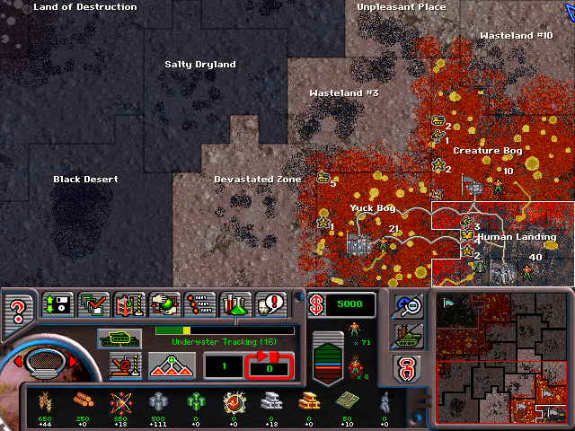
How: platform/fog.c makes the colours. Draw3DWorld draws a fogged territory's tiles through a fogged copy of the palette; DrawWorld fogs the cells after the map is blitted; with the HD terrain the bake notes the map cell each of its pixels shows and terrain_compose fogs by it (a mark in the key colour does not survive: borders darken the key through HLS tables). Checked: check.py --smoke --expect Draw3DWorld,DrawWorld,PortFog,FogPalette,PortFogCell, PortFogMap,TerrainBegin passes (the smoke test matches: off by default); new snapshot fog. On port-mac under the driver, the Demo-sp save: classic 3D, HD 3D (its 2x picture, autoshot) and top-down, each with and without the setting; without it the picture is the same as before.
Options, Top Down: every redraw of the flat world map crashed the port (SIGSEGV at address 0x10 in DrawWorld) since droptarget (fde89628), whatever its setting. DrawWorld read the surface's format from g_curImage, which there is no image: ClipBlit and the line drawers push the map surface's image while they draw and pop back to what was active before, nothing in a map redraw (Draw3DWorld pushes it itself). Before: choosing Top Down and OK ended the game. After: DrawWorld asks the map surface (g_surfaces[g_curSurface]) for its image. Checked: check.py --expect DrawWorld,PortMapImage passes; on port-mac under the driver, the Demo-sp save switched to Top Down through the Options screen crashed before and draws after, the same picture as the shipped EXE's in the same script but for the port's "(16)" on the status line. No end-to-end test reaches DrawWorld.
Before: quitting a game in progress -- the game menu's Quit, the quit key, closing the window, or quitting while waiting for the other players -- opened a box asking "Would you like to save the current game before continuing?", with Save, Don't Save and Cancel: "continuing" meant going on to quit, which read as a question about going on playing (the user's report). After (by default; confirmquit=0 brings back the original's box): "Are you sure you want to quit this game? Anything since it was last saved will be lost." with Yes and No, in the box the game uses for its own exit question before the first turn. Yes quits without saving, No goes back to the game. Under the test driver the original's box, as the tests compare the screen with it, unless DL2_CONFIRMQUIT=1 asks.   Checked: check.py, samecode differs in RunExitSaveDialog alone (every way of quitting goes through it). Played on port-mac from the demo's save, Quit from the game menu: with DL2_CONFIRMQUIT=1 the new box, No back on the map, Yes to the main menu; without it, under the driver, the original's box, Cancel back on the map, Don't Save to the main menu.
setting (on by default)ColonyA construction site shows its turns left on the settlement view (
A construction site shows its turns left on the settlement view (buildturns)
Before: how long a building under construction would take was in its panel ("3 turns"), a double-click away. After: on the site, where an upgrade arrow would be, the same green-framed plate as upgradeturns with the panel's own figure: the work left over this turn's work (BuildingProduction's slot 0), rounded up. Only where the work goes on (the site switched on and its materials paid, as the turn's processing requires) and this turn's work is some; on the player's own territories. On by default (the user's decision, 2026-11-12): buildturns=0 shows the site alone. Under the test driver it stays off, as the tests compare the screens with the original's, unless the environment sets DL2_BUILDTURNS=1. The plate of both badges is now sized on the number's ink, a pixel of black all round, so the number sits in its middle; before, sized on the font's advances, a digit touched the plate's top and one side.
a site in the Human002 save: beforeafter, the panel's "3 turns"
Checked: samecode differs in DrawBuildingUpgradeMarker, PortDrawUpgradeTurns (its plate moved into PortDrawTurnsPlate, shared) and the new PortDrawBuildTurns and PortCStringInk (x86, x64, mac); check.py passes. On port-mac under the test driver, the Human002 save: the site's badge "3" with DL2_BUILDTURNS=1, its panel's "3 turns"; no badge with nothing set; the upgrade badge "6" as before. The plates' pixels, with 13 and 100 drawn for a test: one pixel of black on each side of the ink. PortCStringInk (new, font.cpp) measures it. Outside the driver not played by hand.
The 64-bit builds (macOS, Windows x64). A territory the player does not own is drawn from the snapshot ResetTurn keeps in each tile (the building's type, picture and pending count), which DrawOrigBldg reads through S_TILE. S_TILE padded to +0x18 by a fixed count, but the tile it is handed is a tagTerTile, whose bldg pointer at +0x14 is 8 bytes at 64 bits: the three bytes it read as type, picture and pending were bytes of that pointer. Before: an enemy or scouted settlement showed buildings picked by the address of the real ones, usually one picture repeated on every built tile, often on a white box, and nothing where the snapshot had a building no longer standing. DrawCombatBldg and GetBldgStatus, the battle replay's buildings on the settlement, read the same wrong bytes. After: S_TILE spells out the pointer, so its fields sit where tagTerTile's do at both widths. Checked: samecode differs in DrawOrigBldg, DrawCombatBldg and GetBldgStatus, on x64 and mac only; the demo save's Kepler Swamplands, made scouted, before and after (docs/changelog/unseenbldg-before.png, -after.png).
The 64-bit builds (macOS, Windows x64). InitBattle fills a slot of g_battles through the BATTLE record, whose four list pointers make it 153 bytes at 64 bits, while the slots were BATTLESITE's 138: each battle wrote 15 bytes into the next slot -- the next battle's seed (set for all 32 before combat), territory and sides -- and the 32nd battle ran past the table into g_battle. Before: on a turn with several battles, every battle after the first fought with another random seed than the original's, and replaying a battle could change the next one's territory and sides in the combat report. After: BATTLESITE spells out BATTLE's fields after the bitmask, so a slot holds a BATTLE at both widths (0x86 bytes at 32 bits, as before; 154 at 64). Checked: samecode differs in InitBattle, IsBattleHere, StartCombatPhase, FindNext/PreviousBattle, ReplayNext/PreviousBattle, StartReplayBattle, RestartReplayBattle and ResetCombat, on x64 and mac only (the stride); samedata only in g_battles' size (4416 -> 4928 bytes). Found by the battle test (#259): with it, and with the game changes of #25 and #26 taken back, the test's dumps match the original's exactly; the end-to-end tests on port-mac.
moraledetail, incomedetail, richtooltips, scoredetail, goalprogress, unitbadges, showreach and placementyield are on without a setting, loadsort is date and savename last: the user's decision. Each only shows the player's own figures, or what the player already sees, and changes no rule. Before: each was off until set (its entry below says what it shows). After: each is on until set; KEY=0 (loadsort=name, savename=race) brings back the original's. The defaults are one table in compat/settings.c (port_setting answers them for a key nothing sets). Under the test driver they stay off, as the tests compare the screens with the original's, unless the environment sets DL2_<KEY>.
Checked: check.py passes (samecode SAME: compat/ is outside it); a test program on settings.c: each of the ten answers its default with nothing set, nothing under the driver, DL2_<KEY>'s value there, and a file's line over the default. All seven tests on port-mac: five match; battle has its known differences; saveload, besides its known two, differs at six 2-byte runs of g_players (g_saveSeed+0x32a and on, a field of each player), every run. They are bytes left from the stack: the original's are its own return addresses (in Mach), and the port's follow how its stack lies; the changed port_setting moves them, and so does any DL2_ variable (DL2_AUTOSHOT=0: they match again). A log in port_setting showed no default taken under the driver. Not played by hand.
The outline below (2026-11-11) now shows without a setting: the user's decision. droptarget=0 turns it off. Under the test driver it stays off, as the tests compare the screens with the original's, unless the environment sets DL2_DROPTARGET=1.
Checked: samecode differs in PortReachArmy only (x86, x64, mac); check.py passes. On port-mac under the test driver: the outline with DL2_DROPTARGET=1, none with nothing set.
The badge below (2026-11-11) now shows without a setting: the user's decision. upgradeturns=0 brings back the arrow alone. Under the test driver it stays off, as the tests compare the screens with the original's, unless the environment sets DL2_UPGRADETURNS=1.
Checked: samecode differs in PortDrawUpgradeTurns only (x86, x64, mac); check.py passes. On port-mac under the test driver: no badge with nothing set, the badge with DL2_UPGRADETURNS=1, none with DL2_UPGRADETURNS=0. Outside the driver, with nothing set, the setting reads as on (no value); not played by hand.
setting (on by default)ColonyA building being upgraded shows its turns left on the settlement view (
A building being upgraded shows its turns left on the settlement view (upgradeturns)
Before: the green upgrade arrow on a building said only that its upgrade had workers; how long it would take was in the building's panel ("3 turns"), a double-click away. After, with upgradeturns=1: beside the green arrow, on a small dark plate framed in green, the turns the upgrade has left, the panel's own figure: the upgrade's cost less the work done, over this turn's work (BuildingProduction's slot 0), rounded up. Nothing beside a red arrow (an upgrade nobody works on) or where this turn's work is none. Off by default at first; on by default since 2026-11-12 (above).


Checked: samecode differs in DrawBuildingUpgradeMarker only, and the new PortDrawUpgradeTurns (x86, x64, mac); check.py passes. On port-mac, a new game's Housing with two workers moved to its upgrade: the panel said 3 turns and the plate 3; without the setting the view is as before.
setting (on by default)World mapWhile units are dragged, the map outlines the territory under the pointer (
While units are dragged, the map outlines the territory under the pointer (droptarget)
Before: dragging units over the world map showed nothing of what a drop there would do; the player learnt whether it was an attack, a move, or out of reach by dropping. After, with droptarget=1: from the moment a drag starts -- units from the unit table, or a group from an army icon on the map -- the territory under the pointer is outlined, flat map or 3D, classic or HD terrain: red where a drop is an attack (another player's territory, not a military-pact partner's), light grey where it is a move, and each in a darker shade when the units cannot all be there this turn but can in more turns (the order the game gives then, carried on each turn). No outline where they cannot go at all, where they are, or on a territory the player knows nothing of (below a known City Center: its owner is not the player's to see); only the player's own units. The outline comes off at the drop. This turn's reach is showreach's test (_MoveUnit's); more turns is StageTo's own walk (its depth 100), with the same room and land/water tests at the end. The searches' writes are saved and put back, as showreach's. Off by default.
 tanks dragged over Wasteland #3: beforewith `droptarget=1`: a move this turn
tanks dragged over Wasteland #3: beforewith `droptarget=1`: a move this turnChecked: samecode differs in BackWndDragMove, Draw3DWorld, DrawWorld, DropDrag, EndDrag, PortArmyReach, PortReachArmy, PortReachShow, PortReachShown and PortReachEnd only, and the new PortDropTarget functions (x86, x64, mac); check.py passes. In play on port-mac (classic 3D terrain, a demo save): a tank group dragged from its map icon outlined neutral and own territories in reach in light grey, the enemy's Re'Lu Landing (its City Center known) in dark red, nothing over territories the player knows nothing of; the outline followed the pointer as the map scrolled under the drag (arrow keys) and came off at the drop; without the setting nothing changed. Not tried in play: the HD terrain (under the test driver an army drag does not start with it, with or without this setting), the flat map, a drag from the unit table, ships and aircraft.
#370 (two of its items). Code the shipped game never runs (nothing in the EXE refers to it), so nothing changes in play; fixed so it is right if it is ever used. FUN_00409474, the best-held territory without a building of class 0x13, tested !FindBuilding(0x13, 0) ("one at tile 0") where FindBuilding answers -1 for none; it now tests == -1. FindReachableSettledTerritory, where EvacuateTerritory (itself never called) sends an evacuated territory's armies, never stored its best score, so it picked the last reachable territory, not the strongest held; it now keeps the best. Checked: samecode differs in FUN_00409474, then in FindReachableSettledTerritory, only (x86, x64, mac); check.py passes.
#370 (two of its items). Before: RunSeaBesiegeTaskForce, disbanding a force that found no position, then wrote its target back into the cleared slot; RunMineTaskForce, disbanding a force that found no territory to mine, went on to test the cleared force's arrival and move it. After: both stop at the disbanding. Nothing a player sees changes: the slot is cleared again when it is next used, and the cleared force had no members to order. Checked: samecode differs in RunSeaBesiegeTaskForce and RunMineTaskForce only (x86, x64, mac); check.py passes.
#364. Before: in Shrine Wars, when an enemy at war with a computer player held a shrine it knew of, AssignShrineTaskForces started a land or sea attack force against it with no enemy (-1); RunAttackTaskForce acts only while the target's owner is the force's enemy, so the force was disbanded on its first turn -- after the job queue had filled it, perhaps from other forces, and, with every slot taken, after it had evicted another force. The next turn it started again. After: the force's enemy is the shrine's owner, as AssignAttackTaskForces gives its forces, and it attacks the shrine. Seen in play: a scripted Shrine Wars game (small planet, seven players, the tests' seeds) where player 4 went for player 3's sea shrine at turns 67-70: before, the force was started and disbanded each turn; after, it acted each turn. Checked: samecode differs in AssignShrineTaskForces only (x86, x64, mac); check.py passes.
#369. Before: GetMissingNextUnitTech answers the technology of the next tier of a unit's line, for the AI's upkeep job of each army to research; besides the troopers', cannons', aircraft's, ships' and warheads' lines it listed the Sea Transport, which has no next tier, so type 13, the Shockwave Dreadnought, stood in for it and every AI transport asked each turn for the Dreadnought's technology. After: the transport asks for nothing; the AI researches the Dreadnought for its own reasons only. Checked: samecode differs in GetMissingNextUnitTech only (x86, x64, mac); check.py passes.
#368. Before: TallyMilitiaStrength, which adds each peopled territory's militia to the AI's strength estimates, masked the territory's medic and Command Corps owners with (o > 1) -- player 0's bit, and only for owners above 1 -- where AnalyzeArmyStrengths masks armies with the owner's own bit: militia of players 2-6 counted player 0's Command Corps, never their own. After: (1 << o), the owner's bit, so militia counts its owner's Command Corps (+15 accuracy) in the estimate. The medic flag changes nothing for militia (ArmyRating leaves it out). Battles themselves are unchanged. Checked: samecode differs in TallyMilitiaStrength only (x86, x64, mac); check.py passes.
#367. Before: ArmyRating, the strength figure the computer players weigh armies by (their own and their enemies', per territory and in all), tested the Sea Command flag as role == sea && role == AAV, which no unit is, so a fleet under a Sea Command was rated without its +15 accuracy. After: role == sea || role == AAV, as the battle code tests it; such fleets count a little stronger in the AI's estimates. Battles themselves are unchanged. Checked: samecode differs in ArmyRating only (x86, x64, mac); check.py passes.
Before: a setting of opendeadlock.ini or DL2_<KEY> took effect only when the game started, and the console could only read them. After: the console's set KEY VALUE changes one for the session, reset KEY gives it back to the file's, and save keeps the session's changes in opendeadlock.ini, the rest of the file as it was (PLATFORM.md, "Changing settings while playing"). Most take effect at once -- the window's (scale, fullscreen, filter, vsync, ...), the terrain, the speech's volume, the tooltip delay and every display feature (moraledetail, unitbadges, replayspeed, ...); net_*, seed and hotseat the next time they are used; nosound, skipintro and key remaps at the next start; set says which. Nothing changes unless a setting is set: the game reads the same values as before. Checked: check.py, samecode differs in the port's own functions that read a setting again (PortMoraleDetail, PortUnitBadges, ReplaySpeed, ... 23 in all, with the console's), none of the original's; the commands run in a build that set, reset and saved settings, the window resized at once and the ini kept the rest of its lines; every end-to-end test on port-mac.
#189. Before: the game's own pointer moved about 22 times a second (its thread sleeps 40 ms between polls, g_cursorPollMs), visibly behind a modern mouse, unless smoothcursor=1 was set. After: 8 ms, about 98 a second, unless smoothcursor=0. The test driver always gets the original's 40 ms, so the end-to-end tests still compare like with like. Checked: check.py, samecode differs in CursorStartThread only.
Before: the port's logs were files only, and its keys and the game's cheat prompt were all there was. After: the key under Esc (` ` on a US keyboard) drops a console down over the top half of the window: the lines of game.log, error.log and platform.log as they are written, and a prompt with history and Tab completion for commands -- help, status, settings, get, version, screenshot, planet, terrain, fullscreen, quit, and cheat CODE, a code of the game's own cheat prompt on its conditions (single player, no scenario), run by the game's thread on the world or settlement screen (PLATFORM.md, "The console"). It is drawn over the picture, not into the game's screen, so screenshots do not show it. On unless console=0, which leaves the key to the game; the original used it only to type ` in a text field. The test driver never gets it. Checked: check.py, samecode differs in RunMainInterfacePass (the cheat request taken) and the new PortConsoleCheat`; every end-to-end test on port-mac.
Before: when the game refused something -- a building that cannot be set down there, a unit you cannot afford, colonists dragged where they cannot go -- Oolan's advice or a box with the reason came up in the middle of the screen, and the game waited for OK before the next try. After (by default; toasts=0 brings back the boxes): the same message shows for a few seconds (2.5 to 9, by its length) as a toast in the game's tooltip style, centred just above the lower interface: the picture the box would have shown on the left, its title over its text, a red frame and title for a refusal, a tooltip's white and yellow for the two that only inform (the empty event log, the editor's advice to add a race). A sound plays (toastsound, by default 0x84, the menus' click; 0 for none), the game goes on at once -- a building in hand can go straight to another site -- and the next click or a new toast takes it down. 50 messages: OK boxes (kind 4) with Oolan's advice or the titles of the in-game refusals (insufficient funds, not enough credits, no valid targets, transfer failed, not enough stuff, a disabled Building or Pacts button, an editor's race that cannot be added). Questions, the transfer window's Help and every other box as before. Under the test driver the boxes are the original's, as the tests compare the screen with it, unless DL2_TOASTS=1 asks.   Checked: samecode differs in UserMessage, CheckMessages (closes it when its time is up) and BackWndPaint (draws it again over the view), and the toast's functions are new (x86, x64, mac); check.py passes. Played on port-mac: a Housing dropped on the City Center showed the toast with the building still in hand, the next drop built it; the empty event log; each of the 55 messages (with sample values for the formatted ones) shown in turn by a test hook not kept, all fitting and in the right colour; the toast left the screen when its time was up. On by default since the next commit: the screens test, which opens the empty event log's box, still passes and matches the shipped EXE under the driver; with DL2_TOASTS=1 the toast shows.
port fixMultiplayer
The host's window keeps drawing while a computer player waits for a human's answer
#333. Before: while a computer player's sale or treaty offer to a human on another machine waited for the answer, the host read no window events: its window stopped drawing and macOS or Windows took it for hung (on macOS the busy cursor), however long the human took. After: the wait reads the window's events as a joiner's waits for the host do (WaitForNetReply: busy, so commands are not taken, with the network queue held while they are read), so the window draws, a quit is seen (and ends the wait, the fix above) and the wait idles instead of spinning. The game's state is not touched, so every machine still agrees. Checked: samecode differs in AISellResourceToPlayer, AIProposePact and AIProposeVictoryPact only (x86, x64, mac); check.py passes.
game changeMultiplayer
A human who leaves while a computer player's offer is up no longer freezes the game
#333. Before: when a computer player offered a sale or a treaty to a human on another machine, the host waited for the answer (AISellResourceToPlayer, AIProposePact) in a loop that only the answer could end; if that human left meanwhile, the host, and with it every player's game, stopped for good. After: the wait also ends when the receiver's slot is empty, the game is no longer a network game (the last other human left), the network game was aborted, or the game or the program is quitting; the offer then counts as not taken, with no change of attitude. Only on a path where the game used to hang, so play is unchanged otherwise; the network level changes, so builds before and after do not join each other. Checked: samecode differs in AISellResourceToPlayer, AIProposePact and AIProposeVictoryPact only (x86, x64, mac); check.py passes.
Before: with terrain=hd a valley was lit only by its slope, as bright as a hilltop that faced the sun the same way, and shallow sea was the deep's blue made lighter. After, with terrain=hd only: a point below the land around it (a valley, a hollow, the foot of a slope) is darker by how far below it lies, at most three shades, which gives the relief depth where the sun lights it evenly; and on earthlike and tropical planets the sea near the shore turns turquoise, fading into the blue further out. The dry planet's lakes stay blue, and so do the other planets' seas (brown on mars, frozen on the icy planet, yellow on the volcanic one). Lighting a world takes about 20 ms more, once (a Large world 75 ms before, 95 after); showing it costs what it did. Classic is unchanged.
Before and after (HD): mountains, a tropical swamp and its coast:

Checked: only platform/terrain.c changed, which does not run under the test driver; check.py passes (samecode SAME); scripted new games on port-mac on earthlike, tropical, dry and mountain worlds (the screenshots); the end-to-end tests on port-mac, which play classic, as before.
Before: with terrain=hd the land was lit by its slope alone, about two thirds of a shade darker than the original and the snow more than one and a half; lakes, seas and rivers lay flat in the ground, every shore was a point-by-point step, and the satellite map was the original's even where the 3D map was not. After, with terrain=hd only: the land casts shadows away from the sun (from the right, 25 degrees up, as CalculateLighting's); each land terrain's mean shade is the original's, which brings back the snow; rivers run in a shallow channel and lakes and seas lie a little lower than their shore, so the shore shows a bank that the sun lights or shades and that shades the water; shores follow a smooth curve with a little foam; and the satellite map is drawn from the same light, each pixel the commonest terrain of the area it stands for (InitSatelliteView calls port_terrain_satellite after ScaleTerrain). Lighting a Huge world now takes ~120 ms once (spread over the cores), baking it ~90; showing the map costs what it did. Classic is unchanged.
Before and after (HD): mountains, a swamp with its lakes and the sea, the satellite map:


Checked: check.py passes with InitSatelliteView the one function changed (a new samecode snapshot); scripted new games on port-mac, four worlds of four sizes, each idea on its own and together against the HD map before (the screenshots); the end-to-end tests on port-mac, which play classic, as before.
Before: with terrain=hd every lake and sea was one flat blue, where the original has lighter shallows along the shore and a darker deep (GetLight lights a point under the sea by its depth); and a highlighted territory was brightened by one tint for every colour, paler and greyer than the original's. After: under the sea the bake is lit by the depth, smoothed like the heights, as GetLight does; and the highlight is baked too, each colour two shades up its own ramp as DrawHighlighted3DTile draws it, which keeps its hue (the highlighted plains turn yellower, as in the original). The two images take twice the memory, 108 MB for a Huge world. Classic is unchanged.
Before (classic) and after (HD) on three more worlds -- grassland and swamp, a coast, a desert planet:


Checked: only platform/terrain.c changed, which does not run under the test driver; check.py passes (samecode SAME); scripted new games on port-mac, five worlds of four sizes, DL2_TERRAIN=hd against classic (the screenshots; terrain-after.png above is retaken).
Before: the 3D world map draws each height point as one vertical span of one colour, at 640x480: mountains are stretched pixels, steep slopes streaks. After (terrain=hd, the default; the user's decision, 2026-11-10): the terrain is a smooth lit surface at 2x (1280x960 for the whole screen), baked from the world's own full-precision heights, colours and roads when the map is first drawn (a Huge world in about 0.07 s on four cores, 54 MB), and baked again when the roads, the road technology or the palette change. The game still draws the map as before, in two key colours, and everything over it -- borders, names, units, cities, the panels -- is its own pixels, doubled; the highlight of a selected territory brightens the terrain as the original's does. terrain=classic, or Cmd+Shift+T (Ctrl+Shift+T) while playing, is the original's picture. The flat map, the satellite map and every other screen are unchanged. The test driver always gets classic, so the end-to-end tests compare as before.


Checked: samecode differs only in Draw3DWorld, PackDisplayHeight and RunMainInterfacePass (the toggle), with two new functions, TerrainBegin and TerrainKeys (x86, x64, mac); check.py passes; the seven end-to-end tests on port-mac show only their known differences; a scripted new game on port-mac with DL2_TERRAIN=hd shows the terrain under the borders, names and units (the screenshots), and without it the driver's screen is the classic map, no key colour in it.
#343 (completing #30 and #110). Before: the host's dispatcher took a message's player number as it came, and its handlers index the player tables by it; NetOfferState indexed the seven offer states by a 16-bit number from the message, on both sides; the pact messages' two player numbers indexed the player tables unchecked. A faulty or hostile peer could write outside them. After: the host drops a message whose player is not 0..6 (but for the two set-up codes, as a joiner's dispatcher already did), the offer state takes only players 0..6, and the pact messages refuse other numbers as they refuse a pact that cannot be made. Honest peers never send such numbers, so play is unchanged; the network level changes. Checked: samecode differs in MasterDispatchNetMessage, NetOfferState, NetBreakPact, NetClearPactFlagsOneWay, NetMakePact and NetProposePact only (x86, x64, mac); check.py passes; netdrive passes (two games, two turns, in step); the end-to-end tests that reach MasterDispatchNetMessage and NetOfferState (battle, longgame, market, newgame, saveload, screens) show only their known differences.
#339. Before: with the router forwarding another port outside to the host's (47700 -> 47624), the game was found and then could not be joined: the joiner connected to the port the host's answer names, its own inside port, and ignored the port the answer came from, the one the router exposes. After: the joiner keeps both and tries both, the one the answer came from first when it came from the address typed (address:47700), else the named one first, as before; on a LAN they are the same and nothing changes. Joiner side only: it works with hosts of before too. The wire is unchanged. net_upnp still takes only a mapping with the same port outside (a router may map TCP and UDP to different outside ports, and the joiner learns only UDP's). Checked: platform/ only, samecode SAME, check.py passes; nettest passes with a new scene, the proxy rewriting the answer's port to a closed one: joined over the proxy's port (it fails without the change: "join failed").
#335, #344. Before: every send waited, up to 15 s each time, while the peer's buffer was full: one joiner on a stalling link froze the host's game (the spinning cursor, "not responding") and the relaying of everyone else's messages; and each message left as two or three TCP segments (its header, addresses and body sent apart with TCP_NODELAY), relayed the same to every receiver. After: each connection has a queue; a frame goes into it whole and is sent as far as the peer takes it, the rest at the next call the game makes, never waiting. A peer whose queue makes no progress for 15 s, or passes 32 MB, is gone (the player-gone messages, as before). A frame leaves in one send: a capsule is one segment. At the end of a network game what is still queued gets 2 s. The bytes on the wire are unchanged. The join's own short waits (5 s) are unchanged. Checked: platform/ only, samecode SAME, check.py passes; nettest passes, and its "stops reading" scene now checks the host: its 18 MB of sends to a stalled player and a healthy one took 5 ms (before: 20 s, frozen), the stalled player was gone after 20 s and the other received everything; with a 4 MB cap (the issue's) that healthy player was dropped too, hence 32 MB. netdrive (two native games, two turns, the late End Turn) passes.
#338. Before: a full game, a game that had started, a TCP port that could not be reached and a timeout all ended in the game's "cannot connect"; only another version had its own box, and the host logged "a join refused" with no reason. The commonest internet mistake, forwarding UDP but not TCP, gave no hint. After: the host sends its reason after the WELCOME's level and date (one byte, read only by joiners that know it) and logs it; the joiner shows "This game is full", "This game has started" or "This host plays another game" before "cannot connect". A game found over UDP whose TCP port cannot be reached shows "The game ... was found at A, but its TCP port N could not be reached. The host needs to forward TCP as well as UDP ... and to allow the game through its firewall." A host of before sends no reason: its refusal is "cannot connect" as before; a joiner of before ignores the byte. The waits (5 s) are unchanged: a join holds the window while it waits. Checked: platform/ only, samecode SAME, check.py passes; nettest passes, with new cases: fake hosts refusing as full and as started, and one with no TCP port, each giving its message; a real host's reasons for another game's GUID (3) and after DisableJoin (2); the fake host of before #164 (no reason) still refused as before.
#330. Before: when the host's game crashed or lost its connection, the network layer reported the host gone, but the joiner's game threw that away (NetPlayerDisconnect made its "player gone" packet only on the host): the joiners sat at End Turn or a "Please wait" box for ever. Only a host that quit on purpose, which sends its surrender first, was reported. After: a joiner turns the host's leaving into the host's surrender, as the host does for a joiner: the game's "Opponent Surrenders" box shows, and with two humans the joiner plays on alone against the computer (MakeSinglePlayerGame; the computer players, which ran only on the host, start afresh). With three or more humans this reaches the host hand-over of #165, still open. Only when the host is already gone; the network level changes.

Checked: samecode differs in NetPlayerDisconnect only (x86, x64, mac); check.py passes. In play on port-mac (netdrive, scripts in the commit message): the host's game quits on turn 1 without surrendering; within 15 s the joiner shows the box, after OK g_isNetGame is 0, and its End Turn reaches turn 2.
Before: one human per computer; more needed the network. After: the network screen's Modem service, which the port never had, is Hotseat (hotseat=0 puts Modem back). With it, Start a Game leads to a random scenario's options (campaigns and custom scenarios are for one player; a hotseat save loads from Load Game as any other); after them a number picker asks how many of the players sit at this computer, and players 1 to n are humans, the rest computer players. Race and landing site go round them in the original's order ("Player 2: Select which race you will command"). Each turn the computer players plan first, as before; then each human in turn: a screen with their race hides the last player's empire ("Player 2, the Tarth. Your turn. Click OK when Player 2 is at the computer."), then their own empire where they left it, their own event log (with their own advisor), research, and the computer players' messages to them. End Turn passes the computer on; the turn is played out when the last has ended theirs, and the player list on the main screen ticks who has. A pact or trade offered to a human who is not at the computer -- by a computer player or another human -- passes the computer to them for the answer and back (the original's offer waits for an answer, which nobody at another seat could give: a hang). Each human is told of their own defeat, and the game goes on while another plays; it ends when someone wins or no human is left, each seeing how. Saves keep it: a hotseat game's save has a section after the original's, with the seats and the other players' event logs; a save with one human is written as before. On by default (the user's choice), but only the network screen leads to it: a game started any other way plays as the original.
src/hotseat.cpp; the hooks in the game's code are marked port: hotseat. Checked: check.py --expect with the 25 functions it touches and the new ones (55); the seven end-to-end tests on port-mac (five match; battle and saveload differ where they did before, and saveload's load dialog shot, which shows the port's save details); scripted on port-mac: a two-player game of six turns (the picks, the turn order, each player's log, a save in player 2's turn), the save loaded back (player 2 resumes, then turn 5 with player 1), and a technology pact player 1 offers player 2 (the computer passed to player 2, accepted, passed back, the pact made). Not scripted: a human's defeat, the end of a game, a computer player's offer to a human who is not seated.


#332. Before: joining a network game started from a save or a map, the joiners waited for the file in a loop that read nothing else. A host that could not open the file showed its error and went back to the menu without a word to them; a host that quit or dropped left them waiting for ever, with no box and no way out. After: a host that cannot send the file sends the game's abort (the joiners see the game's own "aborted" message); the joiners' wait ends on that abort, on a quit, or when the network game is over (a host leaving makes it a single-player game, #330), and they go back to the menu. The issue's Cancel button is not added: the transfer's own progress box sits on top while the file arrives. Set-up only; the network level changes. Checked: samecode differs in FrontEndStartGame only (x86, x64, mac); check.py passes; the end-to-end tests that reach it. Not tried in a network game from a save: netdrive starts a new random game.
#156. Before: hovering a territory on the satellite map said only its terrain and owner. After, with richtooltips=1: over one of your own territories a second line follows, "Pop 480/600, morale 41, food 120 (colonists eat 15 a turn)", and ", starving" while its colonists go hungry -- the population against MaxPop, the territory's morale, its food stock and CalcFoodUpkeep. The food produced a turn is not given: the game's figure for it (CalcTerritoryProduction) rewrites the territory's want[], which the turn's economy reads. Others' territories are as before. Off by default. Checked: samecode differs in GetBackWndBalloonText, and PortRichTerritoryTip is new (x86, x64, mac); check.py passes.
#331. Before: a joiner that asked the host for something (queuing a unit, a transfer, a sale, a pact, the race, Continue Turn) waited in WaitForNetReply, WaitForNetConfirm or SendQueueUnit's confirmation loop with no way out: if the host left or vanished meanwhile, the game hung with its window taking no commands until it was killed. After: the loops give up when the game is no longer a network game (a host leaving turns it into a single-player game), the network game was aborted, or the game or the program is quitting; the request counts as not done. Only on a path where the game is already broken, so play is unchanged otherwise; the network level changes, so builds before and after do not join each other. Checked: samecode differs in WaitForNetReply, WaitForNetConfirm and SendQueueUnit only (x86, x64, mac); check.py passes. Not tried in play: no script makes a host leave mid-request.
#336. Before: when hosting failed (the port held by another program or a second copy of the game), only platform.log said so; the game went on to "Waiting for more players" and joiners found nothing. net_port took any number above 0 and cut it to 16 bits: net_port=70000 hosted on 4464 while the log said 70000. After: a failed host shows a box ("This computer cannot host a game on port N: another program or a second copy of the game is using it. Set net_port in opendeadlock.ini to another port, or close the other program."), then the waiting box as before, whose Abort leaves. net_port outside 1..65535, or not a number, is noted in platform.log and the default 47624 used. Nothing on the wire changes. Checked: platform/ only, samecode SAME, check.py passes; nettest passes; a harness over net.c hosting on a port another process held: the box and E_CANTCREATESESS; net_port=70000: the log line and port 47624.
#346. Before: a hosted session's id (by which finders tell sessions apart) was the milliseconds since SDL started, mixed with an address that is the same in every process of the Windows builds (they link at a fixed base): two hosts started in the same millisecond had the same id, and a finder listed them as one, under the first one's name, and could join the other. After: the performance counter, the process id and the time of day to the microsecond go in too, mixed. The id is opaque on the wire; nothing else changes. Checked: platform/ only, samecode SAME, check.py passes; nettest passes. Under CrossOver's wine, two processes started together read different process ids and times.
#337. Before: the host's TCP and UDP sockets set SO_REUSEADDR, which on Windows lets another socket bind a port already in use: a second copy of the game (or another program) could host on 47624 beside the first, and queries and joins went to one or the other. After: on Windows the host's sockets set SO_EXCLUSIVEADDRUSE instead, and the second host fails to bind (#336 says so to the player). macOS keeps SO_REUSEADDR, which there only allows hosting again past the last game's TIME_WAIT. Nothing on the wire changes. Checked: platform/ only, samecode SAME, check.py passes; nettest passes (macOS). Under CrossOver's wine (64-bit, a small program over sock.c): before, a second process bound the same TCP and UDP port; after, its binds fail while the first holds them, and a host that closed an accepted connection binds its port again at once. Not tried on a real Windows machine.
#341. Before: with net_address (or --join) naming a host by name, the name was looked up with a blocking DNS call before every query, every half second; while DNS was slow or offline the Join a Game screen froze for the resolver's timeout each time, and a name that did not resolve left the list empty with no word. After: the name is looked up on a thread of its own, once and then every 30 s (a failure again after 2 s, doubling up to 30 s); an address that is not a name is taken at once, with no lookup. A name that does not resolve is noted once in platform.log and shown once in a box ("No computer could be found at that address.", the game's words for F2). Nothing on the wire changes. Checked: platform/ only, samecode SAME, check.py passes; tools/nettest.py passes (its IPv6 run joins over [::1] named in DL2_NET_ADDRESS); a harness over net.c with a name that does not exist (.invalid): the box once, the log once, no FindSessions call longer than 5 ms; localhost:port found over the thread.
#294. Before: the game's keys were fixed; on a Mac laptop the F-keys need Fn. After: a line key.<from>=<to> in opendeadlock.ini makes the key <from> reach the game as <to> (key.1=F1), down and up, applied where SDL's key becomes the Windows virtual key (platform/video.c, after vk_of). Only the game's keys: the port's own (PrintScreen and the rest) keep their physical keys, typed text is unchanged, and keys no line names behave as before. Names: letters, digits, F1..F12, Esc, Enter, Space, Tab, Backspace, the arrows, Home, End, PageUp, PageDown, Insert, Delete, or a virtual key's number. Nothing unless a line is added. Checked: platform/ and compat/ only, samecode SAME, check.py passes. The key-name parser and the reading of key. lines were tried in a small harness (F6, f12, E, 1, Esc, pageup, 0x75 read; F13, Foo, key. with no name refused). Not tried with a keyboard in the game: the test driver's keys do not pass this way.
#291. Before: a random planet could not be made again or shared. After, with seed set (single player): the world-size screen has an F2: Seed button, where a number can be typed (empty for a random planet); seed=12345 has it typed already. On Accept the game's three generators take the seed -- g_gameSeed, g_randSeed and g_libRandSeed, as the end-to-end tests seed theirs -- or, with none typed, all three take the seed the game drew, so any planet started this way can be made again from its seed with the same choices after it (race, players' options). Scenario Status shows it after the race, and game.log notes "new game: seed N, size S". Not in network games (the host draws the seed and sends it, NetSlaveInfo; nothing about it changes) nor with a network service chosen. A planet started without the setting depended on two generators besides g_gameSeed, so its seed alone does not make it again. Off by default. Checked: samecode differs in FillGameStatusScreen, OpenWorldSizeScreen and RunWorldSizeScreenPass, with five new functions (x86, x64, mac). In play on port-mac: the tests' new-game script without its three seed pokes, seed=12345, F2 and OK on the prompt: its turn-1 screen is pixel for pixel the one the pokes give; without the setting F2 does nothing.
 beforeafter (`seed=12345`)
beforeafter (`seed=12345`)
#276. Before: the unit table showed each unit's picture and level badge; its health, mission and destination were on the orders screen, one unit at a time. After, with unitbadges=1: each of your own units gets a health bar along the foot of its cell (100 - damage * 100 / its defence, the orders screen's figure; green, yellow below two thirds, red below one third), an amber mark at the cell's right while it has a mission and a cyan one below it while it has a destination it has not reached (#182). Others' units are drawn as before. Off by default. The issue's hover text in the table's title is not done. Checked: samecode differs in DrawUnitTable, and PortUnitBadges is new (x86, x64, mac); the bar seen on a new game's first unit (below); the two marks were not seen in play (no script gives a unit a mission or a long move).

#235. Before: the main panel showed the treasury alone, and the tax screen lists taxes, trade and upkeep without adding them up. After, with incomedetail=1: a tooltip on the credits says "Treasury 1200, next turn +312", then "Taxes +400, trade +12, upkeep -100", and that purchases, shipping and the production queues are not counted. The parts are the turn's own: CalcTaxes of each territory owned (as CollectTaxes adds them), each territory's trade income as its buildings were last counted, and CalcArmyUpkeep (as ChargeArmyUpkeep takes it). Nothing is changed by it: GetPlayerStats, which also adds these up, is not called, as it rewrites the territories' want[] and production figures; CalcArmyUpkeep's eight group figures are put back after it. The issue's net line on the tax screen and its Time Dilation part are left out: the 250 credits GetPlayerStats adds for Time Dilation are overwritten there, and nothing in the turn pays them. Off by default. Checked: samecode differs in CreditsItemProc, and PortIncomeDetail is new (x86, x64, mac); the tooltip seen on a new game's first turn (below).

#182. Before: a unit dropped beyond one turn's reach moved part of the way and went on in later turns, but its destination was shown nowhere. After: on the army orders screen (D904) the title reads "Name (to Territory)" while the army has a destination it has not reached; for a group, "Group of Units (3 to Territory)", or "(3 on the way)" when they head to several places. It shows the stored destination (dst, cleared on arrival by MoveArmiesToDst), only for the local player's own armies; no path is searched and nothing is changed. Cancelling is as before: drop the unit on its own territory. The issue's second step (a key cycling through territories with units on the way) is not done. On by default. Checked: samecode differs in FillArmyOrdersStats, and PortArmyHeadingNote is new (x86, x64, mac); no end-to-end test opens the orders screen.
#215. Before: the event named the settlement and the unit, not the resource. After: it ends with what is short, e.g. "(short: 30 iron, 12 credits)": when the head of a production queue cannot be paid, each material still missing after the stock was collected, by how much (metal by its worth, as the cost counts it), and the credits beyond the treasury; when a repeating queue cannot pay for the next unit, which resources are short (PayForItem says which, not how much). The names and amounts are those the "Not enough Stuff!" box uses. ProduceUnits passes the note in LogEvent's free argument c, which the computer players' handler does not read; the note is computed from figures already there and changes nothing. Saves store the event's text, so old saves keep their old lines. The longer line takes a little more of the event log's text pool. On by default. Checked: samecode differs in LogEvent, ProduceUnits and the new PortShortfallNote (x86, x64, mac). The end-to-end tests' event-log text differs wherever a test logs this event.
#211. Before: selecting a Colonizer or Sea Colonizer in a territory of 100 people or fewer (building one takes 100 of them) showed "Not enough Stuff!" with every cost, credits "and the import cost", every material including zeros and a technology line: _QueueUnit refuses with -1, and both callers (the building panel's unit list and the colony assistant) passed it to ShowWhyCantBuild as a mask with every bit set. After: an Oolan's Advice box says "A Colonizer needs more than 100 colonists in this territory: building one takes 100 of them." Over the network the asker also gets -1 when the host refuses or the reply carries no answer; these cannot be told apart from the colonizer case, and get the same box (before, the box listing everything). Only the local player's message changes: nothing is queued, paid or sent differently. Checked: samecode differs in ShowWhyCantBuild only (x86, x64, mac); no end-to-end test reaches it.
Before: the game read its files only from the folder it was started in; started anywhere else (a terminal in another folder, a double-click, the program kept apart from the game) it found none and stopped with "Unable to load needed CAM". After: when the current folder has no DEADTEXT.CAM, the port moves to DL2_GAMEDIR, else the program's own folder, else the folder remembered as gamedir= in opendeadlock.ini beside the program; when none holds the game, a box says so and the system's folder dialog asks for it (a folder without the game is refused and asked again; Quit ends the program). The folder picked is written as gamedir= in that opendeadlock.ini (the line replaced or added, the rest of the file kept; the user's settings folder when the program's own cannot be written), so the next start goes there without asking. Started in the game's folder, as the tests are, nothing changes. platform.log says how the folder was found. platform/gamedir.c, called before WinMain (macOS main, the Windows build's argument constructor; not with --report). Checked on macOS: started from / with the remembered folder (the logs then begin there), and with none (the box waits); the ini's reading and rewriting in a harness; the dialog itself by hand only.
#17. A battle that reached round 750 retreated every attacker, the killed ones and exploded warheads too, and the "retreated" mark made the battle's end keep them: they came back in the retreat territory with their damage, and gained experience. Now only the attackers still on the field retreat; the dead are deleted as in any other battle. Checked: samecode differs in IsBattleDone only (3 builds). (Written "defenders" until naming round 10 found the port's two sides the other way round.)
v0.0.1
#168. Before: hosting over the internet needed port 47624 forwarded by hand on the router. After, with net_upnp=1: when a session is created, the game asks the router to forward the port, TCP and UDP, by NAT-PMP or else UPnP IGD, and removes the mapping when the session ends or the game exits. It works in the background and gives up after a few seconds; hosting never waits for it, and when no router answers the game hosts as before. platform.log and game.log say what happened, with the outside address when the router gave one. Off by default: it asks your router to open a port. Routers with UPnP off, and carrier-grade NAT, cannot do this (NETWORK.md).
Checked: platform/ only, samecode SAME, check.py passes. Not tried on a real router: nettest runs it against a pretend one on this machine (tools/fakeigd.py): NAT-PMP, UPnP, permanent leases only, nobody answering, another outside port given (handed back), forged and oversized replies. And a whole network game on port-mac (netdrive) against that pretend router: the mapping held during the game, gone at its end, both logs saying so. A gateway found by guessing (this machine's address ending in .1 or .254) has not met a real gateway. Windows builds compiled, not run with it.
#250. Before: only the host's machine wrote the network game's autosave, so a long game was lost with that machine. After: every player writes msaves\AUTOSAVE.MSV and its Backup.bak, at the same two points of the turn as the host. A joiner's copy loads like the host's: copy it to whoever will host, choose Load Game, Multiplayer Game, then each player takes their own race. As the host's always was, AUTOSAVE.MSV is a turn older than Backup.bak; the load screen lists only the first. The manual Save stays the host's.
Checked: samecode differs in AutoSaveGame only (x86, x64, mac); check.py passes. Writing the file changes nothing that is compared: SaveGame's network path draws no random number, and each joiner already ran it every turn for its checksums. In play on port-mac: netdrive to turn 3 passes with no out-of-step, the joiner's msaves then holds both files; a joiner's copy moved to the host, loaded and played on to turn 3 with both games. Such a resume logs one "out of step on turn 1: players", which the host's own autosave gives as well, so it is not from this change; the master resends the player data and play goes on. Windows builds not tried.
#132. Before: the five canned chat kinds were only on the Chat screen. After, in a network game on the map or settlement screen: Ctrl+1 insult, Ctrl+2 threat, Ctrl+3 brag, Ctrl+4 complaint, Ctrl+5 praise each sends a random clip of that kind of your race to every other human player, by the Chat screen's own message; computer players do not get it. Nothing shows on your own screen: there is no preview as on the Chat screen. The other player's game shows the clip as it would from the Chat screen. New keys only, so no setting.
Checked: samecode differs in CheckMessages only (x86, x64, mac), PortQuickChatKey and PortChatKey new; check.py passes. In play on port-mac, in a temporary build that took plain 1 for Ctrl+1 (the driver cannot hold Ctrl; removed): netdrive, the joiner's key brought up the Cyth clip on the host, and both games reached turn 3 with no out-of-step. The real Ctrl key and Windows builds not tried.
#131. Before: a chat line was played once and gone; "View Chat" is a stub of the original. After, with chatlog=1: typed lines, your own included, and the computer players' spoken remarks enter the event log, on its second row (Special Events), as "You: ..." or "Cyth: ...": the lines since the log last opened, listed when it next opens. The log is emptied as a turn ends, so a line sent or heard during a turn is there at the start of the next, or sooner with the Event Log button. A line turns up that way once, and the log opens by itself on a turn that has only chat lines. The computer players' video-clip chats have no text and do not appear. A line never pushes an event out of a full log: it is counted with the events that did not fit (#128). Each machine keeps its own lines; nothing is sent, and the event log is not in the network checksums. Off by default.
Turn 2, Special Events: beforewith `chatlog=1`
Checked: samecode differs in PlayCustomChat, OpenEventLogIfAny, FUN_00423960 and WinMain only (x86, x64, mac; PortRecordChat, PortChatReset, PortChatToLog new); check.py passes. In play on port-mac: a typed line in single player (above, the real chat screen); in a network game (netdrive, with a chat step on a temporary script) the joiner's line reached the host's log ("Cyth: Hello from the joiner"), both games reached turn 3 and neither logged out of step. A computer player's remark, full log and Windows builds not tried.
#293. Before: a screenshot held only the view. After: the new key, on the world or settlement screen, writes screenshots/planet_<date and time>.png, the title bar saying so: the whole world at 32 pixels a map cell (up to 1280x1280) from the colour map the satellite map is made from, with the territories' borders. A territory the player has not seen is darkened as on the satellite map and sampled at that map's own resolution, so the picture shows no more of it than the game's map does. No owner flags; the issue's "whole planet after the game ends" is not done, as the key works only on the screens of a game in progress. Not in the editor.

Checked: samecode differs in RunMainInterfacePass only (x86, x64, mac), PortExportPlanet new, and shot_name split out of shot_key in platform/video.c; check.py passes. In play on port-mac, in a temporary build that also took F3 as the request (the driver's keys do not reach the platform's key handler; removed): the picture above, 640x640, from a turn-4 save. The keys themselves, Windows, and a full-size map not tried.
settingScenariosCampaign goals show how far you are (
Campaign goals show how far you are (goalprogress=1), and Shift+F3 shows the briefing again
#249. Before: Scenario Status listed a mission's goals as fixed texts -- "Scenario ends after 60 turns", "Capture ChCh't Landing for 1 turns", "Obtain 5000 iron" -- and the briefing could not be read again after the mission's first turn. After, with goalprogress=1: each such line ends with the player's own figures: a turn limit with the turn it is now ("(now turn 7)"), a goal of holding territories with how many are held and for how many of the turns needed ("(you hold 0 of 1; held 0 of 1 turns)", from the turn the game stamped when they were first all held), a goal of stocks with what the player has of each ("(you have 150)", the figures the goal's own test compared). Off by default. And without a setting: Shift+F3 in a campaign mission, or Shift and the Scenario Status button, shows the mission's briefing again; F3 alone still opens Scenario Status.


Checked: samecode differs in FillGameStatusScreen, IsStatsGoalMet (it keeps the figures it compared) and RunMainInterfacePass only (x86, x64, mac; at 64 bits PortScoreDetail too, only in a file-relative offset of its static); check.py passes. In play on port-mac: the Human campaign's first mission, F3 with the setting: "o Obtain 5000 iron (you have 150)"; without it the original's line; with g_scenarioNum poked to other missions to see their lines (display only): "Scenario ends after 60 turns (now turn 1)", "Capture ChCh't Landing for 1 turns (you hold 0 of 1; held 0 of 1 turns)". Shift+F3 tried only in a temporary build that took F3 alone for it (the driver cannot hold Shift): the briefing came up and closed back to the map; Shift and the button not tried.
#244. Before: Scenario Status gave the score as one number. After, with scoredetail=1: the pointer on the score shows a tooltip with its parts, as the game added them up at the start of the turn (the figure shown is that sum): a share of 500 for a victory, 50 for each city and shrine, 20 for each settled territory with people, the population in hundreds, the resources in store, ten for each level of technology, less three a turn, any other deduction (100 each, from the score record), then the sum and the scaling for the number of players, the options and the skill levels. Only the player's own score; other players' stay hidden. Off by default.


Checked: samecode differs in CalculatePlayersScores (it notes its parts) and FillGameStatusScreen only (x86, x64, mac; at 64 bits DrawSatelliteWorldView, PortReachShow and PortReachEnd too, only in the offsets of satellite.cpp's own statics in .bss, which the new array moved); check.py passes. In play on port-mac, from a turn-4 save: 50 + 20 + 4 + 410 - 12 = 472, scaled 170% to the 802 shown. Not tried: a victory, a deduction, a loaded game before its next turn (the tooltip is left out when the parts do not give the figure shown).
#186. Before: to weigh a stack against another the player read each unit's picture and added up the figures from memory. After, with armysummary=1: the unit table's title gives, after the territory's name, each race's number of units the table lists and their attack and defence added up, Mud Swamp -- Human 1: A2 D5. Only the units the table already shows (the ones the player sees there, carried ones included); each by its type and its race's bonus (WarriorAttStr, WarriorDefStr), the same for every side, so neither experience nor damage nor orders, which the player cannot see on another's units. It is no battle forecast: buildings, retreat settings and the dice are not in it. The title is also set when the table opens, where the original leaves the menu's "Settlement Name" until the first refresh. The title is 335 pixels wide: with many races in one territory its end may not show. Off by default.


Checked: samecode differs in RefreshUnitTableScreen (its buffer 0xc8 -> 0x200 for the longer title) and OpenUnitTableScreen only (x86, x64, mac); check.py passes. In play on port-mac: the Laser Squad's A2 D5 are the Black Market's figures for it; Human Landing with a squad and a Colonizer gave "Human 2: A4 D7". Not tried: another race's units in the table (none could be seen in the saves at hand), a full title.
#184. Before: nothing showed how far units could move; the player found out by dropping them. After, with showreach=1: from the moment a drag starts -- units from the unit table, or a group from an army icon on the map -- the satellite map lightens every territory the player has seen that all the dragged units can move to this turn, and darkens the other seen ones; the shading comes off at the drop. The reach is _MoveUnit's own test: the move cost from where the units began the turn within their movement, room in a territory of their own, no water for a land unit or land for a sea unit in another's. The search's writes (the territories' move costs and flags, the search's globals) are saved and put back, so the game sees nothing of it. Only the player's own units count; unseen territories stay grey, reachable or not; the main map is not shaded. Off by default.
 Beforewith `showreach=1`
Beforewith `showreach=1`Checked: samecode differs in DrawSatelliteWorldView, StartUnitTableDrag, StartWorldMapDrag, DropDrag and EndDrag only (x86, x64, mac); check.py passes. In play on port-mac, from a save with a bought Laser Squad: a drag from the unit table and one from the map's army icon shaded the satellite map as above, and the drop took the shading off; without the setting the map stayed as it was. Not tried: groups of several kinds, ships, aircraft, a network game.
#181. Before: units dropped on a territory they could not get to this turn -- no route, a missile out of range, an aircraft at the edge of its bases' range -- stayed where they were without a word, and the order was kept, so they tried again every turn and could march off turns later. After: one advisor box after the drop says how many of the player's units cannot reach the territory and why, in StageTo's own terms ("no route there from where they began the turn", "the target is beyond the missile's range", "they can fly no farther from their bases", "they can get no nearer this turn", or, off the network, "the move was refused: not enough movement left, or no room there"), and that the order stands. Which moves are allowed is unchanged, and so is the kept order; units that went part of the way are not listed. A drop of several units from the unit table gives one box. Nothing in the editor.


Checked: samecode differs in StageTo, StageSelectedArmyTo, StageArmyGroupTo and OrderTableArmiesToPoint only (x86, x64, mac); check.py passes. In play on port-mac, from a save with a bought Laser Squad: the drop above; a drop on the sea, where the unit went part of the way, and an attack on a neighbour, gave no box. Not tried: missiles, aircraft, the map's army icons (StageArmyGroupTo), a network game.
#214. Before: the box listed the full cost of each thing missing -- "10 wood", "50 credits and the import cost of the materials" -- but not what the player had, so the shortfall had to be looked up. After: each line says what there is, the figures the affordability test compared: the treasury for the credits ("(treasury 5)"), and for a material the stock of the settlement on screen ("(you have 0)"; for metal its metal worth). The import cost itself is still not given: working it out again would mean CostToCollectMaterials, whose ClearNeededArrays empties every territory's wanted-materials table, which the turn's economy reads -- not a scratch table, so the issue's fallback, the treasury alone, was taken. The box's buffers grew for the longer lines.
 Beforeafter
BeforeafterChecked: samecode differs in ShowWhyCantBuild only (x86, x64, mac); check.py passes. In play on port-mac: the City Center's unit queue, a Colonizer selected with the credits poked to 5 and the wood to 0: the box above; with only the credits short, "50 credits (treasury 5)". Not tried: metal.
#221. Before: "Unable to save current game. Would you like to try again?" said neither which file nor why, and a map saved from the editor failed without a word; the port's file layer told the game only "not found" or "access denied", and a short write no reason at all. After: the message adds the file and the reason -- "the folder is missing", "no permission to write there", "the disk is write-protected", "the file is in use", "the disk is full", or the Windows error's number -- and a map save that fails says so in a box of its own. The platform layer now reports a full disk (ENOSPC, and EDQUOT where there is one) and a read-only disk apart, on opening and on a short write, and logs the write's error in platform.log. The question and its buttons are unchanged.
a save into a read-only folder: beforeafter
Checked: samecode differs in SaveGame only (x86, x64, mac), PortSaveErrorText new; check.py passes. In play on port-mac: the run's (empty) saves folder made read-only while the game ran, the save screen's Save gave the box above, "no permission to write there"; before the change the original's two lines. Not tried: a full disk, a map save, Windows. The box's Yes does not save again, before or after: it compares UserMessage's answer with 6, which it never returns (a bug of the original, left for its own issue).
#232. Before: the save screen always offers the race and the turn (Human002), so a player who keeps one save per game retypes its name each time. After, with savename=last: it offers the name the game was last saved under through that screen, or loaded from through the load screen, while the same game goes on (the game's seed, as #230); the names the game writes by itself (AUTOSAVE, Backup, QUICK) are not taken, a new game starts from the race and turn again, and the editor's saves are left alone. Off by default. A name is noted only from a path under 260 bytes, so with its extension it fits the 280-byte buffer the original's name is written to.

Checked: samecode differs in RunLoadFileScreen and SaveGame only (x86, x64, mac), PortNoteSaveName and PortLastSaveName new; check.py passes. In play on port-mac: turn 1 saved as "Empire", End Turn, the save screen offered "Empire" with DL2_SAVENAME=last and "Human002" without; that save loaded from the main menu's Load Game, the save screen offered "Empire". Not tried: a campaign or network save, a new game after one.
#230. Before: the diplomacy screen always opened on the first other player, whichever race the player had been dealing with. After: it opens on the race selected when it was last closed, while that race is still in the game and it is the same game (the game's seed, which a save keeps: a new game, or a load of another, starts from the first again); otherwise on the first, as before.

Checked: samecode differs in OpenDiplomacyScreen only (x86, x64, mac); check.py passes. In play on port-mac: Diplomacy, the ChCh't, back, Diplomacy again: row 1, the ChCh't (row 0, the Uva Mosk, before the change). Not tried: a new game or a load in between. The tests open Diplomacy once a game, so they see no difference.
#40. Before: a button's tooltip shows after the pointer rests on it for a second, always (the original's 1000 ms, g_tooltipDelayMs). After, with tooltipdelay=ms: that many milliseconds, 0 to 10000 (more is taken as 10000); unset, or not a number, the original's second. Read once, when the tooltips start. The tooltips themselves are unchanged, so no screenshot. Checked: samecode differs in TooltipInit only (x86, x64, mac); check.py passes. In play on port-mac with the pointer on the Build button: with DL2_TOOLTIPDELAY=100 the delay read 100 and the tip was up 400 ms later; without it the delay read 1000 and the tip was not up at 400 ms, and 1.6 s later the screen was the same as the 100 ms run's at 400.
#200. Before: Esc did nothing on the unit table or its army orders panel (Unit Properties): the table's menu ran first each pass and dropped the key, so the panel's Cancel never saw it, and the table has no Esc of its own. After: Esc closes the orders panel as its Cancel does, applying nothing, and with no panel open closes the unit table as its Done does.


Checked: samecode differs in CheckArmy only (x86, x64, mac); check.py passes. In play on port-mac: the home territory's table, a right click on the Colonizer opened its orders; Esc closed them (g_isArmyOrdersOpen 0, still the table), a second Esc closed the table (the map), and the Taxes button then opened as usual. Before the change both presses left the panel and the table up.
#279. Before: the yield overlay shows one tile's raw figure for one resource, on empty tiles, not what a two-by-two Farm with the player's race would make there, and every drop of a building turns the overlay off. After, with placementyield=1: while a building that produces from its tiles (a Farm, a Lumber Mill, a mine, ...) is in hand on the settlement view, every tile it could be built from (the drop's own test, #275) shows what it would produce there per turn, fully staffed, in place of the overlay's figures -- 19/8 for a Farm's food and wood, in the order of its slots. The figures are BuildingProduction's for a full staff, written out for a building not yet there (PortSiteProduction: the same table, race ability, class, CalcTileProduction with the width, the territory's food and wood bonus and blight; endurium only with its technology), and read nothing back. A drop then leaves the yield overlay as it was. Off by default.


Checked: samecode differs in DrawSettlement, DropBuildingOnSettlement, PortBuildSiteVerdict and PortDrawBuildSiteHint only (x86, x64, mac), PortSiteProduction and the labels' functions new; check.py passes. In play on port-mac, with and without DL2_PLACEMENTYIELD=1: a Farm in hand showed food/wood on the legal sites and nothing on the taken ones; after the drop the food overlay stayed on (g_yieldOverlay 1; 0 without the setting). Not checked: a label against the output of the same building once finished and staffed (it would take turns of play).
#275. Before: a building in hand was only its picture at the pointer; whether the site was right, and which tiles it would take, showed only after the drop, from one of a dozen advisor messages. After: on the settlement view the tiles the building would take are outlined under the pointer -- green where it can be built, yellow where it can but covers a bonus tile, red where the drop would refuse it, with a word on why ("Over the edge", "Tiles taken", "Too much water", "Have one already", "Needs a coast", "Wasteland", "Not on a platform", "Not on land", "Start a settlement"). The test is the drop's own, in the same order (IsLegalBuildSite after the same settlement-first and editor checks, the point moved by the building's width), and changes nothing; the outline is drawn again only when the tile under the pointer changes, and goes with the drop, Esc or a right click.


Checked: samecode differs in BackWndDragMove, DrawSettlement, DropBuildingOnSettlement and PortCancelBuildingDrag only (x86, x64, mac), the hint's functions new; check.py passes. In play on port-mac: a Housing showed green on an empty tile, red "Tiles taken" over the City Center, green by the forest; Esc took the outline off; a Farm showed red "Over the edge" at the grid's edge and the drop gave that message; a Farm dropped on a green 2x2 outline was built on exactly those four tiles, no outline left behind. Not seen in play: the yellow of a bonus tile, the other reasons.
game changeColonyEsc and a right click put back a building in hand, and the interface works again (
Esc and a right click put back a building in hand, and the interface works again (Esc)
#272. Before: a building picked from New Construction Selection hung at the pointer until it was dropped; Esc did nothing, and a right click off the grid closed the settlement view with the lower interface still disabled, so End Turn, Taxes and the other buttons ignored every click (seen in play: Taxes stayed shut) until some other screen restored it. Only a building kept with Shift (#57) had a way back. After: Esc, or a right click anywhere, puts the building back -- nothing is built or paid -- and the interface works at once; the right click is taken by that, so it no longer closes the view or opens a tile. Not while a message box is up (a refused drop's advice keeps its own Esc).


Checked: samecode differs in BackWndRightDown, CheckMessages and PortEndBuildingChain only (x86, x64, mac), PortCancelBuildingDrag and PortCancelDragKey new; check.py passes. In play on port-mac: Esc with a Housing in hand put it back (500 credits kept) and Taxes then opened; a right click off the grid put it back and the view stayed, Taxes opened, and the next right click closed the view as ever. Before the change the same right click left Taxes dead.
#170. Before: a network game was reached through the main menu, the Multiplayer screen and its choices on both machines, and an unknown argument ended the game ("Unknown parameter"). After: DEADLOCK --join ADDRESS goes by itself to New/Join Multi-player Game, Join a Game over TCP/IP, and stops on the session list with ADDRESS looked for, as net_address (it is that setting for the run): a name, an IPv4 or IPv6 address, bracketed with a port; the player picks the game. DEADLOCK --host NAME goes to Start a Game over TCP/IP, a new game, NAME as the game's name, and stops on the game's options. No new message or protocol: the same screens' answers. Without the game's files --host stops on the Multiplayer screen; back on the main menu, the request is dropped; a save to open (#295) wins over both. The joining list still names a host's game "Game 1", as ever. Checked: samecode differs in RunPlayerNameScreenPass, RunNetSetupScreenPass, FrontEndNetNewOrLoad and FrontEndGameName only (x86, x64, mac); check.py passes. In play on port-mac with a temporary build reading the arguments from a file (the driver passes none; removed before the commit): --join 127.0.0.1 reached the list, and with a second game hosting (netdrive.py) it found the session and joined it, on to the race screen; --host "Test Game" reached the game options with the name set (read back from memory). Windows' command-line rebuild was built, not run.
#295. Before: any argument the game does not know ended it with "Unknown parameter"; a save was loaded only through the menus. After: a single-player save named on the command line, the first argument not starting with -, is loaded when the main menu comes up, as Shift+F9 loads the autosave, also from another folder (the game moves to its own) and with spaces in the path. A file that is not a .SAV, cannot be opened, or whose header is not a save's gets a box saying so, and the main menu stays. Windows: a .SAV opens by double-click once the player associates it with DEADLOCK.EXE (README); the game writes nothing to the registry. macOS: a double-click needs an app bundle, still to come (#60). DoLoadGameData's message buffer, 80 bytes, which a whole path could overrun, is now 336 (0x150, as QuickLoadGame's).
 without an argument: the main menuAfter
without an argument: the main menuAfter
Checked: samecode differs in DoLoadGameData, FrontEndMainMenu and RunPlayerNameScreenPass only (x86, x64, mac), CheckOpenSave and TakeOpenSave new; check.py passes. In play on port-mac, with a temporary build that passed the argument and started in /tmp (the driver passes none; removed before the commit): /tmp/.../My Game.SAV loaded to its turn 2 map; a text file named .SAV got the box and OK went back to the menu. The Windows constructor was built but not run.
#226. Before: at a fractional scale (about 1.44 times on a 1366x768 screen, 3.7 on a 14" Retina) nearest draws some of the game's pixels a screen pixel wider than others, so text and thin lines look ragged, and filter=linear blurs. After, with filter=pixelart: SDL 3.4's pixel-art sampling, sharp and evenly wide pixels at any size; a renderer that refuses it keeps nearest, with a line in platform.log. The default stays nearest (the maintainer's decision), so nothing changes without the setting. A window-level change: the game's screenshots do not show it. Checked: check.py passes, samecode SAME (platform only); the smoke script played with DL2_FILTER=pixelart on port-mac (PASS, the renderer took it: no line in platform.log). The look itself was not compared by eye.
#105. Before: the port asks for no vsync, so a scroll can tear. After, with vsync=1: each picture is shown at the display's refresh, no tearing; the game's thread waits for it, up to a frame, each time the screen changed, which is why it stays off by default. A renderer that refuses it runs without, with a line in platform.log. Checked: check.py passes, samecode SAME (platform only); the smoke script played with DL2_VSYNC=1 on port-mac (PASS, no vsync line in platform.log). Whether the tearing is gone was not judged by eye.
#37. Before: the game runs on in the background as it does in front (the port ignores the window's focus), so a turn timer runs out and the music plays while the player is in another window. After, with pauseinactive=1: from the moment the window goes to the background until it is in front again the clock the game reads stands still -- the turn timer, animations, replays and every wait on the clock stop and lose no time, nothing catches up afterwards -- and the sound stops where it is and goes on from there (movies and scenes, which follow their sound, wait with it). Work that needs no clock, a computer player's turn under way, runs to its end. The game's windows also get WM_ACTIVATEAPP as on Windows, which closes the narrator's picture, a drag and the tooltips; DL2 itself never stopped on it (every screen keeps itself active, so the issue's "shuts sound and video down" was not the original's doing). Never while the network is open (from Multiplayer's connection screen to the end of a network game): there the game runs on as without the setting, so nobody else waits. game.log notes each pause and resume, its times stay real. Off by default. Checked: check.py passes, samecode SAME (platform only). In play with a temporary build that faked the focus loss on the world screen for 5 s (removed before the commit): the clock stood still (21507 ms at the pause and at the resume), the game resumed and the next End Turn played on. A real window switch, the sound and the network refusal were not tried (the driver cannot change focus).
#106. Before: every key but the port's own (Cmd+F, Cmd+Shift+S, Cmd+V) went to the game with Cmd ignored, Cmd being no Windows modifier: if SDL hands the window Cmd+H, Cmd+M or Cmd+Q, the game would get H, M or Q as well as macOS hiding, minimising or quitting (the text was already dropped). After: on macOS any other key with Cmd is swallowed, down and up, and its repeats too if Cmd is let go first; Shift, Ctrl, Alt and Caps Lock themselves pass. Cmd+Q quits as before (SDL's menu), Cmd+Shift+S, Cmd+V and Cmd+F work as before. A press whose up never came no longer eats the next press's up. Cmd is not made Ctrl (Cmd+S is not Ctrl+S): that would be a new key of its own.
Checked: platform only, samecode SAME. port_key built alone against stubs, fed Cmd+H, Cmd+Q with a repeat after Cmd let go, Cmd+M with its up lost, Shift with Cmd, Cmd+Shift+S, Cmd+V, Cmd+F, Ctrl+S and Alt+Enter: each swallowed or passed as above, one screenshot, one paste, two switches. Not tried: whether SDL delivers Cmd+H/M/Q to the window at all (keys posted from a test program reached no window, and the driver cannot hold Cmd), so with a real keyboard on a Mac.
#122. Nothing a player can hear today: nothing in the EXE calls SndBufStartFade (no call, no pointer to it, no export), so no fade ever runs. Before: SndBufStepFade's d = v made INT_MIN of a value past 2^31 on x86 and x64 and saturated to INT_MAX on arm64, and the steps were rounded differently (the float of the difference divided on arm64 and x64, 80 bits throughout on x86). The original rounds t, the rate and v to floats, divides the exact integers, and converts with Borland's __ftol (0x004ae068), a 64-bit fistp of which it keeps the low dword: a value past 2^31 wraps, one outside 64 bits or a NaN gives 0. The issue said x86 gives INT_MIN; the original does not. After: the same on all three builds. The original's unsigned difference, which makes a fade down jump (its bug), is kept.
Checked: samecode differs in SndBufStepFade and the new FtolBorland only (x86, x64, mac). The new code, built as arm64, as x86_64 (under Rosetta) and as i686 (under Wine), against the original's own instructions (the x87 sequence and __ftol, run under Rosetta with 53- and 64-bit precision) and an exact model in Python: 20,025 conversions (every edge: 2^31, 2^32, 2^63, -2^63, infinities, NaNs, -0) and 20,000 fade steps, all equal; the old code differed in about 4,800 of the steps.
#116. Before: at the end of a load, ReadSavedPlayers set the local player's name with sprintf(name, g_playerName), the name as the format: %s or %d in it read arguments that were never passed (garbage, or a crash), and %% came out as %. After: the name is copied as text. A name without % is the same as ever. Whether % can be typed in the game's name fields was not tried.
Checked: samecode differs in ReadSavedPlayers only (x86, x64, mac). Not tried in play.
#257. Before: the report took the newest of AUTOSAVE.SAV, .MSV and .CPN. But each autosave is written to Backup.bak and the one before moved to AUTOSAVE.* (SaveGame's backup swap, #81), so the report held the autosave before the last, possibly from before the bug, and never the quick save. After: the newest written of each folder's Backup.bak, AUTOSAVE.* and QUICK.SAV / QUICK.CPN (Backup.bak on a tie). Continue's own choice (FindContinueSave) is left as it is: sharing it would change game code for no gain to the report.
Checked: samecode SAME. port-mac --report in a scratch folder: with AUTOSAVE.SAV older than Backup.bak it attached saves/Backup.bak; with a newer campaign/QUICK.CPN, that one.
#223. Before: every Exit from the main menu wrote "quit asked for: PostQuitMessage" with a stack to error.log (and so to every --report): Exit puts the screen back to 42, WinMain's backdrop, before AppExit posts the quit, and only screen 41 counted as ordinary. After: a quit asked for once the main window is gone (AppExit destroys it just before its PostQuitMessage) is ordinary too, and goes to game.log only, as before with its stack. A quit while the window is up, as the copy protection's WM_QUIT, still goes to error.log.
Checked: samecode SAME. On port-mac, a script clicked Exit on the main menu: game.log had the quit at screen 42 from AppExit, error.log was unchanged (the run folder's logs put back after).
platformSystem
opendeadlock.ini: lines it ignores are named in platform.log, and a comment may follow a value
#104. Before: a line without =, an empty key or a misspelt key was skipped without a word, and a comment after a value was part of the value, so filter=linear ; smooth meant the default, nearest. After: each such line writes "settings: opendeadlock.ini line N: unknown key "filtr", ignored" (or "no key=value", "no key before =") to platform.log, and a ; or # at the start of a value or after a space or tab ends it (filter=linear ; smooth is linear; a#b stays a#b). A known key is one in the first-run file's list, which check_settings.py holds to the keys the code reads. The DL2_ variables are untouched.
Checked: samecode SAME; nettest (which links settings.c) PASS. settings.c built natively with a stand-in for plat_log: a file with a BOM, a section, a comment line, a trailing ; and # comment, an unknown key, a line without = and one without a key gave the values above and one log line for each of the last three. Not tried in play.
#224. Before: compat/settings.c read the first 32 lines with a key and dropped the rest without a word, so a long file (or one with keys repeated) would lose its last settings. After: up to 128 are read, and a 129th line with a key writes "settings: more than 128 lines with a key in opendeadlock.ini; the rest are ignored" to platform.log. The 19 settings of today fit either way.
Checked: samecode SAME. settings.c built natively with a stand-in for plat_log: a file of 130 keys answered the 1st and the 128th, not the 129th, and logged the line once. Not tried in play.
#191. Before: the settings were listed only in PLATFORM.md, and a player with only the game's folder could not find them. After: with no opendeadlock.ini in the game's folder, the first run writes one with all 19 keys, each as a comment under its description, so the game plays the same until a line is uncommented. An existing file is never read for rewriting or touched; a folder that cannot be written, or that does not hold the game's files, gets none. The description sits on its own line, not after the key as the issue proposed, as a value runs to the end of its line (filter=linear ; smooth would not be linear). tools/check_settings.py, in check.py, fails when a key the code reads is not listed.
Checked: samecode SAME; smoke on x86, x64 and mac, the Windows builds writing the file under Wine. On port-mac: the file was written with 19 commented keys and no live line, a second run left an edited file byte for byte, and scale=1 added to it showed in game.log's settings. The check failed with a key removed. drive.py neither reads nor moves this file, so a test run may create it in the run folder; a list of comments changes no test. Not tried: an unwritable folder.
#189. Off by default (smoothcursor=1 in opendeadlock.ini, or DL2_SMOOTHCURSOR=1). The game draws its own pointer from a thread that polls the mouse and then sleeps 40 ms (g_cursorPollMs in the data, as the issue says), about 22 polls a second as measured. With the setting the sleep is 8 ms, about 98 polls a second. The value is written at run time, so the data module stays the original's.
Checked: samecode differs in CursorStartThread only. On port-mac, with temporary counters (not committed), driver moving the pointer and idle: 22 polls a second off, 98 on; no contended take of a lock in either (of about 50 a second while moving); the game's CPU a few percent either way. The pointer is drawn only when it moves or animates, by the thread alone (CursorPollUpdate does nothing while the thread runs), so there is no second drawing. Not tried: a real mouse, whose smoothness and any flicker only a person can judge (the driver's moves are slower than the poll, so the number of redraws did not rise there); Windows (built and smoked only, off).
#194. Before: the generic executable icon in the Dock and Cmd+Tab on the native macOS build, and no icon set on the window anywhere. After: the original's 32x32 icon. It is read when the game starts from the resources already taken from the player's own DEADLOCK.EXE at the build, so nothing of the game goes into the repository; if it is missing or in another format the game carries on with no icon.
Checked: samecode SAME; smoke on x86, x64 and mac. In play on port-mac, with a temporary build (not committed) that wrote the decoded icon to a file: the right picture and transparency, and SDL_SetWindowIcon succeeded. Not seen: the Dock or a title bar themselves (no shot shows them), and a missing or different icon resource. Windows: built and smoked only.
#193. Before: PrintScreen (Cmd+Shift+S on a Mac) wrote shot_NN.bmp, about 900 KB, among the game's files, and nothing showed it had happened. After: screenshots/deadlock2_<date>_<time>.png, about 180 KB on the main menu, and for two seconds the window's title reads "Deadlock II - screenshot saved (...)", or "screenshot failed". The title is no part of the picture; full screen has no title to show it. The test driver's shots and autoshot are still BMP: the driver has its own writer, and autoshot keeps video_shot.
Checked: samecode SAME; smoke on x86, x64 and mac. In play on port-mac, with a temporary build (not committed) that took two shots by timer, as the driver cannot press PrintScreen: the folder made, two PNGs named by the second, right colours when viewed, and game.log's lines. Not tried: the keys themselves, the title (seen by no shot), a failed save, a shot on Windows (built and smoked only).
#190. Before: nothing could be pasted; Ctrl+V did nothing (every field's filter refused its character 0x16) and Cmd+V did nothing. After: the clipboard's text goes in at the caret, replacing the selection, in the host's address prompt (F2 on Join a Game), save names, the player name, chat and the rest. Each character passes the field's own filter, so a save name still takes only what typing takes (#70), and a number field digits; only printable ASCII is offered, as typing gives: a line break, a tab or an accented letter is dropped and never acts as a key. It stops at the field's limit (a field with none stops at 127). A paste into a field that accepts none of it leaves it as it was. The layer's own Edit control (dialogs) pastes too.
Checked: samecode differs in EditBoxOnKey, and a new function, EditBoxPaste. In play on port-mac, with a temporary build (not committed) that made the driver's ~ the paste key and read the text from a file: the save name field and the player name got the text with ! kept or dropped by each field's filter, the line break and the accented letter gone, and the name stopped at 30 characters (the save file's name proved it). Not tried: the real Ctrl+V and Cmd+V keys and the system clipboard (the driver holds no modifiers), the Edit control, a Windows build (built and checked only).
#185. Off by default (battlecaption=1 in opendeadlock.ini, or DL2_BATTLECAPTION=1): a changed screen, so the game plays as the original unless it is turned on. Under the territory's name the replay already showed, it adds "Battle 1 of 1: Re'lu against Human" (counted as Previous and Next count), and when the battle is over a line per side: units, survivors and retreats. Those are DoBattle's own tests on the warrior list, without militia, mines, turrets and warheads, counted for each unit's first owner; a unit whose retreat fails counts as retreated here, as the replay does not move it.

Checked: samecode differs in DrawSettlementStats and UpdateCombatAnimations, and two new functions, DrawReplayCaption and ReplayCaptionOn. With the setting off the replay's screen is pixel-identical on port-mac. With it on: the caption and, after fast-forward, the result lines (the replay of one battle). Not tried: several battles' numbering (Previous, Next); the unit counts checked only by eye against the sprites.
#212. These lines named no place: a unit disbanded for upkeep, a Veteran or Elite promotion, a unit's repairs done, "Your undefended territory was taken over", and an enemy's or an ally's new City Center. Each now ends with " (in <territory>)" (their callers had the territory), so double-clicking the line (#53) goes there. The saved event text is what is stored, in the same format as ever, so new saves hold the longer lines and the log's text pool fills slightly sooner; old saves keep their old lines. An enemy City Center's territory is shown to every player once it stands.

Checked: samecode differs in LogEvent, GiveExperience, ProcessUnitMissions, DoBattle and ProcessTerritoryBuildings. In play on port-mac, a temporary build logging these events at the end of a turn (removed): the lines fit in the list and a double-click on one went to its territory. The events themselves were not reached in real play. A difference in the end-to-end tests wherever a test logs one of these events.
#218. "Your silicon-based opponents are considering their strategies" showed nothing while a long turn ran, so the game could look hung. The box now adds a line before each computer player runs: "The Uva Mosk: 1 of 2." Only on the machine that runs the computer players (single player, or the host of a network game); a joiner keeps the plain box. No message is sent: it is text and drawing only, and the races are already on the diplomacy screen.

Checked: samecode differs in EmpireControlPhase only. In play on port-mac, with a temporary 3-second pause per computer player (removed): "The Uva Mosk: 1 of 2", then "The ChCh't: 2 of 2". Not tried: a network game.
#216. "Demolishing this %s will give you back half the resources" gave no amounts. The box now adds "You will get back: 25 credits, 5 wood" (what _DemolishBuilding will pay: the building's cost, or the City Center's by its level, or what went into an unfinished one, halved; credits to the player, materials to the territory), or "You will get back nothing." The sea platform's query is left as it is: it stands for several buildings.

Checked: samecode differs in DropDemolish and one new function, AppendDemolishRefund. In play on port-mac: the box on a City Center and on a Housing; demolishing the Housing paid exactly what it said (500 to 525 credits, 75 to 80 wood).
#213. Moving colonists to a full territory said "Either you need to build more Housing or you have reached the territory's population limit" with no way to tell which. A line now follows: "Population 400 of 500: housing is full (the territory could hold 4400)." or "Population 2800 of 2800: the territory's own limit." The numbers are what MaxPop and TerritoryPopCap answer. The Colony Assistant's "not enough housing" message is left alone: its one way in (OpenCAForCurrentTerritory) already refuses that territory, so it never shows.

Checked: samecode differs in DropPopulation and DropBuildingColonists, and one new function, AppendPopLimitText. In play on port-mac: a temporary build showed the two texts for the start territory (and a longer limit line) in the message box: they fit. Dragging colonists onto a territory really full was not tried.
#219. On the main menu, Shift+F9 with no autosave to load did nothing, so the key looked broken. It now says "There is no autosave to continue from." and goes back to the menu.

Checked: samecode differs in RunPlayerNameScreenPass only. In play on port-mac, no saves in the folder, a temporary build reading F9 for Shift+F9 (the driver holds no modifiers; removed): the message appears, OK returns to the menu.
#209. On the trade screen and, after picking Buy or Sell, on the Black Market the number field needed a click before typing. It now has the focus with its text selected, as the "how many" dialog does, so digits replace it at once. Enter and Esc still go to their buttons first. The save screen's name field is left as it is: its list keeps the focus when the screen opens (Delete there asks to delete a save, by design).
Checked: samecode differs in OpenTradeScreen, CheckSubRes and one new function MenuFocusEditBox. In play on port-mac: Buy Food picked, 75 typed with no click, Enter bought 75. The trade screen's field was not tried (no scripted way to a trade offer).
#204. In the battle replay only Esc (Exit) worked from the keyboard. Now PgUp and PgDn are Previous and Next battle, Home Restart, End Fast-forward and P Pause (a plain P, not Shift+P). Keys of the buttons the game greys out (no battle that way) do nothing. Space and the arrows belong to the accelerator table and stay unused.
Checked: samecode differs in OpenViewCombat only. In play on port-mac, a save with one battle: P paused and resumed each press, End fast-forwarded, Home restarted, Esc left. Not tried: Previous and Next with more than one battle.
#202. These lists got keys only once clicked: when a screen opens the focus is on its first item, usually the background. They now have the focus when they open, as the load screen's does: PgUp, PgDn, Home, End and a row's first letter work at once. On Join a Game and the unit list the arrow keys too; on the event log (played from the main loop, where the shortcut table takes the arrows) they do not. Buttons keep their keys over the list (Enter, Esc); the shortcut table runs before any list, so its keys are unchanged.
Checked: samecode differs in OpenEventLogScreen, OpenSessionListScreen and OpenUnitListScreen only. In play on port-mac with a temporary logging build: pressing a key on each screen right after it opened went to the list.
#201. No key left the Black Market: Done had none, and Esc on the Resources tab only sets the amount back to 0. Done now has F11, the key that opens the Black Market, on its four tabs (the key goes to Done when the market's own menu runs, the world screen is not under it). While the Skirineen's greeting plays, any key skips it as before, so F11 then needs a second press.
Checked: samecode differs in the four tabs' open functions only. In play on port-mac: F11 left the market from each tab (Resources, Information, Technologies, Units).
#199. On the building panel, event log, Colony Assistant, Scenario Status, tech details, the Continue text screen and High Scores Esc did nothing: their menus give it to no button. Esc now does what Done does there (Enter's button, with its own press and close code). None of these screens has a Cancel: what they change is applied as it is made, so nothing is lost; a screen with Cancel or a choice is untouched, and the world screen too (Enter is End Turn there). Before: Esc is a no-op; after: it closes these screens.
Checked: samecode differs in the seven screens' passes and one new function. In play on port-mac: Esc closed the event log, Scenario Status, Colony Assistant, building panel and High Scores. Not reached: tech details and the Continue text screen (the same one line).
#205. The game's menu data (D007, in DEADTEXT.CAM) gives the main menu's Load Game the key 0x0C without the Ctrl bit; a real Ctrl+L arrives as 0x8000C and keys below 0x21 must match exactly, so the shortcut could never work (the Options menu has 0x8000C). The data is the player's game file, so the port sets the key when the menu is loaded. New key on the main menu: Ctrl+L.
Checked: samecode differs in OpenPlayerNameScreen only. In play on port-mac with a temporary build faking Ctrl (the driver cannot hold it, removed before this commit): a plain L went to the name field, Ctrl+L opened the load screen.
#198. On the save screen the Delete button has the key Delete, and a menu looked for a button with a key before offering the key to the item with the focus. So Delete while typing a save's name asked to delete a save, and a reflexive Enter deleted it. A text box the player can edit, with the focus, now keeps its editing keys (Delete, Backspace, Left, Right, Home, End). With the focus on the list (as the screen opens, or Tab) Delete still asks to delete, as before. Only the save screen has such a clash (checked in every menu's data).
Checked: samecode differs in MenuRunOnce and its new helper only. In play on port-mac: typing, Left and Delete removed the letter after the caret, Home and Delete the first one, no dialog; Tab to the list and Delete opened "Delete Saved Game".
#197. Home and End only scrolled a list; the selection stayed where it was, so on the load screen Home showed the top save and Enter loaded the one chosen before. PgUp and PgDn already select what they scroll to. Now Home selects the first row and End the last, in every list (load and save screens, Join a Game, the unit list).
Checked: samecode differs in ListBoxOnKey only. In play on port-mac, a load screen of 18 saves: End selected the last row and scrolled to it, Home the first.
#137. Network play was IPv4 only: addresses were 32-bit numbers from the socket layer to the session list. Now a game hosts on one dual-stack TCP socket, a player connects over IPv4 or IPv6, and sessions are found by the IPv4 broadcasts of before and also IPv6's all-nodes group ff02::1 on each interface, on this machine over 127.0.0.1 and ::1, and at an address typed with F2 or set as net_address: a name, an IPv4 address, or an IPv6 one bare (2001:db8::1) or in brackets, a port after the brackets ([2001:db8::1]:47624), a name or an IPv4 address. A host found over several paths is joined by the address typed, then IPv4, then IPv6. Only the platform layer changed (sock.c, net.c): the game's code and the frames are as before, and a machine without IPv6 plays over IPv4.
Checked: samecode SAME. nettest.py over IPv4 and again over ::1 (the players check their join went there), as well as its version checks. netdrive.py with two mac games to turn 3. Scripted play of the mac build: [::1]:47624 typed with F2, a nettest host at the same level: "joined "Game 1" at ::1 port 47624" (platform.log). ff02::1: tried by hand on this Mac (a query multicast out of en0 answered by a hosted game, a finder's query heard on en0). Not tried: two machines over a real IPv6 network; IPv6 under Winsock beyond the Windows builds' compile and IPv4 games under wine (netdrive.py with a Win64 host joined). netdrive.py is not reliable at present: the two games sometimes stop at the end of turn 2 ("still turn 2"), 3 runs of 8 of two native games with this change (one of the three on a temporary logging build), 0 of 6 without, and with a 32-bit wine host before it too (94f843ea). With the turn-done packets logged, a stalled run lost none: the joining game's End Turn click arrived and it never sent its packet. Why is not known: open as #233.
And a port bug in the same loop: a session's age was taken from a clock read before the answers were read, so a session answering in that same millisecond wrapped to "stale" and left the list until its next answer (nettest caught it once a run in four).
platformMultiplayer
Another version's game is marked in the session list, and the refusal says which is older
#164. A session hosted by a build of other game code was listed like any other, and joining it failed with "hosted by a different version of OpenDeadlock (game code i70; this one is i128)": samecode snapshot names, which do not say who should update. Now the LAN answer carries the host's game-code level and a readable version (the build's last commit date), and the Join a Game list shows such a session, or one from a host that sends no version (older), as "Game 1 (other version)". Joining it is still tried; the refusal reads "This game is OpenDeadlock 2026-01-01 (other); yours is 2026-11-08 (i160). The older one needs updating." The wire format is extended additively (NETWORK.md): a finder of before gets the answer of before, and hosts of before are listed and refused as before, with the new marks.


Checked: samecode SAME. nettest.py (with its new version checks: a build of another level hosting, a fake host of before, an old finder's query) and netdrive.py (two mac games to turn 3) pass. Scripted play of the mac build against a nettest host of another level and date: the list shows "(other version)" (after; before, the same host without the mark), and choosing it gives the message above (seen in error.log: the box is a window of its own, not in the screenshot).
#160. Twice a turn each joining game sends the host seven checksums of its state; when they differ from the host's (NetSyncGame), the host shows a short box and resends the parts that differ, and only DEBUG.TXT said "Sent game state to player N". Now the host's game.log also says net: player N out of step on turn T: units, territories (the parts whose checksums differ: globals, players, tech, buildings, units, territories, events), and netdrive.py fails when that line is in either game's log, so a fix that breaks the lockstep shows in the two-game test. The comparison and what follows it are unchanged.
Checked: samecode differs in NetSyncGame only (3 builds). nettest.py and netdrive.py (two mac games to turn 3, --wait-turn 15000) pass with no such line; netdrive's check was tried on a hand-made log. A real mismatch was not produced.
#162. A report of a crash or odd play could not say which build it came from, and the files to attach were spread over the game folder. Now game.log and each session's header in error.log say build: <git describe>, game code <level> (the level the network compares, #84) and list the settings that are not their default (DL2_ variables, opendeadlock.ini keys). DEADLOCK --report writes report-YYYYMMDD-HHMMSS.zip in the game folder with game.log, game.prev.log, error.log, platform.log, DEBUG.TXT, opendeadlock.ini and the newest autosave (a save of the player's game), and quits without starting the game. README, "Reporting a bug".
Checked: samecode SAME. The smoke test's game.log starts build: 94f843ea-dirty, game code i154, settings: (all default). The mac build's --report in a folder with some of the files: a zip of the ones there and the newer of two autosaves, which unzip -t and Python's zipfile read without errors. The Win64 build under wine (a constructor before WinMain, the result in a message box): the zip of game.log and the autosave, game.log not turned over. The 32-bit build's --report was not run.
#154. The main panel shows a colony's morale only as a trend arrow, so a player whose colony drifted toward riots could not tell why. With moraledetail=1 hovering the arrow shows a tooltip: "Morale 100, next turn 100", then each non-zero part the morale changes by each turn, signed, as CalcTerritoryMorale computes it: Taxes, Crowding, Hunger, Cloning (Cloning Center workers), Patrols, mines (patrolling armies, and 2 for a mined territory, without a Bunker), Suppression, Culture, Art, Hospitals (Hospital workers); then "Riots possible below N" (the race's threshold CheckRevolts uses while the parts do not raise the morale) and, with troops on Suppress Population, "Colonists may defect: N% a turn" (CheckRevolts' roll against UnitsOppressing). The figures are the ones the arrow is drawn from; nothing in the game changes. Over the arrow the tooltip takes the place of the Morale Change button's ("Morale Change"); the rest of the button keeps it. Off by default.


Checked: samecode differs in MainMoraleIconItemProc and the new PortMoraleDetail only (3 builds). Scripted play of the mac build: a new game (turn 1: "Morale 100, next turn 100", the riot threshold 20) and a saved game at turn 2 (Taxes +5, above), each with the pointer over the arrow; without the setting the tooltip is "Morale Change" (before). Parts other than taxes, and the defection line, were not seen in play.
#155. A computer player answers a pact proposal from you once a turn: every later proposal that turn is refused without being looked at, as is every proposal while it is hostile to you (attitude below 0) or at war with you (AIAnswerPactProposal). The original showed only the refusal video, so a player who adjusted the offer and asked again was refused and could not tell why. With pactreasons=1 a message box after the video says which of the three it was ("They have already answered a proposal from you this turn. Ask again next turn.", "They will not deal with a race they are hostile to.", "They will not deal with a race they are at war with."). A refusal from the AI's weighing of the offer and its random roll gets no box: its odds stay hidden. Read before the proposal is sent (the answer sets the answered bit and may raise the attitude). Single player and the host of a network game only, where the computer players answer; a client sees the video alone, as before. Off by default.

Checked: samecode differs in ProposePact and the new PortPactRefusalReason only (3 builds). Scripted play of the mac build (a new random game, the ChCh't proposed a technology pact, refused; then an intelligence pact the same turn): without the setting the second refusal shows the video alone (before); with DL2_PACTREASONS=1 the box says they have already answered this turn (after), and the first refusal, by the roll, gets no box. The hostile and at-war texts were not reached in play.
#123. The #2 fix (the printf family reading %l as the 32 bits the game passes) missed USER32's wsprintfA (platform/stubs.c), which still handed the format to vsnprintf as it was, so a %ld would have read a 64-bit long. It now goes through the same format rewrite (compat/posix.c, port_vsnprintf). Nothing a player sees today: no format the game gives wsprintfA (its literals and the eleven g_str* texts it formats, all in the EXE) has a %l. Windows builds unchanged. Checked: samecode and samedata SAME (platform and compat code only); the mac wsprintfA calls port_vsnprintf.
platformInterfaceThe mouse wheel scrolls the list under the pointer, not its selection (
The mouse wheel scrolls the list under the pointer, not its selection (mouse wheel)
#148, changing #34 (below). #34 made each wheel step an Up or Down key, which a list takes as a selection key: on the load screen, turning the wheel to look down the list after clicking a save moved the selection, so Load or Delete then acted on another save. The wheel also went to the list with the keyboard's focus, not the one under the pointer. Now the wheel scrolls the list under the pointer (or the list whose scroll bar is under it) a row a step, as its scroll bar does, and the selection stays; on the world screen it scrolls the map only with the pointer over the map, a square a step as before; anywhere else (a text box, a button, the panel) it does nothing. At most 3 steps are taken from one wheel event, so a fast spin or a trackpad's momentum does not run on.
Checked: samecode differs in InputFilterMessage (keeps the steps), MenuRunOnce (the list under the pointer), AutoScroll (the map), BackWndProc and IntroWndProc (run the screen's pass), plus the new PortWheelAdd, PortWheelPeek, PortWheelClear, PortMenuWheel and PortWheelScrollMap (3 builds). Scripted play of the mac build through a temporary build turning driver keys into wheel events (removed again; the driver has no wheel): on the load screen with 30 saves, a save clicked, the list scrolled down 5 rows and up 1 with the selection kept, 3 more over its scroll bar, none with the pointer left of the list (nor later, when it came back); on the world screen the map scrolled up 3 squares and down 1 with the pointer over it, and not with the pointer over the panel. Not tried with a real wheel or trackpad, nor on Windows.
#149. Continue (Shift+F9 on the main menu, #67, #81) chose the newer of the last two autosaves only, so after a quick save (Shift+F5, #66) in the middle of a turn it loaded the autosave from the turn's start and the turn's work was lost. saves\QUICK.SAV is now a candidate too: Continue loads the newest of the three that is a saved game. Campaign quick saves stay out, as campaign autosaves do; manual saves are not considered. Checked: samecode differs in FindContinueSave only (3 builds); not tried in play.
#150. Non-aggression and military pacts exclude each other, so signing one clears the other first. In the original that clearing went through the routine for a broken pact, which told every other computer player "the X and Y have broken their pact" -- also when they never had it, or had only upgraded non-aggression to military. Each then reacted as to a real break: half the time it proposed a treaty to both races, with the attitude change of an accepted or refused proposal. Now the excluded pact is cleared without the report; a pact really broken is still reported. Visible in a game with alliances on, after any non-aggression or military pact is signed: fewer treaty proposals, attitudes move only for real events; the end-to-end tests differ from the original wherever play reaches a signed pact. Checked: samecode differs in SetPactFlags only (3 builds); not tried in play.
#128. The event log holds 50 events (and so much text); when it is full a new event takes the place of the least important one of no higher priority, or is dropped when there is none -- in the original both silently. The log screen now says how many events of the turn were lost so, in the text box below the advisor ("3 events of this turn did not fit in the log (it holds 50) and are not shown."), wherever that box would otherwise be blank; an event whose scene shows its spoken text there, with subtitles on, covers it. The log itself, its size and the saves are unchanged.


Checked: samecode differs in KillLeastImportantEvent, SaveEventText, LogEvent, ClearEventLog, OpenEventLogScreen and OpenEventLogScene, plus the new PortShowDroppedEvents (3 builds); a scripted game of the mac build ending turn 1 of a save: as before, no notice; the "after" picture is the same turn through a temporary build whose log holds one event (no scripted turn fills 50), which lost three.
#70. The save screen's name field took only letters and digits. For a single-player or campaign save it now also takes a space, - and _ ("Before the war - turn 40"). The editor's maps and scenarios and the network saves, named on the same screen, keep the original's letters and digits. Checked: samecode differs in AlnumKeyFilterProc only (3 builds); scripted games of the mac build and of the 32-bit Windows build (under CrossOver): typing "My Save-1_x" saved saves/My Save-1_x.SAV, which the load screen listed and loaded. Not tried on Windows itself.
#42. Enter or End Turn ends the turn at once. With confirmendturn=1, when any of the player's colonies needs attention as Ctrl+Tab finds it (idle workers the game would put to work, workers on an empty unit queue, food or energy below upkeep or low morale with room for workers), a Yes/No box says how many and asks whether to end the turn anyway; No goes back to the turn. With nothing to report the turn ends as before. Not in a network game (the box's wait pumps no network messages, so a host's box would hold up the others' requests), and never on the turn timer, which ends a turn without End Turn.

confirmendturn=1, Enter with two colonies needing attentionChecked: samecode differs in EndTurn only, plus the new PortConfirmEndTurn (3 builds); scripted games of the mac build from a save on turn 1: with the setting Enter put up the box, No left it on turn 1, Enter and Yes went to turn 2; without it Enter went to turn 2 with no box. Not tried in a network game (where it is off).
#56. On the unit list (the + of a factory's panel or of a unit row of the Colony Assistant), Select queues one unit and the list comes back for the next. With Shift held, Select queues up to five of the selected unit, stopping at the first the territory refuses (the queue beside it shows how many went in; a refusal of the first is reported as before), and the list comes back still showing "all or producible" as it was set -- the list resets that whenever it reopens, as it still does after a plain Select. In a network game each unit is the game's own queue message. Checked: samecode differs in RunCAUnitQueue, RunBuildingPanelUnitQueue and OpenUnitListScreen, plus the new PortQueueMoreUnits (3 builds); a scripted game of the mac build, through the Colony Assistant's air units row: two plain Selects queued two fighters; with all units shown, one Select through a temporary build reporting Shift as held (the driver cannot hold Shift) queued five, took five units' iron, and the list came back showing all, its toggle still set. The factory panel's path, the same code, was not tried in play.
#54. Tab steps through every territory the player owns; Ctrl+Tab, on the world or settlement screen, steps to the next one with people that needs something: idle workers the game's own labour assignment would put to work somewhere, workers on a unit kind whose queue is empty, or food or energy below upkeep (or low morale) with room for more workers -- the shortages the Colony Assistant's labour pass looks at first. When no territory needs anything, nothing happens. It only reads the game, so it works in a network game too. Ctrl+Tab was no key of the game (accelerator table 400 has Tab and Shift+Tab only). Checked: samecode differs in CheckMessages and MainWndCommand, plus the new PortAttentionKey, PortNextAttentionTerritory and PortTerritoryNeedsAttention (3 builds); a scripted game of the mac build from a save with several colonies: the command went 14, 18, 14, 18 where Tab went 18, 10, 14 (territory 10 needed nothing), and Tab through a temporary build reporting Ctrl as held did the same (the driver cannot hold Ctrl). Not tried with a real keyboard.
#117. When a turn sorts out a territory (units that may not stay, aircraft out of fuel, enemies in an owned territory), a transport deleted with its cargo right behind it in the territory's list made the loop step from the freed cargo into the list of free unit records: the rest of the territory's units were never looked at, so units that should have gone stayed, and a free record could be put back into a territory's list. The loops now step past the cargo the transport takes along. Checked: samecode differs in ResetUnits and FixOverstacking, plus the new helper SkipDeletedCargo (3 builds); not reached in play (it needs a loaded transport deleted in such a pass).
game changeScenarios
Scenario 36: "Destroy everything!" is said once, and can be won while the shrines are held
#115. In scenario 36, holding the winning shrines gives the player a new goal, to destroy everything. The original logged "Destroy everything!" again every turn the shrines stayed held, and stopped the victory check there: the players after the player's own slot got no win or held-turn count that turn, and the scenario's own win (no other player's city left) was not checked until the shrines were lost. The goal is now announced once, and the check goes on. Checked: samecode differs in RunVictoryCheck only (3 builds); not tried in play (scenario 36's shrine hold is beyond the scripted tests).
#114. Stepping through a turn's battles, "Next battle" also stops at a battle the player only has units in (beside an ally) without being attacker or defender; "Previous battle" skipped those, so going back missed battles going forward showed. Both stop at the same battles now. Checked: samecode differs in FindPreviousBattle only (3 builds); not tried in play (it needs a battle the player joins beside an ally).
#95. The game runs and saves 25 random events at a time, but filed new ones in the first free of 50 slots: the 26th and later (a plague spreading through 25 colonies or more) went into the scandal log that follows the table, never ran and were wiped with it, while their colonies kept the plague mark for good. New events now go only into the 25 real slots; with all taken a spreading plague does not spread (and marks no colony), as an event of any other kind is not started. Checked: samecode differs in AddRandomEvent, AddRandomEventNoArg and Plague (3 builds); not reached in play (the scripted games never hold 25 events).
#94. An ion storm turns Orbital Surveillance off for its turn. Quitting to the menu during one and starting a new game (not loading one) kept it off until another storm came and went -- with random events off, for the whole game. Starting a game now clears it; loads were already right (the save holds it). Checked: samecode differs in ResetVariables only (3 builds); not tried in play (the driver's tests start each game in a new process).
#93. The shipments of a turn are reported in the event log at the start of the next. The table was emptied only during a turn's logistics, so quitting to the menu and starting (not loading) another game reported the old game's last shipments on turn 1, between the new map's territories; one from a territory now unowned went to player -1, read from before the player table. Starting a game now empties it. Checked: samecode differs in ResetVariables only (3 builds); not tried in play (the driver's tests start each game in a new process).
#78. A right-click on the unit table selects the unit under it and opens its orders. The original tested the row as counted from the top of the list, not from the first row shown: once the table was scrolled down, it checked the owner and the selection of a unit further up -- another unit's, or an empty cell's, whose missing unit it then read -- so the click could be refused, or open the orders without selecting the unit. It now tests the unit clicked, as a left-click does. Checked: samecode differs in UnitTableRightUp only (3 builds); not tried in play (it needs a territory with more than 30 units to scroll the table).
#50. Queueing a unit pays for it when the treasury and the territory look able to; if gathering the materials then fell short, the original took the credits and what it had gathered, said "construction started" (a repeating queue) or reported success, and queued nothing: the unit and its payment were gone, and a repeating queue stopped. The unit is now queued with what was gathered, and the rest is collected when it reaches the head of the queue, as for any queued unit ("waiting for resources" until then); a repeating queue goes on. Checked: samecode differs in _QueueUnit only (3 builds); the shortfall needs the territory's stock to change between the check and the payment, which the scripted tests do not reach.
#27. When the AI sends an army that belongs to no task force (one evacuating a territory) somewhere only a ship can take it, StageTo looked for, or linked a new transport force to, the army's task force number minus one: g_taskForces[owner][-1], memory before the AI's first task force. It now skips the transport step for such an army, which stays where it is, as it does when no ship can take it. Checked: samecode differs in StageTo only (3 builds); not reached by the scripted tests.
#19. A unit's attack and defence each take a percentage from its race's row for the unit's kind; for the sea colonizer the original took the attack from the naval row but the defence from the infantry row, the only class with a mismatched pair. It now defends with the naval row too, so a race strong (or weak) at sea is so for its sea colonizers on both sides of a battle. Checked: samecode differs in WarriorDefStr only (mac; on x86 and x64 the change is in the switch's jump table, outside the compared code); not reached in play by the scripted tests.
#120. LogPrintf, the Cyberlore library's log (err.log), found its arguments at the stack address after the format, which holds only for the original's 32-bit calls: on the 64-bit and macOS builds every number and name it wrote was garbage, and a %s could crash. It uses va_start now. The log is off in the shipped game (its flags are 0 and nothing turns it on), so no player meets it. Checked: samecode differs in LogPrintf only (3 builds); the mac build with the log turned on (the flags poked to 0x80000013) from the start to the map: before, "Pixel Depth: -78862104" and garbage file names, then a crash in the autosave's FileCreateDir log line; after, "Pixel Depth: 16", the real file names, and the game reached the map.
#107. Join a Game looked for hosts with one broadcast to 255.255.255.255, which leaves the computer by one interface only (the default route's), so a host on a second network, or with a VPN up, was not found. The search now also goes to each interface's own broadcast address (192.168.1.255 for 192.168.1.17/24, and so on). Checked: samecode SAME; tools/nettest.py passes; the two-game test (netdrive.py, host and join on port-mac, --wait-turn 15000) passes; a packet sent to the interface's broadcast address found here reached a listener on the port. Not tried across two machines or on Windows.
#34. The game never handled the wheel, and the port dropped its events. Each wheel step is now a press of the arrow key the game already takes: Up or Down (Left or Right for a sideways wheel or trackpad). The world map scrolls as with the arrow keys, and a list with the keyboard's focus (the load screen's, ListBoxOnKey) moves its selection a row. (Changed by #148, above: the wheel now scrolls the list or map under the pointer.) Where the arrow keys do nothing, neither does the wheel. Checked: samecode SAME; the mac build with a temporary build feeding SDL wheel events (removed again): on the world screen the map scrolled down 6 steps and back up 2; on the load screen with five saves the selection went from the first row down two, then up one.
#83. The game's loops ask for messages without end (some 600,000 times a second on an idle screen, as the original did on Windows), so the port used a whole core on any screen, a laptop's fan and battery noticing. When the loop has been only waiting for 5 ms (less than a tenth of the time spent working between its empty polls), each empty poll now sleeps 1 ms; timers, input and the screen are served as before, and a loop that works between polls is not slowed. Checked: samecode SAME; mac build, CPU use over 10 s: main menu 100% before, 4% after; world screen 100% before, 3% after; world creation (2.07 s before, 2.05 s after) and an AI turn (260 ms, 255 ms) take as long; the end-to-end tests on port-mac give the same results as without the change (longgame: the same screenshots, the dumps differing only by moved pointers; market and screens fail at the same step either way, not from this change).
#85. The port made every typed character from a fixed US table, so on a German keyboard Shift+7 typed & (not /), AltGr or Option combinations (@, {) typed nothing or a control character, and the digit row of a French keyboard, and any key whose character is not ASCII, did nothing at all. Now the characters come from the system's text input, in the layout the player uses, as they did in the original on Windows; the game's text boxes take 0x20..0x7e, so an accented letter is still not typed (the game's fonts don't have it). Keys keep their virtual-key codes as on Windows: letters by the layout, the digit row as 0..9 on every layout, and a key the layout gives no ASCII character for as the US key in its place. Nothing changes on a US layout. Checked: samecode SAME; the mac build, with a temporary build that fed SDL the key and text events a German Mac keyboard gives (removed again): in the Command Code box (Ctrl+F12) Shift+7, Option+L, an e-key typing é, e, and the French & key typed &ee before and /@e& after; Backspace, and S (View Armies) on the world screen, as before.
beforeafter
#124. The port's GetModuleFileNameA cut a path of 260 characters or more and reported success, and GetFullPathNameA went on with an unwritten buffer when the current directory did not fit. Both now fail, as their callers expect a failure to look. Nothing in play reaches them today (the game's callers are never called, or only for the library's error log, which is off), so no player sees a difference. Checked: samecode SAME; the mac build started from a folder 270 characters deep reaches the main menu, before and after (it never asks for its own path).
#121. The talking-head scenes in SCRIPT.HDD end their lines in CR LF; Windows' C library drops the CR when it reads them, macOS's kept it, and ReadSceneFile cut off only the LF. Nothing showed it with the shipped data (the strings kept are freed unread, or the image directory, the developers' f:\ path, which nothing reads), but a scene titled "S" would have been taken for one with sound. The CR is cut too now. Checked: samecode differs in ReadSceneFile only (3 builds); scripted mac build, Help on the world screen plays Oolan's scene as before.
#89. A file saved by a Windows editor as "UTF-8 with BOM" starts with three invisible bytes, which became part of the first key (\xEF\xBB\xBFscale), so that setting was silently ignored. They are skipped now. Checked: samecode SAME; compat/settings.c compiled alone against an ini of <BOM>scale=3 and fullscreen = 1 with CRLF lines: scale unset before, 3 after; fullscreen 1 both times.
platformSystemThe screenshot is PrintScreen (Cmd+Shift+S on a Mac): F12 and Ctrl+F12 are the game's again (
The screenshot is PrintScreen (Cmd+Shift+S on a Mac): F12 and Ctrl+F12 are the game's again (PrintScreen)
#108, #82. The port's screenshot key was F12 whatever the modifiers, taken before the game saw it, so the game's own F12 (Colony Assistant, item 18 of the main interface D000) and Ctrl+F12 (the cheat prompt, accelerator table 400, CMD_CHEAT_CODE) did nothing since 605700e7. Now PrintScreen writes shot_NN.bmp, and Cmd+Shift+S for a Mac keyboard, which has no PrintScreen key (Cmd is no Windows modifier, so the game has no use for any Cmd key; SDL's macOS menu binds Cmd+H/M/Q and Ctrl+Cmd+F, not this one). F12 and Ctrl+F12 reach the game as in the original. Checked: samecode SAME; the mac build on the world screen, with a temporary build that fed SDL key events as from the keyboard (the driver bypasses SDL's keys; removed again): PrintScreen and Cmd+Shift+S each wrote a shot_NN.bmp, F12 opened the Colony Assistant, Ctrl+F12 the Command Code Input.
#88, a bug of #68. Deleting a save selected the top row of the refilled list, so a second Delete asked about the first save in the list. The row that takes the deleted one's place is selected now (the new last row when the last was deleted), and the list scrolls to it. Checked: samecode differs in RunLoadFileScreenPass only (3 builds); scripted mac build with five saves: deleting the fourth selected the fifth (the next Delete asked about it), deleting the last selected the new last.
port fixSaves
The load screen shows no race for a save cut short, and the right one for an older format
#87, a bug of #68. The details under the selected save were read at the current format's fixed offsets and did not check that the player table was all there: a save cut short showed a race taken from whatever was in memory, and the older save formats the game still loads (whose settings block is shorter, ReadGameGlobalsRec) showed a race read from the wrong place. They are now read as the game's loader reads them, and a save too short for its player table shows nothing. Checked: samecode differs in ShowSelectedSaveDetails only (3 builds); scripted mac build, the load screen with a save cut off inside its player table (below: it showed "ChCh't", the save is a Human game), with an older-format save made from a current one (pre-release signature S, the settings block shortened: "ChCh't" before, "Human" after; no such save ships with the game), and with a normal save (unchanged):
beforeafter
#86, a bug of #68. The date under the selected save was found through the game's own directory search, which cuts its pattern to 8.3 characters and then matches no longer name: AUTOSAVE1.SAV and the other rotated autosaves (#38), or any save named with more than eight characters, showed their race and turn but no date. The date is now read from the file's own entry. Checked: samecode differs in ShowSelectedSaveDetails only (3 builds); scripted mac build, the load screen with AUTOSAVE1.SAV selected:
beforeafter
#81, a bug of #67. Each autosave goes through the game's backup swap: the previous saves\Backup.bak becomes AUTOSAVE.SAV and the new save is written to Backup.bak, so AUTOSAVE.SAV is always one autosave behind (as in the original). Continue loaded AUTOSAVE.SAV: it resumed a turn behind, and after a new game left on its first turn it resumed the previous game. It now loads the newer of Backup.bak and AUTOSAVE.SAV whose header reads as a saved game (so a broken Backup.bak, or an AUTOSAVE.SAV the player saved by hand later, still give the right one); with neither, Shift+F9 does nothing, as before. PLATFORM.md's autosaves row said AUTOSAVE.SAV is the newest: it is Backup.bak. Checked: samecode differs in FrontEndMainMenu and RunPlayerNameScreenPass, SaveFileStat and FindContinueSave new (3 builds); scripted mac build (plain F9 accepted in a temporary build, the driver cannot hold Shift): a new game left on turn 1 over an older game's autosaves (AUTOSAVE.SAV turn 2 of the old game, Backup.bak turn 1 of the new) continued on turn 1 of the new game; with a game's own pair (Backup.bak a turn ahead) it took Backup.bak; with a broken Backup.bak it took AUTOSAVE.SAV; AUTOSAVE.SAV alone loads; with neither the menu stays.
#119. Save files keep the 32-bit layout on every build (PORT64.md), but the 64-bit and macOS builds of GetSavedGameRace stepped to the local player's record and read it by the in-memory PLAYER size, so with #77's fix they would have read a wrong race. They use the record's size in the file now, as CountSavedGamePlayers does. The 32-bit Windows build is unchanged, and the function has no caller (#77). Checked: samecode differs in GetSavedGameRace only on x64 and mac, x86 SAME; not tried in play.
#77. GetSavedGameRace tested the last ReadFile backwards: a player record that was read gave -1, and a failed read the race from an unread record (the archive's note says the same of the bytes). The test is the right way round now. Nothing calls the function in the shipped EXE (no call or address of 0x00461d80 in it), so play does not change. Checked: samecode differs in GetSavedGameRace only (3 builds); not tried in play (no caller).
#84. Every fix of the original's bugs changes how the game plays out, and the network game runs the same simulation on every machine, so two builds with different fixes could join and then fall out of step. The join now carries the game code's level (the samecode baseline, the same for the Windows and macOS builds of one source): a host refuses a joiner of another level, a joiner refuses such a host, and the joining side says "The game ... is hosted by a different version of OpenDeadlock (game code X; this one is Y)" before the game's own "cannot connect". Builds from before this are refused both ways (an older joiner only sees the game's message). Same-version games are as before. Checked: samecode SAME; tools/nettest.py passes; two net.c builds at different levels, and the previous net.c, over loopback (same level joins; the three mismatches refused, the message where the joiner is new); netdrive: macOS hosting 64-bit Windows played to turn 3.
#111, finishing #28. When a network game is loaded, every player's things are given to the slot the race now has. A player who left the game before it was saved (a dropped connection empties the slot and leaves the units) has no slot: the territories became no one's, as they still do, but the units were given owner -1, and the game later read the player record before the first one for them. Those units are taken off the map now, as when a player is eliminated. Checked: samecode differs in RemapWorldToNewPlayers only (3 builds); not tried in play (the driver has no network game).
#110, finishing #48 and #52. The network handlers took territory numbers from the other machine and indexed the territory table with them unchecked; a corrupted or hostile message could read and write past it. Each now refuses a number outside the map (the host answers a refusal where the sender waits for one) before touching anything: moving, creating, queueing and unqueueing units; starting, creating and demolishing buildings (and their tile, one of 36), moving and resetting labour, the circular queue and the launch site (itself a territory number), moving population (and its tile and labour slot) and trade offers. Real games send real territories, so play is unchanged. Checked: samecode differs in NetMoveUnit, ReadPlayers (unit creation), NetQueueTerritoryUnit, NetUnqueueTerritoryUnit, NetStartConstruction, NetCreateBuilding, NetDemolishBuilding, NetReassignLabor, NetReassignLaborByTask, NetResetAllLabor, NetAutoAssignLabor, NetCircularQueueFlags, NetSetTerritoryLaunchSite, NetMovePopulation, NetOfferSale only, NetBadTerritory new (3 builds); not tried in play (the driver has no network game, and no bad peer).
#80. Disbanding every unit of the table (Ctrl+A, or Alt or a marked ship and its cargo) disbanded the transport, which takes its cargo with it, and then went on to the cargo's rows: emptied records. When the human is player 0 such a record passed for one of his units and the disband wrote through its null territory, a crash. Deleted units are skipped now; every unit is disbanded once. Checked: samecode differs in DisbandTableArmies only (3 builds); not tried in play (a script can't set up a loaded transport).
#109, a regression of #46. A computer player's land unit built at a sea colony can be disbanded as it boards a ship of a task force with no use for it. Since #46 the build then looked refused: the finished item went back on the queue, and each turn the unit was built and refunded again while the queue behind it waited. It counts as built now, once, as in the original. Checked: samecode differs in CreateUnit, ProduceUnits only (3 builds); not reached in play (it needs that rare computer-player case).
#33. KEYS.md (then README.md, "Keys"): the game's own keys, read from its tables (the main interface's item keys and accelerator table 400), and the port's. Nothing documented them; Enter for End Turn and the F keys were easy to miss. While listing them: the port's F12 screenshot also takes the game's F12 and Ctrl+F12 (#108).
#74. The Join a Game screen says "F2: Address" under its list (no new art: the prompt is the game's own Command Code screen, with other words on it). F2 asks for the host's name or IP address; OK looks for a game there at once, and the address is remembered for the next time (opendeadlock.netaddress in the game's folder; opendeadlock.ini is never written). An address that can't be resolved says so; an empty field forgets it. DL2_NET_ADDRESS and net_address in opendeadlock.ini still win at start-up. The LAN and this machine are searched as before; only the joining side changes.
beforeafter

Checked: samecode as in the commit; tools/nettest.py passes; scripted mac build: the prompt opens with F2, takes the address typed, the file is written, a fresh start looks for it and fills the prompt, an empty field removes the file, a name that does not resolve gets the message, DL2_NET_ADDRESS is what the prompt shows and the remembered address is not looked for. Two games (netdrive): the joining side typed 127.0.0.1 with F2, found "Game 1" and played to turn 3 (on the same machine the broadcast finds it too).
#39. replayspeed=N (1 to 8) runs N of the replay's ticks on each tick of the screen's timer, so a replay plays N times as fast; rounds and animations are the ones a normal tick runs, in the same order, so the battle ends the same way. Unset or 1 is the original's speed. The viewer's pause, restart, fast-forward and close work as before. The sounds of the battle come N times as often (nothing thins them). Live battles are fought out of sight and never come here.
Checked: samecode as in the commit; scripted mac build, a 52-round replay: 7.4 rounds a second at N=1, about 32 at N=4, about 53 at N=8; replayspeed=99 behaves as 8; the last frame is the same picture at N=1, 4 and 8; at N=4 pause stops the rounds, a second press resumes, restart goes back to round 0 and plays on, fast-forward ends it, close leaves the replay. Not heard: how the faster sound mix sounds.
#53. A double click on an event in the event log closes the log and goes to the territory its text names (on the world screen centres on it; on the settlement screen opens it, if known). The territory is found in the event's own text, so old and saved logs work, and when two names could match the one that starts first and is longest wins ("Wasteland #30", not "Wasteland #3"). No name in the text: nothing happens. A single click plays the event's video as before.
Checked: samecode as in the commit; scripted mac build: from a save, "Human Landing has reached its maximum population." double-clicked from another territory on the world screen centred on Human Landing, and from the settlement screen opened it; a single click left the log open. An event with a video and an event with no name were not played.
#57. Holding Shift while dropping a building keeps it in hand for the next site, as long as the player can pay for another. A drop without Shift, a right click, a menu key (Space, Tab, ...), or running out of money ends it; the building in hand is not paid for until placed. Before, Build + row + Accept + tile for every building. Also fixes a port bug this brought out: the main interface's menu left its choice unset while disabled, and a stale value could open a screen under the dragged picture.
Checked: samecode as in the commit; scripted mac build, with Shift faked in a temporary build (the driver cannot hold Shift): from a save, two Housing placed with one Accept (credits and wood taken twice), a right click ended it with the interface back and no tile screen; with credits for one only, the drag ended after it; without Shift, one building and the drag over, as before.
#55. Tab and Shift+Tab, the next and previous territory on the world and settlement screens, do the same on the Colony Assistant (skipping territories it cannot open: no people, or not enough housing) and the unit table (the player's territories). Before, they did nothing there, and only the mini-map changed the colony. Keys: Tab, Shift+Tab.
Checked: samecode as in the commit; scripted mac build: from a save, Tab (the key) and the accelerator's Shift+Tab command stepped the unit table Human Landing > Yuck Bog > Human Landing and the Colony Assistant between the two colonies and back. The driver cannot hold Shift, so the Shift+Tab key itself was not pressed.
#62. Ctrl+A on the unit table selects all the player's units listed there, also the rows scrolled out of sight (the table shows 3 of up to 100), and refreshes the orders panel if it is open, which then reads "Group of Units". Before, a whole list took Shift-clicks and scrolling; SelectAllUnitTable was in the game with no caller. Key: Ctrl+A.
Checked: samecode as in the commit; scripted mac build: from a save, with the table open and with the orders panel open, the character Ctrl+A makes (driver type) selected every unit; the driver cannot hold Ctrl, so the key itself was not pressed.
#59. The label under the research bar on the main interface reads "Underwater Tracking (16)": the technology and the turns left to finish it at the current research rate. Before, the name alone; the number was already computed (GetResearchETA) and never shown. With no research points, or nothing left to research ("Nothing"), the name alone. It always fits: the longest name with a 4-digit count is 149 of the label's 153 pixels.
 beforeafter
beforeafterChecked: samecode as in the commit; scripted mac build: from a save, the label reads "Underwater Tracking (16)" and after End Turn "(15)". The end-to-end tests will show this label as a difference wherever a shot includes it.
#68. The load screen has the save screen's delete button (and its key, Delete) at the lower left, with the same question; for saved games only (.SAV, .CPN, .MSV), not custom scenarios or maps, and disabled when the list is empty. Before, only the save screen could delete.

Checked: samecode as in the commit; scripted mac build: the button asks, No keeps the file and the selection, Yes deletes the file and the list and details come back with the first row; the Delete key asks too.
#68. loadsort=date lists the load screen's files newest first (by the file's time); unset, by name as before. Checked: samecode as in the commit; scripted mac build with four saves written in a known order: DL2_LOADSORT=date listed them newest first, unset by name as before.
#68. On the load screen the empty lower left of the panel shows the selected save's race, turn and date (the file's modification time, in local time), and the labels follow the selection. For saved games only (.SAV, .CPN, .MSV), not custom scenarios or maps, and empty for a file that is not a saved game of this version.


Checked: samecode as in the commit; scripted mac build with saves of the game: selecting each row showed its race and turn (Human, Turn 39 for the save of turn 39), an empty list empties the labels. Read like CountSavedGamePlayers, as GetSavedGameRace's own test is backwards (#77, not fixed here).
#67. On the main menu, Shift+F9 loads the last single-player autosave (saves\AUTOSAVE.SAV) and goes straight into the game; no new artwork. With no autosave it does nothing. Checked: samecode as in the commit; scripted mac build (Shift accepted unheld in a temporary build, the driver cannot hold Shift): from the main menu with an autosave of turn 2 the game comes up on that turn and plays on; with none the menu stays. Not tried with a real keyboard.
#66. Shift+F9 on the world or settlement screen loads the quick save (saves\QUICK.SAV, or campaign\QUICK.CPN in a campaign) with no dialog: the load screen's own load, without the screen. With no quick save the game's own "could not open" message shows and nothing changes. Not in a network game or the editor. Checked: samecode as in the commit; scripted mac build: quick save on turn 1, end the turn, quick load (the command, and Shift+F9 through a temporary build reporting Shift as held): back on turn 1 on the landing panel, then the map, and turn 2 ends normally; the load screen's load of the same file gave the same screens and turn; with no file the message box comes up and the game plays on after its OK. Not tried with a real keyboard, in a campaign or a network game.
#66. Shift+F5 on the world or settlement screen saves the game to saves\QUICK.SAV with no dialog, overwriting the last quick save, under the same conditions as Ctrl+S (no modal screen up, not busy). In a campaign it goes to campaign\QUICK.CPN, where the game keeps a campaign's saves, so it is found on the load screen's campaign tab; in a network game or the editor the key does nothing. The plain F keys are the world screen's buttons (F5 Alliances), and Shift+F5 was no key of the game. There is no message on success (a save that fails asks to try again, as any save). Checked: samecode as in the commit; scripted new games of the mac build: the command made QUICK.SAV and the game played on; Shift+F5 made it through a temporary build reporting Shift as held (the driver cannot hold Shift), plain F5 made no file. Not tried with a real keyboard, in a campaign or a network game.
#38. autosaves=N keeps N single-player autosaves: before each one, saves\AUTOSAVE.SAV moves to AUTOSAVE1.SAV, that to AUTOSAVE2.SAV and so on, and the oldest goes; AUTOSAVE.SAV is still the newest of them (but see below), and all of them are listed on the load screen. Unset or 1 is the one file as before; up to 99. Campaign and network autosaves are not touched. SaveGame's swap through Backup.bak is unchanged, so AUTOSAVE.SAV is, as in the original, the autosave before the last one (the last is in Backup.bak). Checked: scripted new game of the mac build played three turns with DL2_AUTOSAVES=3: AUTOSAVE.SAV, AUTOSAVE1, AUTOSAVE2 and Backup.bak in saves\, three different files listed on the load screen; the same game with the setting unset wrote only AUTOSAVE.SAV and Backup.bak.
#71. voice_volume=0..100 scales the sound of the game's scenes (advisors, chat, help, video messages), which the Effects and Music sliders never touched; 0 silences it and the scene still plays to its end. The default, 100, is the sound as recorded. Effects, music and the movies are not changed by it. Checked: samecode SAME; scripted new games of the mac build, peaks of the mixer through a temporary log: the scene's sound (peak 0.996) came out at 0.996 with the setting unset, 100, 200 or a wrong value, 0.498 at 50, 0 at 0, and the DirectSound buffers' peak was the same every time; each game played on past the scene in the same time. Not listened to.
#35. grabmouse=1 confines the pointer to the window while it is in front, so on the whole display the edges scroll the map and the pointer does not run off onto another screen. SDL lets it go when the window goes to the background. Off by default. Window-level: no screenshot shows it. Checked: samecode SAME; a scripted run with grabmouse=1 started and played on and SDL accepted the grab (the window never had focus in that run, so the confinement itself was not seen: not tried with a person's mouse).
#35. A pointer left on the screen's edge kept scrolling the map (the game reads the stored position on every timer tick, and no move comes once the pointer is outside the window or the window is in the background; the original, full screen and paused when inactive, had no such case). Now, when the pointer leaves the window or the window loses focus, the stored pointer steps one pixel off the edge. Inside the window, and on the black border, the edges scroll as before. Checked: samecode SAME; scripted run of the mac build: on a stationary pointer at the right edge the 3D map's scroll went from -20 to -13 in 0.4 s and to 0 within 3 s; with the same pointer and a mouse-leave event injected through a temporary build (the driver ignores the real mouse) it stopped within a step. Moving the real pointer out of the window was not tried. (Window-level: no screenshot shows it.)
#36. filter=linear smooths the picture as it is scaled to the window; filter=nearest, the default, keeps the sharp pixels the port has always drawn. Window-level: no screenshot of the game's screen shows it. Checked: samecode SAME; scripted runs of the mac build with filter unset, nearest, linear, LINEAR and a wrong value started the game and SDL reported the expected mode on the texture (a temporary log). The smooth picture itself was not looked at (no way to capture the window here).
game change (network, normal play unchanged)Multiplayer
A bad network peer can no longer give a territory cells past the map
#52. The territories of a resent game state carry their own numbers, how many map cells they list and each cell's column and row, which the receiver took without a check, writing addresses past the territory's list or past the map. A state with a wrong territory number, more than the 48 cells a territory can have, or a cell outside the 40 by 40 map is now taken no part of. The sender only writes real ones. Checked: samecode differs in NetTerritoryData only (3 builds); not tried in play (the scripted driver has no network game).
game change (network, normal play unchanged)Multiplayer
A bad network peer can no longer name a territory past the map for a unit
#52. The units of a resent game state carry four territory numbers each, which the receiver turned into addresses without a check. A state naming a territory the map lacks is now taken no part of. Senders only write real territories' numbers. Checked: samecode differs in NetUnitData only, NetBadTerritoryId new (3 builds); not tried in play (the scripted driver has no network game).
game change (network, no effect in play)Multiplayer
A resent game state refills the unit lists of every territory number
#51. When a machine that had fallen out of step was sent the territories again, the receiver refilled the five unit lists (the build queues) of territories 1 .. count - 1 and not of territory number g_numTerritories, although the sender included it. The loop covers it now. Corrected (#112): that slot is never a real territory on the maps the game generates (the count is raised past every territory a cell names, and a random small planet probed had cells in 1 .. 19 of a count of 26), so it has no build queue and nothing was lost; the machines did not disagree over it. Editor-made maps, which keep their saved count, were not checked. Checked: samecode differs in NetTerritoryData only (3 builds); not tried in play (the scripted driver has no network game).
game change (network, normal play unchanged)Multiplayer
A bad network peer can no longer make a resent game state read past itself
#48. A game state resent over the network (players, technologies, buildings, units, territories, events) is announced with its size, which the receiver allocated and then read its part's whole records from, whatever the size was; the territories' part also read as many unit-list records behind them as the peer's counts said. A state smaller than its part, or than its counts make it, is now taken no part of. The sender always sends the whole part. Checked: samecode differs in NetEndState, NetTerritoryData only, NetStateNeeds new (3 builds).
game change (network, normal play unchanged)Multiplayer
A bad network peer can no longer name a territory past the map in a transfer or sale
#48. A materials transfer or sale message packs the two territories' numbers, up to 255 each, which the receiver used to index the territory table (112 entries) without a check. A transfer or sale naming territory 0 or one past the map's count is now refused, as a failed one was. Checked: samecode differs in NetTransfer, NetSellMaterials only (3 builds).
#48. Receiving a saved game or a map over the network, each block's progress was the bytes received over the total the sender announced at the start; a total of 0 (or one past 0x7fffffff, negative) divided by zero. The progress box shows 100% then. A real sender announces the file's size and sends no blocks for an empty file, so play is unchanged. Checked: samecode differs in NetSaveGameBlock, NetMapFileBlock only (3 builds).
#47. When the ring of loaded sprite phases (0x800 slots) is full, LoadNewSprites and LoadPartialSprites give the loaded sprites up again; on the way they closed SPRITENW.DAT a second time (LoadPartialSprites the last sprite's handle, or an unset one when every sprite was loaded already), which could close a handle reused by another open file. They close each file once now. Checked: samecode differs in LoadNewSprites, LoadPartialSprites only (3 builds).
#47. UnloadAllSprites (when a game ends and before the global sprites are loaded) called memset with its value and length swapped, so it cleared nothing: the 17 global sprites stayed marked loaded over their freed block, and a phase load in between would have skipped them and drawn from freed memory. The map (0x6b ints) is cleared now. In play the global sprites are reloaded and re-marked right after, so nothing changes on screen. Checked: samecode differs in UnloadAllSprites only (3 builds).
#46. When a land unit boards a ship of a computer player's task force that has no use for it, the unit is disbanded on the spot (off the network). Moving such a unit to sea went on using it after that and crashed reading its emptied record; creating one at sea (a race arriving on water, a skirmish purchase) handed the deleted unit back to be given experience and paid for. The move now ends there, and the creation reports no unit. Checked: samecode differs in _MoveUnit, CreateUnit only (3 builds).
#32. TileDirGetExtra answered the block that follows a tile directory's entries one entry too early, at the end-offset entry. It answers the block now. Nothing in the game calls it. Checked: samecode differs in TileDirGetExtra only (3 builds).
#32. Each animated scene (chat videos, briefings) keeps its 200x200 frame images in a cache; closing the scene released the images' pixels but not the image records themselves, so every scene played leaked one record per frame. They are freed now. Checked: samecode differs in ProxyImageListDestroy only (3 builds).
#32. A Skirineen scandal lowers the morale of the territory it strikes; unlike its spread to the owner's other territories, it did not stop at zero, so the morale went negative (and, far enough below, wrapped round to a high value). It stops at zero now. Checked: samecode differs in CreateScandals only (3 builds).
#32. In scenarios where new races arrive during play, an arrival due when seven players were already in the game was set up as an eighth, past the end of the player table, corrupting whatever follows it. No race arrives then now. Checked: samecode differs in ArriveNewRace only (3 builds).
#32. A flood with no territory of its own starts at a random territory and takes the first that touches water, wrapping round; it stopped one short, so the territory just before the start was never considered, and a map whose only such territory was that one had no flood. All are considered now. The random draw is the same. (Checked again for #112: the walk starts at a random 1 .. count, so the territory it skipped was a real one whenever the start was not 1; this one does change play, rarely.) Checked: samecode differs in FloodEvent only (3 builds).
game change (no visible effect)World map
A battle flag and a disaster in an unowned territory no longer read before the player table
#32. The satellite map's battle flags looked up the territory owner's race even for an unowned territory, where it is not used, reading before the player table; and a flood or earthquake striking an unowned territory with people in it priced its buildings and redid their owner's tasks through "player -1". The race is now read only for the flags that draw it, and an unowned territory's buildings take no disaster damage. Checked: samecode differs in DrawSatelliteOwnerFlag, DamageTerritoryBuildings only (3 builds).
#32. Stopping a scene with sound early released all its sound pieces but the last, which was freed while the sound device still held it; ending a scene normally already released them all. Stopping releases them all now. Checked: samecode differs in StopScene only (3 builds).
#32. Each decoded image row was copied with the larger of the picture's row length and the file's, so a file whose rows are padded (a PCX of odd width) wrote past each row and past the picture on the last one. The shorter is copied now; a 24-bit PCX's colour planes are still found at the file's plane length, so the picture is the same. Checked: samecode differs in ImageLoadCallback only (3 builds).
#32. An animated scene's timer stopped when it reached the frame before the last, a test a scene of a single frame steps over: its timer ran on forever, and a chat message waiting for the scene to finish hung the game. Such a scene now ends after its frame; longer scenes end exactly as before. Checked: samecode differs in SceneTimerCallback only (3 builds).
#32. Reading a scene (the chat and briefing animations) allocated its frame table without clearing it, so a frame the file left out, or every frame after a read error, was garbage that was later drawn and freed; a negative frame number wrote before the table. The table is cleared now and a negative number is refused like a too-large one. The shipped scenes read the same. Checked: samecode differs in ReadSceneFile only (3 builds).
#32. Opening a streamed sound locks the new buffer to reset its position; when the lock failed the buffer was released and the code went on to reset it through a null pointer, a crash. It now resets and unlocks only after a lock that succeeded. Checked: samecode differs in SoundTranslator only (3 builds).
#32. Stopping a copy of a sound that was not loaded from the sound library releases the copy and then the sound it was copied from; the line meant to free the original freed the copy a second time instead (a use after free when the copy was marked for freeing) and left the original allocated. It frees the original now. Checked: samecode differs in SoundStop only (3 builds).
game change (no visible effect with intact data)System
A sprite that fails to load is no longer marked loaded
#32. The sprite loaders added each sprite's size to a cursor and tested the sum for 0 to catch a failed read, which could never be true: a short or failed read of SPRITENW.DAT still marked the sprite loaded, with pixels never read. A failed read now undoes the load as the code meant (the phase loaders unmark what they loaded; the global loader frees its block, not a pointer into it, and clears the sprites' bits). With the shipped data files nothing changes. Checked: samecode differs in LoadAnim, LoadFrame, LoadNewSprites, LoadPartialSprites, LoadGlobalSprites only (3 builds).
#32. A tooltip asked to open to the left of the mouse was moved left by the width of the tooltip it replaced, which had just been closed: a null pointer, a crash. It moves by its own width now. No item in the shipped game asks for it. Checked: samecode differs in TooltipOpen only (3 builds).
game change (no visible effect)Interface
Finding a file name in a bare name no longer reads before it
#31. The file library's search for the name part of a path, given a name with no directory in it, read the byte before the name; if that happened to be a '/', it switched the library to '/' separators. It reads only the path now. Checked: samecode differs in PathSkipToFileName only (3 builds).
#31. A menu item asked to show a number as unsigned printed it with the format "%ul" (for "%lu"), so 5 came out as "+5l". It prints "+5" now. Every caller in the game asks for a plain signed number, so nothing on screen changes. Checked: samecode SAME (only ItemSetNumberText's two format strings change).
game change (no visible effect in normal use)Interface
An unreadable chat text or territory name is empty, not garbage
#31. Sending a chat message and renaming a territory read the text box's text into a buffer; when the box had no text, or a text too long for the buffer, nothing was written and the game went on with whatever the buffer held. The buffer starts empty now. Checked: samecode differs in SendChatMessage, RunRenameTerritoryPass only (3 builds).
game change (no visible effect)Interface
A list row given its text directly no longer overruns the heap
#31. A menu's list box can add rows from a tag list; for a row whose text is given directly (tag 1) the copy was sized by the wrong string (the last one looked up by id, or nothing at all), so a longer text was written past its allocation. It is sized by the text itself now. Whether any shipped menu uses tag 1 is not known; play looks the same. Checked: samecode differs in ListBoxAddRowTags only (3 builds).
game change (network, normal play unchanged)Multiplayer
A bad network peer's chat text is cut to its field
#30. A custom chat line arrives as text in a fixed field of the message, which the receiver measured and copied as a C string; a peer that did not end it with a zero made it read and copy past the message. The text is now ended where the game's own sender always ends it (59 characters). Checked: samecode differs in NetCustomChat only (3 builds).
game change (network, normal play unchanged)Multiplayer
A bad network peer's player number is checked before use
#30. Several network messages name a player by a 16-bit number the receiver used to index the player table without a check: a slot claim, a player's name, and the chat lines (on the host and on the other machines). A message naming no player (7 or more, or negative) is now dropped; the game's own messages always name a player. Checked: samecode differs in NetClaimPlayerSlot, NetPlayerName, NetStandardChat, NetCustomChat, MasterDispatchNetMessage only (3 builds).
game change (network, normal play unchanged)Multiplayer
A bad network peer can no longer write past a transfer's materials
#30. A materials transfer message names one material, 1 to 10, which the receiver used to index its 11 amounts without a check; a peer naming up to 255 wrote past them on the stack. Such a transfer is now refused, as a failed one was. Checked: samecode differs in NetTransfer only (3 builds).
game change (network, normal play unchanged)Multiplayer
A bad network peer can no longer overrun the receiver with a block's length
#30. Each block of a saved game, map or game state ends with a message giving its unpacked length, which the receiver unpacked into a 0x410-byte buffer (or the state being received) trusting it, up to 0xffff bytes; and the end of a state with no start handed on a null state. A block whose length is over 0x400, runs past the state, or does not match the pieces received is now dropped, and an end with no state is ignored. The game's own sender always sends matching blocks. Checked: samecode differs in NetSaveGameBlock, NetMapFileBlock, NetStateBlock, NetEndState, and the new RLEFits, only (3 builds).
game change (network, normal play unchanged)Multiplayer
A bad network peer can no longer overrun the transfer buffers with pieces
#30. Saved games, maps and game state go over the network as blocks sent in 0x40-byte pieces; the receiver appended every piece to a 0x610-byte buffer without a limit, so a peer sending too many wrote past it. A piece that does not fit is now dropped. The game's own sender never sends that many, so normal play is the same. Checked: samecode differs in NetSaveGamePiece, NetMapFilePiece, NetStatePiece only (3 builds).
#29. In a network game the host checks every materials sale; when it refused one it still passed the message on to the other players' machines, which carried the sale out, so their games could drift from the host's. A refused sale is now refused everywhere, as every other refused command already was. Checked: samecode differs in MasterDispatchNetMessage only (3 builds).
#28. Loading a saved game over the network renumbers the world to the new player slots. Its technology loop ran one past the 48 technologies, into the races' base abilities table (resource production multipliers), which it permuted as if it were owner masks: seen the next time a race's abilities are set up (a race arriving mid-game, the next game). Its unit loop also ran one past the units, and a slot with no new player wrote its research progress one field early. All three stay in their tables now. Checked: samecode differs in RemapWorldToNewPlayers only (3 builds).
#8. In the City Center game the victory check compared each player with the most cities among the players before them, so a leader beat a rival who also reached the target only when the leader came first: with a target of 5, players 0 and 1 holding 7 and 5 let player 0 win, but 5 and 7 counted both as winners, raised the target to 8 and nobody won. The player with the most City Centers now wins once at the target; players tied on the most still raise the target as before. Checked: samecode differs in RunVictoryCheck only (3 builds).
#7. When a player secretly ends a pact, the turn's settling tells the victim ("We have been betrayed!") and the other computer players. It settled each pair in the same pass, so a break by the higher-numbered of the two was undone into an ended pact before its report was reached: every computer player's break against the human (player 0) ended the pact silently, and a lower-numbered computer player betrayed never lowered its attitude. Every break is now reported, once, whatever the order. Checked: samecode differs in SettlePactFlags only (3 builds).
#15. At startup the game clears each player's research queue, but its loop ran over eight players where there are seven, writing one pointer past the player table (in the original, into the map cells, before any map is loaded). It now stops at seven. Nothing a player sees changes. Checked: samecode differs in InitJobAndQueueLists only (3 builds).
game change (unreachable)AI
The computer counts a Shrine Wars leader with more shrines than needed as a near winner
#10. AIDeclareWarOnNearWinner looks for a player close to winning to declare war on. In Shrine Wars it took only a player holding exactly the number of shrines needed, while the victory check wins on that many or more; it now takes more too, as its City Center test already did. Nothing in the shipped game calls the function, so play does not change. Checked: samecode differs in AIDeclareWarOnNearWinner only (3 builds).
#27. PummelSomeone, which picks a target for a task force, tries each candidate as the force's territory; when it accepted none, the force was left with the last candidate it had rejected. It now keeps the territory it had. Nothing in the shipped game calls the function, so play does not change. Checked: samecode differs in PummelSomeone only (3 builds).
game change (no visible effect)AI
The computer's labour count no longer reads outside a building's slots
#27. Summing a territory's output for one kind of labour, the computer read a building's worker count for that labour's slot before checking the building had one, reading the byte before the slot array for buildings without it. The value was never used, so play is the same; the read is gone. Checked: samecode differs in SumTerritoryLaborOutput only (3 builds).
game change (unreachable)AI
An alliance the computer proposes against a near winner is concluded when accepted
#27. AIProposeVictoryPact, which offers an alliance to a player about to win, took an acceptance as success without making the pact (AIProposePact makes it). It now makes it. Nothing in the shipped game calls the function's only caller (AIDeclareWarOnNearWinner), so play does not change. Checked: samecode differs in AIProposeVictoryPact only (3 builds).
#27. Each turn an attack force makes sure an air attack force and a sea siege force exist for its target. It did this before checking that the enemy still held the target, so a force whose target had already fallen or changed hands started both (a new task force can take the slot of the lowest-priority one, disbanding it) just before disbanding itself. They are now raised only while the enemy holds the target. Checked: samecode differs in RunAttackTaskForce only (3 builds).
#27. To ferry an army the computer looks through its task force's transport groups for one on the same continent with room, and asks whether that group's ship can reach a pickup point. It looked up the wrong member of the group (the one at the position of the group in the parent's list), so it mostly checked no ship at all and took the group whether or not its ship could reach the army. It now checks the group's transport. Checked: samecode differs in FindTransportSubTFForArmy only (3 builds).
#27. To raise an army's experience the computer checks the training output of the training centre's territory and, while it is short, hires a training worker. The worker went to the best training building anywhere in its empire, so the territory that needed it often stayed short and the computer hired again every turn, for every army under 100 experience. The worker now goes to the training centre's territory. Checked: samecode differs in RunMaintainUnitJob only (3 builds).
#27. When a land unit boards a computer player's ship of another task force, the ship either takes it into its task force or disbands it. A disbanded unit was still put in one of the ship's three cargo slots: the slot pointed at a freed unit, which the next unit created would take over, so the ship could carry a stranger or lose a slot. Now a disbanded unit boards nothing. Checked: samecode differs in Embark only (3 builds).
#26. Rating a sea territory, the computer adds 100 for each neighbouring land territory it has scouted that has a building of class 7 (the class whose presence also sends the defence minister to sea expansion). The test took FindBuilding's answer as true or false, but it answers -1 for "none", so every scouted land neighbour counted, except one whose class-7 building stood on tile 0. Sea territories were overrated next to land, which skewed where the computer expanded. Now only neighbours with such a building count. Checked: samecode differs in RateTerritoryValue only (3 builds).
#25. When a computer player's defence building (types 0x1d..0x1f) could be replaced by a better one but it lacks the technology (25 or 37), it queues that research. The same (1 << player) & (owners == 0) slip as in the research detour made this happen only for the first player, and only while nobody owned the technology; the others dropped the upgrade. It now tests whether the player itself lacks it. Checked: samecode differs in GetReplacementDefenseTech only (3 builds).
#25. On its way to a technology of a higher level than technology 14 (or else 30) the computer researches that one first, if it lacks it. The test was written (1 << player) & (owners == 0), true only for the first player while nobody at all owned the technology, so the other computer players never took the detour (and the first stopped once anyone had it). It now tests whether the player itself lacks it. Checked: samecode differs in NextResearchStepToward only (3 builds).
#24. When a computer player weighs war or peace against another player, part of the score is the difference of their strength figures divided by their sum. Nothing tested the sum: had both been 0, the Windows game would have stopped on a division by zero. The strength part is now skipped when the sum is 0 (it would be 0 anyway). Checked: samecode differs in AIConsiderEndingWars and AIConsiderDeclaringWar only (3 builds).
#24. A computer player at war considers peace each turn with every enemy it likes better than a little (attitude above 8). The attitude part of the chance was (50 - attitude) * 50 / 42, so it fell as the attitude rose: nearly 50% for an enemy it barely tolerated, 0% for one it liked best. It is now (attitude - 8) * 50 / 42, 0% at the threshold rising to 50%, as the 42 (= 50 - 8) shows was meant; the strength part is unchanged. Checked: samecode differs in AIConsiderEndingWars only (3 builds).
#9. The Steal Resources mission is meant to take three quarters of the target's largest stockpile, but each pile was compared with three quarters of the best one so far: with 1000 food and then 800 iron the spy took 600 iron instead of 750 food. It now takes three quarters of the largest pile. Checked: samecode differs in ProcessUnitMissions only (3 builds).
#14. In scenarios where a new race arrives during play, the race lands on the first free territory of its list, or, when all are taken, on the first one even though someone owns it. There its starting resources replaced the owner's whole stockpile. Now the owner keeps its stock (the race still lands its units there, as before, and builds nothing). Checked: samecode differs in ArriveNewRace only (3 builds).
#13. The game's README gives unit upkeep per class as "individual units x support cost/unit + (units^2 + (units - 20)^2) x class multiplier", and the unit list shows each unit's support cost, but the game only charged the second part: the support costs were added up and then thrown away. They are now added, as the README's worked example (3 Laser Tanks, 2 Fusion Cannons, 6 Laser Squads, a Command Corps and a Medic: 123 credits) has it. Upkeep is higher by the sum of the units' support costs, scaled by the race's upkeep percentage as the rest is. Checked: samecode differs in CalcArmyUpkeep only (3 builds).
#12. After population growth the game rechecks the settlement's workforce when a new hundred colonists (one colonist icon) arrives. A typo (pop - 100 for pop / 100) made that check run every turn in settlements under 100 people and never in ones over about 200, whose newcomers waited for the end-of-turn cleanup, with morale and revolts in between seeing the old labour. Now it runs whenever a settlement gains a hundred. Checked: samecode differs in GrowPopulation only (3 builds).
#11. The player statistics (the income, production and research shown, the research time estimate) walked territories 0 .. count - 1 instead of 1 .. count: territory 0 was looked at and territory number g_numTerritories was not. Now it walks 1 .. count. Corrected (#112): neither slot is a real territory on the maps the game generates (the count is raised past every territory a cell names; a random small planet probed had cells in 1 .. 19 of a count of 26), and only the player's own territories are summed, so no total changed; the description given first (a player's last territory missing from the totals) was wrong. Editor-made maps, which keep their saved count, were not checked. Checked: samecode differs in GetPlayerStats only (3 builds).
#23. In the scenario editor, taking a technology away from a player who held all of them but the last (0x2f, which needs every other one) left the last available to research. It is now withdrawn, as the rule for it says. Only the editor reaches this. Checked: samecode differs in LoseTech only (3 builds).
#23. When colonists defected to a player who already had every technology their old colony could give, the game still "discovered" the empty technology 0 for that player; the first time, for the local player, that moved the research queue on (restarting its head or logging "all research assignments completed"). Nothing happens now. Checked: samecode differs in CheckRevolts only (3 builds).
#23. A two-by-two building whose upgrade is one cell wide moves, when the upgrade finishes, to the best cell of its old footprint; when that was the cell to its right it produced a second time that turn, as the upgraded building. It now produces once. Checked: samecode differs in ProcessTerritoryBuildings only (3 builds).
#23. A player holding the technology that turns surplus research into electronic parts (tech 4), with nothing left in the research queue, was paid the whole surplus piled up since the last discovery again every turn, a fifth of it as parts: the payment grew turn by turn until the counter wrapped. Now each turn pays a fifth of that turn's surplus only. Checked: samecode differs in BookKeepTech only (3 builds).
#23. When a computer player raised its output of something (food, research, ...), it counted any building with at least one worker as producing at full staff, so it stopped adding workers early and its colonies stayed under-staffed. It now counts what the buildings actually make, as the player's own screens do, and keeps assigning workers until the target is met or no more can be placed. Computer players may grow stronger. Checked: samecode differs in CountTaskProduction only (3 builds).
#23. When a settlement had to bring in materials from the player's other territories, the first territory in the map's list with any route was taken, not the nearest: a shipment could pay up to 5 credits a unit where a nearer supplier at 2 a unit was available. The nearest supplier is now chosen, so imports cost what the shortest route costs. Checked: samecode differs in FindSupplier only (3 builds).
#23. A worker drag in the colony assistant moved workers in the territory last selected on the map, not the one the assistant showed: clicking another territory on its overview selected it even when the assistant refused to show it, so the next drag rearranged workers there, even in another player's territory. The drag now acts on the territory shown, and only when it is the player's own. Checked: samecode differs in DropCAWorkers only (3 builds).
#22. After a building was demolished the game retraced the roads of territory 0 (an unused entry) instead of the settlement's, reading the building's record after it had been freed: the settlement kept the old road layout until something else redrew it. Now its roads are retraced at once. Checked: samecode differs in _DemolishBuilding only (3 builds).
#21. Unqueueing a unit gave back its full credit price, even when it had been queued again unpaid or part paid (the repeating queue does that when money is short), so queueing and unqueueing made money. Now the credits that were paid come back, as the materials already did; a colonizer still returns its 100 colonists, which every queued colonizer has now paid (#20). Checked: samecode differs in UnqueueTerritoryUnit only (3 builds).
#20. With the production queue set to repeat, a colonizer (land or sea) queued again after the first took no colonists: in a territory of 100 people or fewer the queue put it back unpaid, and one re-queued while short of materials or credits skipped the population charge too. Now a colonizer re-queued for want of materials takes its 100 colonists, and in a territory of 100 or fewer the repeat stops, as queueing one by hand is refused there. Checked: samecode differs in ProduceUnits only (3 builds).
#19. When a Commander, Air Command, Sea Command or Medic left a battle by retreating, its side lost that bonus (accuracy, or the medic's halved damage) even if a second unit of the same type was still fighting. Now the bonus goes only with the last one, as it already did when one was killed. Checked: samecode differs in ClearBattleBonusUnit only (3 builds).
#19. Giving a loaded transport to another race logged each unit of its cargo twice: the recipient got a second "we got an arms shipment" and a "has been given to" message meant for the giver (a computer recipient also took the second shipment as a gift from itself). Each unit is now logged once, to the giver and to the recipient. Checked: samecode differs in ProcessUnitMissions only (3 builds).
#19. A ship that left the battle (beaten, or at the last round) kept its cell marked occupied, so other ships routed around an empty cell for the rest of the battle; the clear went instead to a byte past the battle map. The ship's cell is now freed, as when a ship is sunk. Checked: samecode differs in WarriorRetreated only (3 builds).
#19. When a sea habitat fell, the battle brought down the territory's other buildings, and the replay did it again: the buildings were already gone, so it deleted whatever stood on the first tile instead (reading a freed record). The replay now only shows the explosions, as for every other building. Checked: samecode differs in DamageBldg only (3 builds).
#18. A juggernaut whose building was destroyed kept it as its target; when no other building was left to take, it never turned to the enemy's units and stood at the rubble until the battle's last round. Now it lets the destroyed building go, takes another one if there is one, and otherwise attacks units, as in Deadlock 1. Checked: samecode differs in GetJuggernautTarget only (3 builds).
#16. CanHit kept the accuracy in an unsigned number: when the penalties (a submarine target, infantry, scouts or colonizers shooting at aircraft, a mind blast) took it below 0, it wrapped to a huge value and the shot always hit, so the worse the shot the surer the hit. Now an accuracy of 0 or less never hits; 1 to 99 roll as before, 100 and more always hit. Checked: samecode differs in CanHit only (3 builds).
#6. The platform layer's GetMessage/PeekMessage returned a posted WM_QUIT only to a call without a message range; Windows always returns it. Only the cursor thread filters, and it never sees one, so nothing visible changes. Checked: samecode SAME on the 3 builds (the platform layer only).
#6. Each multimedia timer the game set (a scene's animation, a streamed sound) left its record and, once its callback had used the message functions, a ~40 KB message queue behind when it was killed. Both are freed now. timeKillEvent still waits for the timer's thread, which Windows does not (left as it is: not waiting would let a callback run after the game freed its data). Checked: samecode SAME on the 3 builds (the platform layer only).
#6. The platform layer's mix_pcm advanced through a stream's queue while head < len; with a step above one and a queue length that is not a whole number of sample frames, head passed the end and len - head underflowed, reading far past the buffer. It now advances only while a whole frame remains. Checked: samecode SAME on the 3 builds (the platform layer only).
#6. CGNetSession_Join closed the connection (which zeroes it) before testing whether the host had refused, so a refusal came back as a timeout. Nothing shows it today (the game only tests for failure). Checked: samecode SAME on the 3 builds (the platform layer only).
#6. A joined player's join_frame formatted an F_ADD frame's name with a precision of the payload length minus 4: a payload under 4 bytes made it negative, and the name was read to the first zero byte past the frame. Such a name is now empty (the frame has no player id either, so it is ignored as before). Only a broken or hostile host sends one. Checked: samecode SAME on the 3 builds (the platform layer only).
#6. The platform layer's Smacker decoder trusted the frame sizes: a size near 4 GB wrapped the buffer size to 4 bytes and the read filled past it, and a failed realloc was not noticed. SmackOpen now refuses a movie whose frames lie past the end of its file, and decode_frame treats an oversized frame or a failed allocation as a read error. The game's own movies are unaffected. Checked: samecode SAME on the 3 builds (the platform layer only).
#5. BuildingProduction gives at least 1 to a slot when its worker count is nonzero, but the count is set only for slots with a product: for a building whose first slot is empty it was read uninitialised, and could make that slot 1 instead of 0 (undefined in the original; the builds could differ). It now starts at 0. Checked: samecode differs in BuildingProduction only (3 builds).
#5. FindBestTile hands back the wanted kind's production on its best tile, but set it only for farm, mine and power-plant families; for the others it was whatever the stack held. RateTerritoryValue (where the AI settles) starts its score from that value, so its choice was undefined, and differed between the original, the 32-bit and the 64-bit builds. It is now 0 for those families, the value the function already gave when no tile is found. Checked: samecode differs in FindBestTile only (3 builds).
#4. The game sorted with the C library's qsort (msvcrt on Windows, Apple's on macOS), not Borland's. Where a comparison does not tell two entries apart -- events of equal priority (CompareEventPriorities answers -1 for a tie), units and buildings with the same id -- the order left differed from the original's and between the builds: a full event log could drop another event (KillLeastImportantEvent), and the walk order of g_armyOrder/g_buildingOrder (upkeep, overstacking) could differ. The game's five qsort calls now use bc_qsort (compat/borland.c), Borland's algorithm written from the shipped EXE's disassembly (0x4b14e8, 0x4b1304, 0x4b12dc) and checked against that machine code run in an emulator on 3,000 random sorts (widths 4-30, up to 800 elements, the game's tie-is-less comparison among them): identical results. Checked: samecode differs in SortEventLog, SortArmies, SortBuildings, OpenHdxIndex, CloseHdxIndex only (3 builds).
#3. The platform layer's waveOutClose freed the device while finished buffers of it could still be waiting for the callback thread, which then called the device's callback on the freed device with its freed user data (DestroyScenePlayer closes without a reset and frees the scene): a rare crash or memory corruption when a scene ends. waveOutClose now drops those pending notifications, as waveOutReset does. Checked: samecode SAME on the 3 builds (the platform layer only).
#2. The game's long is 32 bits on macOS too (compat/borland.h), but the C library reads %lu, %ld and %lX as 64-bit; arm64 leaves the upper half of a 32-bit variadic argument undefined, so the high-score screen could show huge scores and the debug logs (stopwatch, memory, random seeds) garbage. The game's sprintf, vsprintf, fprintf and printf now go through compat/posix.c, which drops the l of a single-l length modifier before formatting. Windows builds are untouched. Checked: samecode differs on mac only, in the 159 functions that call the printf family (the call's target); x86 and x64 SAME.
#45. Starting a campaign writes its first level to campaign\AUTOSAVE.CPN and loads it, but the campaign folder was only created by saving a campaign game or opening the file screens' campaign tab. On a fresh install the write failed silently and the game went back to the menu instead of starting the campaign. WriteCampaignAutosave now creates the folder first. Checked: samecode differs in WriteCampaignAutosave only (3 builds).
#1. The game opens some files with the C library's fopen and remove rather than CreateFileA, with Windows names (campaign\AUTOSAVE.CPN). On macOS a backslash is an ordinary character, so the file written was not the one read back: a campaign could not start (its first level is written to campaign\AUTOSAVE.CPN and loaded through CreateFileA), and a network host could not send its custom map or saved game. The game's sources now take fopen/remove through the platform layer's path translation (port_fopen, compat/borland.h, platform/kernel.c). Checked: samecode differs on macOS only, in the 20 functions that call them (fopen -> port_fopen).
d399789d. With skipintro=1 the game starts at the main menu: no opening movies, no version and copyright screens, no seven-second trademark notice. Off by default; a click still skips each part of the intro either way. The one change to the game's own code in this list: PlayIntroSequence (marked port:; samecode baseline s5f).
 before (the original), 4 s after startafter, `skipintro=1`, 4 s after start
before (the original), 4 s after startafter, `skipintro=1`, 4 s after startChecked: game.log reaches the main menu (screen 41) at 0.26 s, against 6 s on the intro (screen 50) without it.
44951561, 80f98c64. The port's options, until now environment variables only, can go in opendeadlock.ini in the game's folder (key=value lines). The environment still wins. Keys: scale, fullscreen, intscale, nosound, net_address, net_port, autoshot, skipintro (PLATFORM.md, "Settings").
605700e7. F12 saves the screen as shot_NN.bmp in the game's folder (the first free number) and notes it in game.log. The game never sees it. (Wrong: the game uses F12 for the Colony Assistant and Ctrl+F12 for the cheat prompt; the screenshot moved to PrintScreen, #108, above.)
ab277f48. With intscale=1 the 640x480 screen is scaled by whole multiples only, so every pixel is the same size, with a wider black border. Off by default (the screen stretches to fill the window, as before). Window-level: no screenshot shows it.
b5712faf. Without scale, the window was always 1280x960, taller than a laptop's screen. Now it is the largest whole multiple of 640x480 that fits the display, or on a smaller display the largest 4:3 size within 95% of it. scale=n still decides when set.
e419c61d. Alt+Enter, or Cmd+F on macOS, switches between the window and the whole display while playing. The game never sees those keys.
b55c666c. The window asks for the display's full pixel density. Before, macOS drew the window at half resolution and smoothed it up, so the picture was blurred on a Retina screen; now the game's pixels are scaled straight to the screen's. Window-level: no screenshot of the game's screen shows it.
2d2e5404. On macOS the first send to a player whose game had closed killed the host's process (SIGPIPE), silently; a player whose connection stalled froze the host for minutes. Now the first is an ordinary "player gone", and a stalled player is dropped after about 15 s. Checked: a test of the socket code alone (the old code died with SIGPIPE, the new one lives), nettest.py and the two-game network test.
None of these were seen in play; each would have broken something on the 64-bit builds only.
9bcb7b14LoadProfile: on the first start (no DL2.PRF) a failed open passed the test, and an uninitialised byte count decided whether a half-filled profile applied.bbad4724dialog brushes cut to 32 bits: a dialog painting a text static would crash on macOS. Only dialogs the shipped game never opens (debug and dead code) do so.d0b09e87waveOutReset: the returned sound buffers' pointers cut to 32 bits; no caller reads them yet.
31d58854. Removing a window-message hook moved the rest by 4 bytes each instead of a pointer's size, leaving broken entries at 64 bits.
7470f89d. Watching a battle's replay (event log, the battle's territory clicked) crashed the 64-bit builds about a second in: the animation script's Switch read its jump table 4 bytes a step where the 64-bit data holds 8-byte pointers. Reproduced from a player's save before the fix, gone after it.
78b634c0. Two logs next to the game's own DEBUG.TXT: game.log, each session's timeline (screens, turns, saves, how it ended); error.log, faults, quits and message boxes. On macOS a crash is logged with a named stack.
How the port came to be, in steps (DEVELOPING.md): the decompiled C built by GCC (step 1), the Win32 the game uses on SDL3 (step 2, PLATFORM.md), 64-bit and native macOS (step 3, PORT64.md), network play over TCP/IP in place of DirectPlay (step 4, NETWORK.md). What a player notices against the original from those steps:
- the game runs in a window, scaled (
scale), or full screen (fullscreen); the original switched the display itself to 640x480 (-wfor a window); - it keeps running when its window loses focus (the original paused);
- network play is TCP/IP over the port's own cgnet (the address from
net_addresswhere DirectPlay showed a dialog), and the 32-bit, Win64 and macOS builds play one another; the original's DirectPlay games do not talk to it; - the CD check passes as the shipped no-CD patch made it (
src/FindGameCD.cpp).